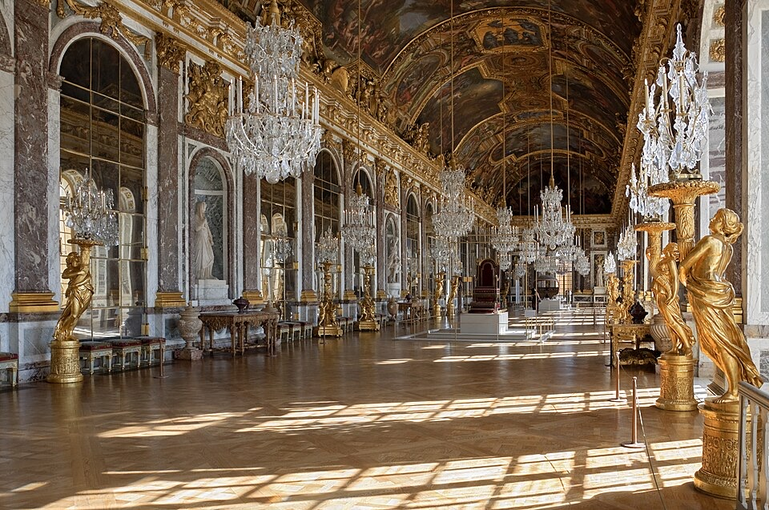
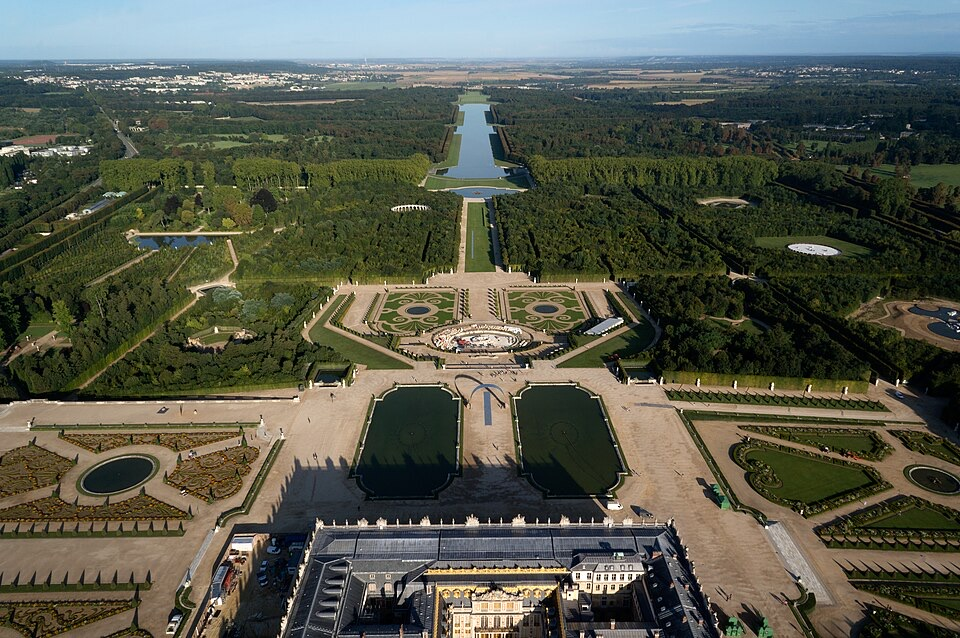
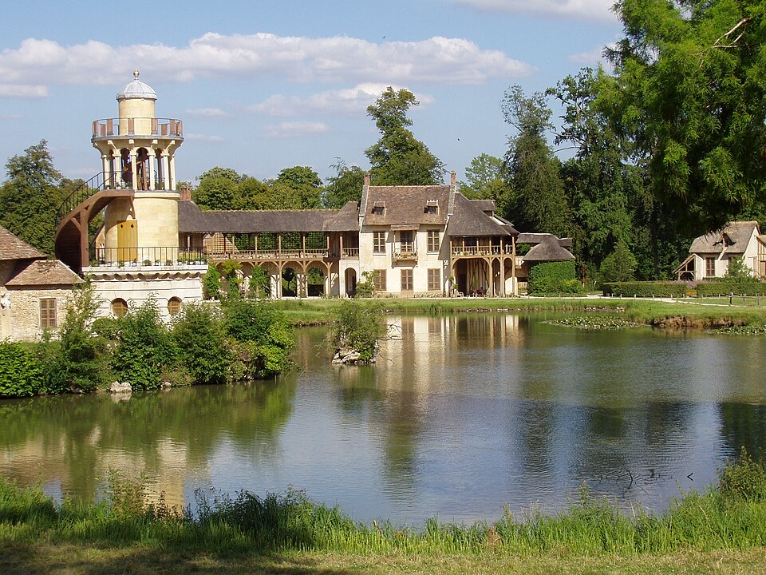
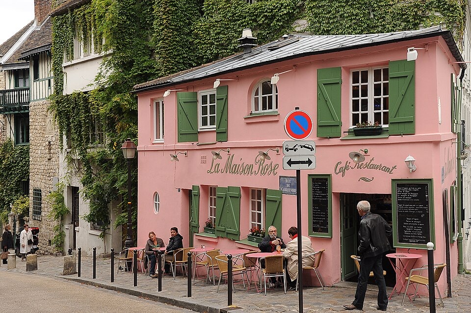

2026 巴黎 + 南法 一周双人行程（Proposal）
生成日期：2026-09-10
当前状态：行程建议稿，日期、机票、酒店都还没定。
这版行程的前提
- 两个人、9 天 7 晚：周六从 SFO 出发，下周日回到 SFO，只占 5 个工作日。
- 巴黎 4 晚 → 南法 3 晚。南法主方案是尼斯大本营（不开车）；想看薰衣草和山城就换备选 B：普罗旺斯自驾。
- 机票建议 open-jaw：飞进巴黎、从尼斯飞回，不走回头路。
- 每天的安排已经按星期对齐闭馆日和餐厅休息日（卢浮宫周二闭馆、奥赛周一闭馆、La Merenda 周末休……）。出发日期定了之后，先看第 6 节的闭馆速查。
- 营业时间、票价、订位规则、航班时刻都是 2026-09-10 的查询快照，出发前再复核一次；表里写「未核实」的是官网没查到的。
1. 旅程总览
每天去哪儿
| 日期 | 城市 / 区域 | 当天会去 / 做什么 | 天气 / 穿搭 | 晚上住哪里 |
|---|---|---|---|---|
| D1 周六 | 飞行 | SFO 下午直飞巴黎（AF083 15:05 或 UA990 14:40）。 | ✈️ 机舱冷 · 薄外套 | 飞机上 |
| D2 周日 | 巴黎 | 上午落地 CDG；玛黑区、孚日广场、圣路易岛、圣母院、新桥看日落。 | 🌤️ 春秋约 11–23°C · 风衣 + 好走的鞋 | 巴黎酒店 4 晚（首选 Hôtel du Louvre，见第 3 节） |
| D3 周一 | 巴黎 | 卢浮宫、杜乐丽花园、橘园、加尼叶歌剧院、皇家宫殿。 | 🌤️ 春秋约 11–23°C · 风衣 + 好走的鞋 | |
| D4 周二 | 巴黎 | 圣礼拜堂、奥赛、圣日耳曼、卢森堡公园、铁塔夜景。 | 🌤️ 春秋约 11–23°C · 风衣 + 好走的鞋 | |
| D5 周三 | 凡尔赛 / 巴黎 | 凡尔赛宫和花园、蒙马特、圣心堂日落。 | 🌤️ 春秋约 11–23°C · 风衣 + 好走的鞋 | |
| D6 周四 | 巴黎 → 尼斯 | TGV 或飞机去尼斯；老城、花市、城堡山日落。 | ☀️ 春秋约 14–25°C · 薄外套 + 墨镜 | 尼斯酒店 3 晚（首选 Palais de la Méditerranée，见第 3 节） |
| D7 周五 | 埃兹 / 摩纳哥 | 埃兹鹰巢村 → 尼采小道下山 → 摩纳哥老城、海洋博物馆 → 回尼斯吃 La Merenda。 | ☀️ 春秋约 14–25°C · 薄外套 + 墨镜 | |
| D8 周六 | 滨海自由城 / 费拉角 | Villefranche 老港 → 海鲜午餐 → 罗斯柴尔德别墅花园 → 回尼斯。 | ☀️ 春秋约 14–25°C · 薄外套 + 墨镜 | |
| D9 周日 | 尼斯 → SFO | 一次转机回 SFO，当天落地。 | ✈️ 机场日 | 到家 |
为什么这样排
- 先巴黎、后南法：落地倒时差时在交通最方便的城市；南法节奏慢，放在后半段收尾。
- 按星期对齐闭馆日：卢浮宫、橘园周二闭 → 放周一；奥赛、凡尔赛周一闭 → 放周二、周三；尼斯的 La Merenda 周末休 → 放周五。
- open-jaw 机票：从尼斯直接转机回 SFO，省掉回巴黎的半天，周日当天到家。
- 南法主方案不开车：尼斯大本营 + 火车 / 公交就能去埃兹、摩纳哥、Villefranche、昂蒂布。想看薰衣草和山城、能接受自驾，就换成备选 B：普罗旺斯。
- 每天只有 1–2 个要提前订票的点，其余都是走路顺路、累了就能放弃的点。
什么时候去
| 时间 | 巴黎 | 南法 | 结论 |
|---|---|---|---|
| 5 月下旬–6 月 | 白天 20–23°C，日落晚（21:30 后），适合逛街 | 6 月尼斯可以下海（5 月海水约 18°C 还偏凉）；普罗旺斯薰衣草 6 月中下旬开始 | 最推荐 两边都是好季节，6 月底前酒店还没到最贵 |
| 9 月中–10 月上旬 | 16–21°C，旅游人潮退去 | 海水还暖（9 月约 23°C）；普罗旺斯收葡萄季；摩纳哥亲王宫开到 10/15 | 推荐 如果今年出发，这是最近的好窗口 |
| 10 月中–11 月 | 10–16°C，常下雨，天黑早 | 尼斯白天约 17–21°C 还算舒服；亲王宫国事厅关闭、Fenocchio 等季节店陆续歇业；UA 尼斯–纽瓦克停飞 | 可以 巴黎看展为主，南法选尼斯版，别选普罗旺斯 |
| 7–8 月 | 热、人多；8 月很多小馆放假 | 尼斯海边人最多、酒店最贵；7 月上中旬是薰衣草高峰 | 看情况 冲着薰衣草就选 7 月初 + 普罗旺斯 |
| 12–3 月 | 冷，圣诞灯饰好看 | 南法很多餐厅、酒店冬休；尼斯 2 月有狂欢节 | 不推荐 这条巴黎 + 南法路线的性价比最低 |
蔚蓝海岸（尼斯版）：按季节
| 季节 | 气温 / 海水 | 人流 | 关闭 / 缩短 | 涨价的大型活动 | 结论 |
|---|---|---|---|---|---|
| 9–11 月（秋） | 9 月 24.8 / 17.7；10 月 21.0 / 14.0；11 月 17.0 / 9.7（Météo-France 1991–2020 常年平均最高/最低温）；海水 9 月约 23.4；10 月约 20.7；11 月约 18.2（月均）；下海：9 月可以；10 月上旬勉强可以（约 20°C）；11 月基本不行 | 9 月仍较多（游艇展、会展季）；10 月中旬以后明显减少；11 月是淡季 | 亲王宫国事厅 10/15 后关闭（至次年 3 月底）；Villa Ephrussi 11/1 后改冬季时间（工作日 10:00–16:30）；Musée Matisse 11/1 起 10:00–17:00；Chagall 馆 13:00–14:30 午休至 10/31，冬季时间未公布；城堡山公园 11/1 起 18:00 关门；Èze 植物园 11 月起 16:30 关；Chapelle Cocteau 约 11 月中至 12 月中闭馆；Fenocchio 据称 11/15 起冬歇（未核实）；ZOU! 602 路周日班次只开到 9/27 | Cannes Yachting Festival 2026-09-08 至 09-13；Monaco Yacht Show 2026-09-23 至 09-26（摩纳哥与尼斯酒店大涨）；MIPCOM（戛纳）2026-10-12 至 10-15；法国诸圣节学校假期（10 月底至 11 月初，具体日期未核实） | 9 月下旬至 10 月上旬最理想：还能游泳、景点仍按夏季时间开放、人少了；避开 Monaco Yacht Show 那一周。10/16 以后去就进不了亲王宫。 |
| 12–2 月（冬） | 12 月 14.1 / 6.6；1 月 13.3 / 5.8；2 月 13.5 / 6.1；海水 12 月约 15.9；1 月约 14.4；2 月约 13.7；下海：不行 | 全年最少；圣诞新年和 2 月狂欢节/柠檬节期间例外 | 亲王宫国事厅不开放；Fenocchio 据称冬歇约 11/15–2/15（未核实）；Chapelle Cocteau 12 月中前闭馆；Villa Ephrussi 工作日 16:30 关（周末和假期 18:00）；Èze 植物园 16:30 关；日落早，山村和花园要安排在上午到午后；602 路周日不开（以冬季时刻表为准） | Fête du Citron（Menton）2027-02-13 至 02-28；Nice 狂欢节：2026 年为 02-11 至 03-01（官网），2027 年主题 Vive l'Amour，日期官网尚未公布——这段时间尼斯和芒通酒店紧张、涨价；圣诞新年假期 | 价格低、人少，适合博物馆、老城和美食；海边和花园体验打折扣。 |
| 3–5 月（春） | 3 月 15.4 / 8.3；4 月 17.4 / 10.8；5 月 21.0 / 14.5；海水 3 月约 13.8；4 月约 15.0；5 月约 17.8；下海：基本不行（5 月底能下水的人很少） | 复活节假期起增多；5 月会展与电影节时是高峰 | 亲王宫国事厅约 3 月底开放（2026 年为 3/30）；4/1 起多数景点换夏季时间（Matisse 到 18:00、城堡山到 20:00、Èze 植物园到 19:30）；花园最美的季节 | MIPIM（戛纳）2027-03-16 至 03-19；Rolex Monte-Carlo Masters 网球赛（4 月，2027 日期未核实）；Monaco E-Prix 2027-05-01 至 05-02；Festival de Cannes 2027-05-11 至 05-22（整条海岸酒店暴涨）；F1 摩纳哥大奖赛 2027-06-03 至 06-06（紧接其后，海洋博物馆 GP 周末闭馆） | 4 月至 5 月上旬很适合这对夫妻：花园盛开、气温舒适、人还不算多；避开戛纳电影节和 F1 周。 |
| 6–8 月（夏） | 6 月 24.7 / 18.1；7 月 27.5 / 20.8；8 月 27.9 / 21.1；海水 6 月约 21.8；7 月约 24.7；8 月约 25.4；下海：可以（游泳季 6–10 月） | 全年最多：Èze、Monaco、老城人挤人，公交排长队，TER 拥挤，酒店最贵 | 几乎都开，而且延长时间：Villa Ephrussi 到 19:00（2026 年 7/13–8/25 周一、周二有 20:00–24:00 夜场）；亲王宫到 19:00；海洋博物馆 9:30–20:00；Fondation Maeght 到 19:00；Antibes 普罗旺斯市场每天开 | F1 摩纳哥大奖赛 2027-06-03 至 06-06；Cannes Lions 2027-06-21 至 06-25；Nice Jazz Festival（7 月，2027 日期未核实）；法国暑假（7–8 月） | 适合海滩度假，不适合讨厌排队的人；如果只能夏天去，每天 9 点前出门，中午躲进博物馆。 |
普罗旺斯（备选 B）：按月份
| 月份 | 气温 / 风雨 | 薰衣草 / 葡萄 | 人流 | 关闭 | 和尼斯版比 |
|---|---|---|---|---|---|
| 9月 | 均高约26 / 低约15；雨量约70mm；偶有雷暴 | 已全部收割，无花；采收季：吕贝隆一般9月初开始，罗讷河谷南部9月初、红葡萄约9月中；2026年热浪使成熟提前2–3周 | 中等；Arles Feria du Riz 2026/9/11–13（竞技场可能不开放参观）；Rencontres d'Arles 摄影节展至10/4 | 基本全开；季节性餐厅如 Omma 营业到约10/1 | 普罗旺斯最佳月份之一：气温舒适、葡萄采收、景点全开。首选普罗旺斯方案（想下海游泳才偏向尼斯） |
| 10月 | 均高约20 / 低约11；全年最湿（约100mm），易有地中海暴雨；密史脱拉风回归 | 无；采收尾声（10月上旬） | 中→低；法国万圣节学校假期（约10月下旬至11月初）人略多 | 开始收季：Le Moulin（Lourmarin）10/26后歇业；Omma 10/1后可能关；LUMA 10/5起每周二闭馆；Sentier des Ocres 10:00–18:00；Pont du Gard 博物馆 9:00–18:00 | 上半月仍推荐普罗旺斯；下半月看天气，暴雨天把行程换成 Avignon/Arles 室内景点 |
| 11月 | 均高约14 / 低约6；雨量约70mm；密史脱拉风强，可连刮6–9天，体感明显更冷 | 无；无 | 低 | 村庄酒店餐厅陆续歇业：Pont du Gard 博物馆11–2月关闭；Sentier des Ocres 11/16起只开11:00–16:00；Château de Lourmarin 中午休息；Les Bories 12月起闭店；Crillon le Brave 为季节性酒店（2026年关店日期未核实）；L'Oustau de Baumanière 冬季周二至周四休 | 不太推荐普罗旺斯：选尼斯方案更好（海边更暖、城市景点全开）。若坚持去，住 Avignon，行程以城市和 Arles 为主 |
| 12月–2月 | 均高约10–12 / 低约2–3；密史脱拉风最盛（阵风可超90 km/h），日照短 | 无；无 | 很低 | 大量闭馆闭店：Sentier des Ocres 1月闭园（2026年2/7重开）；Carrières des Lumières 1月初至2月中换展闭馆（2026年闭至2/12）；L'Oustau de Baumanière 年休（2026年1/25–3/6）；La Chassagnette 冬休（2025/12/21–2026/2/28）；Les Bories 12–3月关；Coquillade 次年3/19才开；Pont du Gard 博物馆关闭；Coustellet 农夫市集12/27后停到3月底 | 不推荐普罗旺斯自驾，选尼斯方案 |
| 3月–4月 | 3月 均高约16 / 低约6；4月 均高约19 / 低约8；3–4月仍可能刮密史脱拉风 | 无（只有绿色株丛）；无 | 低→中；复活节假期人多（2027年复活节为3/28），Arles 复活节斗牛节期间竞技场可能不开放参观（2027年日期未公布） | 很多酒店餐厅3月中下旬至4月初才开：Oustau de Baumanière 3/6、La Chassagnette 3/1、Coquillade 3/19、Crillon le Brave 4/3、Le Moulin 4/1（均为2026年日期）；Lourmarin 周二夜市4月起；Château La Coste 1–3月只开到17:00 | 3月偏早，很多地方没开，尼斯更稳；4月中旬后可选普罗旺斯 |
| 5月 | 均高约23 / 低约12；雨量约50mm，风减弱 | 未开花；无 | 中；法国长周末多（2027年：5/1、5/6耶稣升天节、5/8、5/17圣灵降临节周一），周末热门村庄和餐厅爆满 | 基本全开 | 推荐普罗旺斯：气候舒适、全面营业，长周末提前订餐 |
| 6月 | 均高约28 / 低约16；较干（约35mm） | 6月中低海拔开始开花；Valensole 盛花约6/25起，月底颜色最好；Sénanque 花田6月中至7月中；无 | 中→高（月底起） | 全开；Omma 6/1起营业 | 6月下旬是“薰衣草+不太热”的最佳窗口，强烈推荐普罗旺斯 |
| 7月 | 均高约31 / 低约18；全年最干（约25mm）；高温和山火风险 | 上旬盛花（Sénanque 7月初最盛）；Valensole 盛花期约到7/14，7月中开始收割，热年份7/25前大多割完；Valensole 薰衣草节2026年为7/19（届时很多田已割）；无 | 很高：Festival d'Avignon 2026年7/4–7/25（城内酒店贵且满，2027年日期未公布）；Rencontres d'Arles 7/6起 | 全开；高火险日步道和山区可能临时关闭（Sentier des Ocres 前一天18:00公布） | 上半月为了薰衣草值得去（避开 Avignon 节期间住城内）；下半月花已收、又热又挤，不如尼斯 |
| 8月 | 均高约30 / 低约17；约40mm，午后雷暴 | 基本已割完（Sénanque 曾公告8月第一周收割，热年份更早）；热年份月底南部早熟品种开始采收 | 最高（法国人度假季） | 全开；山火管制可能临时封路/关步道 | 不推荐专程普罗旺斯（热、挤、无薰衣草）；尼斯海边更合适 |
2. 机票（建议，未订）
机票还没订。建议订 open-jaw：SFO → 巴黎、尼斯 → SFO，中间巴黎 → 尼斯单独买 TGV 或廉航。
去程：SFO → 巴黎（周六出发）
| 方案 | 航班 | 时刻（当地时间） | 班期 / 机型 | 用什么订 | 备注 |
|---|---|---|---|---|---|
| 首选 | Air France AF083 | SFO 15:05 → CDG 2E 10:55 (+1) | 每日 · 777-300ER | Flying Blue（Amex / Citi 1:1 转点） | 周日上午 11 点前到，最贴合 D2。 |
| 首选 · United 里程 | United UA990 | SFO 14:40 → CDG T1 10:25 (+1)；冬季 13:55 → 09:40 | 每日 · 夏季 777-200ER / 冬季 787-8 | MileagePlus | SFO 唯一的星盟直飞，Polaris Saver 约 80k/单程起。 |
| 备选 | Air France AF081 | SFO 20:10 → CDG 15:50 (+1) | 夏季加班 · A350（冬季未核实） | Flying Blue | 周日下午才到，D2 要缩水。 |
| 现金最便宜 | French bee BF711 | SFO → Orly，时刻随季节变（例：20:30 → 16:20 +1） | 每周 3–7 班，常调整 · A350 | 现金 | 行李、餐食另付，不能用里程；到 Orly 打车进城左岸 €36 / 右岸 €45。 |
回程：尼斯 → SFO（周日，当天到）
| 方案 | 航线（周日） | 时刻（当地时间） | 用什么订 | 备注 |
|---|---|---|---|---|
| 首选 · United 里程 | Swiss 经苏黎世 | NCE 约 09:00 → ZRH 10:15；LX38 ZRH 13:10 → SFO 16:10（10/25 起 13:15 → 17:30） | MileagePlus 伙伴 | 时间最舒服：上午出发、傍晚到家。尼斯段班号未核实。 |
| 首选 · Flying Blue | Air France 经 CDG | AF7301 NCE 09:05 → CDG 10:40；AF082 CDG 15:40 → SFO 17:20（夏季第二班，冬季未核实）。早班：AF7321 06:00 → AF084 10:20 → SFO 12:50 | Flying Blue | CDG 要从申根区转出境，至少留 2 小时。 |
| 睡到自然醒 | Lufthansa 经慕尼黑 | LH2273 NCE 13:20 → MUC 14:45；LH458 MUC 16:20 → SFO 19:00（冬季 16:30 → 20:35） | MileagePlus 伙伴 | 周日早上还能逛花市、在海边吃早餐。 |
| optional | Lufthansa + United 经法兰克福 | LH1061 NCE 14:15 → FRA 15:55；UA927 FRA 17:30 → SFO 19:50 | MileagePlus | 下午才出发；United 自营段比较容易兑到 Saver。 |
| 季节性 | United 经纽瓦克 | UA273 NCE 12:10 → EWR 15:20；EWR → SFO 晚班 | MileagePlus | 只在约 4/13–10/24 飞，11 月不能用；要在 EWR 入境、重新托运行李，到家最晚（21:00 以后）。 |
| optional | KLM 经阿姆斯特丹 | KL1472 NCE 06:20 → AMS 08:20；KL605 AMS 09:50 → SFO 11:45 | Flying Blue | 到家最早，但转机只有约 1.5 小时，前段一延误就麻烦。 |
巴黎 → 尼斯（周四）
| 方式 | 时长 | 价格（单程） | 怎么订 | 适合 |
|---|---|---|---|---|
| 推荐 TGV INOUI | Paris Gare de Lyon → Nice-Ville，最快 5 小时 37 分 | 2 等座 Prems €29 起，常见 €55–79，临时买约 €130（1 等座 €45 起） | SNCF Connect | 一般提前约 4 个月开售。市中心到市中心、不安检，后半程沿海风景好。 |
| OUIGO | 与 TGV 相近 | €19 起，行李另收费 | OUIGO | 提前 6 个月以上开售，最省钱。 |
| 飞机 | 飞行约 1.5 小时，门到门 3.5–4.5 小时 | 常见 €50–150（托运另算） | Air France（只从 CDG 飞）/ Transavia（Orly）/ easyJet（两个机场） | 行李多、不想早起。 |
点数怎么换
| 计划 | 价格参考（2026-09） | 说明 |
|---|---|---|
| United MileagePlus | 经济舱 Saver 约 40k/单程起；Polaris Saver 约 80k/单程起；星盟伙伴（Lufthansa / Swiss）欧洲商务舱 88k | 动态定价、按单程计价：在 united.com 用「多城市」订 SFO–CDG + NCE–SFO，没有开口惩罚。联名卡主卡兑换 United 自营航班有折扣。 |
| Flying Blue（Air France / KLM） | 2026-09-08 起分 Light / Standard / Flex 三档（单程起）：经济 25k / 30k / 50k；超经 40k / 50k / 85k；商务 60k / 75k / 110k，另付税费约 $300–600 | Light 不含托运行李、贵宾室和选座，不能改退；每月初有 Promo Rewards（2026-09 档：SFO–欧洲超经 30k/单程起）。 |
| 转点 | Amex MR、Citi ThankYou（Strata Premier / Elite）、Chase UR、Bilt、Capital One → Flying Blue 都是 1:1 | Citi 不能转 Hyatt；Hyatt 酒店点数要从 Chase UR 或自己的 Hyatt 账户出。 |
| 现金参考 | 经济舱往返约 $730–1,350/人；Air France 官网 10 月约 $881 起、11 月约 $801 起；6 月、12 月最贵 | 开口票在 Google Flights 用「多城市」搜。 |
航班带来的行程约束
- 周日上午 10:30–11:00 落地 CDG，入境加 EES 登记可能排 1 小时以上，所以 D2 下午只排玛黑区步行。
- 周四去尼斯：TGV 要 7 点前后出发，下午才能在尼斯逛；飞机从 CDG（Air France）或 Orly（Transavia）起飞，别跑错机场。
- 周日回程都要在欧洲枢纽从申根区转出境，转机至少留 2 小时；早班机要 5 点前后出门（尼斯打车一口价 €32）。
- UA273 尼斯–纽瓦克只在 4 月中到 10 月下旬飞；11 月出行看 Swiss、Lufthansa 或 Air France。
- 以上时刻是 2026 年的数据；2027 年出行要重新核对。
3. 酒店（建议，未订）
住宿还没订。巴黎建议住右岸卢浮宫 / 旺多姆 / 玛黑一带：去 CDG 的出租车是右岸价 €56，D2–D5 大部分地方走路或坐 1–2 站地铁。尼斯建议住老城和 Place Masséna 之间，走路去花市、海边和 Nice-Ville 火车站都方便。价格和点数是 2026-09 的查询快照。
巴黎住哪一区
| 区域 | 优点 | 缺点 | 适合这趟 |
|---|---|---|---|
| 卢浮宫 / 皇家宫殿（1 区） | 最中心：D3 出门就是卢浮宫；M1 / M7；走路到塞纳河、玛黑区 | 游客多，周边餐厅偏贵 | 首选 |
| 玛黑区（3 / 4 区） | 周日也热闹，吃喝逛街最多；M1 直达卢浮宫 | 去左岸和凡尔赛要换乘 | D2 最方便 |
| 圣日耳曼 / 拉丁区（5 / 6 区） | 左岸咖啡馆氛围；RER B 直达 CDG、RER C 去凡尔赛 | CDG 打车按左岸价 €65 | 喜欢左岸的选这里 |
| 歌剧院 / 旺多姆（1 / 2 / 9 区） | Park Hyatt 所在，RER A 和多条地铁 | 晚上偏商业区，缺少街区烟火气 | 用 Hyatt 点数住 Park Hyatt |
巴黎酒店候选（4 晚）
| 推荐度 | 酒店 | 图片 | 区域 / 交通 | 价格 / 点数 | 为什么 | 注意 |
|---|---|---|---|---|---|---|
| 首选 · Hyatt 点数 | Hôtel du Louvre, in The Unbound Collection by Hyatt 官网 |
 |
1er 区 · Place André-Malraux，正对卢浮宫与 Palais-Royal（右岸）Metro Palais Royal–Musée du Louvre（1/7）就在门口；1号线直达 Champs-Élysées 与 Marais（Saint-Paul） | 约 $550–$1,100/晚（Kayak：起价约 $526，均价约 $929–$975；2月约 $661，6月约 $1,081） World of Hyatt Category 7：25,000–55,000 点/晚（UpgradedPoints 2026-09 资料；另有资料称 Cat 8，订前在 hyatt.com 核对） |
位置最中心：出门即卢浮宫与皇家宫殿花园，步行到塞纳河、Opéra；Hyatt 点数价远低于 Park Hyatt，4晚点数压力小。 | 大型历史酒店、风格较传统；临街房可能有噪音（未核实）；周边游客密集。 |
| 奢侈 · Hyatt 点数 | Park Hyatt Paris-Vendôme 官网 |
- | 2e 区 · Rue de la Paix / Place Vendôme（右岸）5 rue de la Paix；Metro Opéra（3/7/8）步行数分钟，RER A Auber 在附近；机场往返建议打车（步行时间为估算） | 约 $1,300–$2,500+/晚（Kayak：起价约 $1,283，均价约 $1,810–$1,907；2月约 $1,581，6月约 $2,519） World of Hyatt Category 8：35,000–75,000 点/晚（2026-05-20 起新五档：35k / 45k / 55k / 65k / 75k） |
与东京 Park Hyatt 同品牌，Hyatt 点数兑换价值最高（现金价常超 $1,500）；步行可达 Opéra、Tuileries、卢浮宫；有米其林星级餐厅。 | 现金价极高；新表下旺季最高 75k/晚，两人4晚可能要 14–30 万点；周边偏奢侈品商业区，夜晚缺少街区烟火气。 |
| 设计感 · Amex FHR | Le Grand Mazarin 官网 |
- | 4e 区 · Marais，近 Hôtel de Ville（右岸）Metro Hôtel de Ville（1/11）步行数分钟；Châtelet–Les Halles（RER B 直达 CDG）步行可达（步行时间未核实） | 约 $650–$1,250+/晚（Momondo 常见约 $754、起价约 $651；另一来源均价约 $1,248） 无集团积分；Amex Fine Hotels + Resorts（FHR）成员——用 Amex Platinum 经 Amex Travel 订可享 FHR 礼遇（早餐、延迟退房、酒店消费额度等，具体以 Amex 为准） |
新派五星设计酒店，50间客房+11间套房，Jean Cocteau 风格壁画下的马赛克室内泳池与水疗；Marais 中心，步行到塞纳河、Pompidou、Place des Vosges。 | 繁复的“最大主义”装潢见仁见智；不能用点数；周边夜间热闹。 |
| 左岸 · 设计 · 性价比 | Hôtel Dame des Arts 官网 |
- | 6e 区 · 4 rue Danton（Saint-Germain / Saint-Michel，左岸）RER B/C Saint-Michel Notre-Dame（RER B 直达 CDG，行李少时很方便）、Metro Saint-Michel（4）/ Odéon（4/10）步行可达 | 约 $450–$800/晚（HotelsCombined 均价约 $711；AAA 起价约 $569；淡季更低） 无集团积分；Amex Travel 列为 The Hotel Collection（THC）（另有资料称属 Preferred Hotels & Resorts，未核实） |
110间房的新派设计酒店（Raphaël Navot 设计），屋顶酒吧有360°巴黎视野；步行到 Notre-Dame、卢浮宫、Saint-Germain 与 Luxembourg 公园；价格是7家里最友好的之一。 | 房间偏小（点评反映）；Saint-Michel 一带游客多、较喧闹；早餐另收费。 |
| 备选 | Hyatt Paris Madeleine 官网 |
- | 8e 区 · Boulevard Malesherbes，近 Madeleine 教堂（右岸）Metro Madeleine（8/12/14）/ Saint-Augustin（9）步行可达；14号线直达 Orly（步行时间未核实） | 约 $600–$900/晚（Tripadvisor 2026 报价 $610–$869；另一来源最低约 €716） World of Hyatt Category 7：25,000–55,000 点/晚（类别来自 TPG 等资料，订前核对） |
小型精品规模、服务与清洁口碑好；Madeleine 站有地铁14号线，可直达 Châtelet 与 Orly 机场；Hyatt 点数可用。 | 8区偏商务，晚间街区氛围一般；去左岸、Marais 需乘地铁；现金价不低。 |
| 浪漫 · 只能现金 | Le Pavillon de la Reine & Spa 官网 |
 |
3e 区 · Place des Vosges（Marais，右岸）Metro Chemin Vert（8）、Saint-Paul（1）、Bastille（1/5/8）步行可达（步行时间未核实） | 约 $750–$1,400/晚（Momondo 均价约 $1,372；有报价 €729 起） 是 SLH（Small Luxury Hotels of the World）成员，但 World of Hyatt 自 2024-05-15 起不再在 SLH 酒店赚/兑点数、不给会员礼遇 → 目前不能用 Hyatt 点数订。Amex Travel 列为 The Hotel Collection（THC）。 |
坐落在巴黎最美广场 Place des Vosges 的17世纪宅邸，花园庭院安静浪漫，有水疗；出门就是 Marais 小店、咖啡馆、Musée Picasso。 | 不能用 Hyatt 点数；现金价高；到卢浮宫、奥赛、左岸需乘地铁。 |
| 左岸 · 只能现金 | Relais Christine 官网 |
- | 6e 区 · Saint-Germain-des-Prés（左岸）Metro Odéon（4/10）/ Saint-Michel（4）、RER B/C Saint-Michel Notre-Dame（RER B 直达 CDG）步行可达 | 约 $650–$1,200/晚（Kayak：起价约 $663，均价约 $738–$877；7月约 $1,199） Relais & Châteaux 与 SLH 成员；不能用 Hyatt 点数（Hyatt 已停止 SLH 赚/兑） |
17世纪宅邸（原修道院建筑）改建的家族精品酒店，有庭院与私家花园，闹中取静；有水疗、免费自行车；步行到 Notre-Dame、Saint-Germain、卢浮宫。 | 价格偏高且无点数玩法；房型差异大，便宜房型面积有限（未核实）。 |
注意：Le Pavillon de la Reine、Relais Christine 虽然是 SLH 成员，但 World of Hyatt 2024-05 起已不能在 SLH 酒店用点数。Park Hyatt Paris-Vendôme 适用 2026-05 起的新五档点数（35k–75k/晚），订前在 hyatt.com 查具体日期。
尼斯酒店候选（3 晚）
| 推荐度 | 酒店 | 图片 | 区域 / 交通 | 价格 / 点数 | 为什么 | 注意 |
|---|---|---|---|---|---|---|
| 首选 · Hyatt 点数 | Hôtel Palais de la Méditerranée, in The Unbound Collection by Hyatt（原 Hyatt Regency Nice Palais de la Méditerranée） 官网 |
 |
Promenade des Anglais，面朝天使湾，近 Place Masséna机场可乘 Tram L2 进城后步行；去 Monaco/Cannes 一日游从 Nice-Ville 站坐火车 | 标准房促销价约 €560 起/晚；套房高峰约 €2,306/晚（HfP 2026-08）；旺季标准房常规价未核实 World of Hyatt（已由 Hyatt Regency 改挂 The Unbound Collection，2026-06-02 翻新重开）；新类别未核实（翻新前资料有 Cat 5 与 Cat 7 两种说法，新表 Cat 5 = 15k–35k，Cat 7 = 25k–55k/晚）；HfP 实例：Prestige Sea View Suite 55,000 点/晚。Amex Travel 曾以原名列入 FHR（现状未核实）。 |
尼斯市中心唯一可用 Hyatt 点数的海滨豪华酒店；1929年 Art Deco 保护立面，2026年全面翻新（173间房含28间套房），室外泳池露台正对天使湾、屋顶露台、室内恒温泳池与水疗；步行到老城、Cours Saleya、Place Masséna。 | 刚重开，价格与点数价尚在调整；室内泳池很小（HfP）；餐厅价格偏高（主菜 €28+）。 |
| 性价比 · 私人海滩 | Hôtel Beau Rivage 官网 |
- | 老城西缘，距 Promenade des Anglais 与海滩约50米，Cours Saleya 花市步行5分钟Place Masséna 的 Tram 站步行可达（距离未核实） | 约 $200–$450+/晚（Hotels.com 2026 示例：标准房约 $185–$233，高房型 $446+；旺季价格未核实） 无集团积分（联盟归属未核实） |
1860年地标建筑配现代简约装修；尼斯少见的自有私人海滩 Plage du Beau Rivage（躺椅+餐厅）；老城与花市就在门口，吃喝最方便；5家中价格最友好。 | 四星级（Five Star Alliance 归入4星）；老城周边夜间较热闹。 |
| 海景 · 城堡山脚下 | Hôtel La Pérouse Nice Baie des Anges 官网 |
- | 天使湾东端、城堡山（Colline du Château）脚下，紧邻老城Tram 站 Garibaldi / Port Lympia 在步行范围（距离未核实）；机场 Tram L2 终点 Port Lympia 附近 | 约 $300–$900/晚（Momondo：标准房均价约 $706，区间 $313–$2,202，旺季高价房可超 $2,000） 无集团积分（联盟/Amex 归属未核实） |
依山面海，客房与屋顶露台俯瞰整个天使湾，是尼斯最经典的海景视角；步行1分钟到城堡山、约5分钟到老城；有季节性室外泳池与庭院餐厅 Le Patio。 | 部分点评称装修老旧、入口/电梯/走廊布局绕；离火车站最远；旺季价格涨幅大。 |
| 位置最中心 | Anantara Plaza Nice Hotel 官网 |
 |
市中心，Place Masséna 与 Promenade des Anglais 旁Tram L1（Masséna/Jean Médecin 方向）与 L2（Jean Médecin 站）均在步行范围，站距未核实 | 约 $300–$900/晚（Kayak：Deluxe 房 C$373 起；旺季明显更高，上限未核实） Anantara 品牌（酒店积分玩法未核实）；The Leading Hotels of the World（LHW）成员（Booking 标注） |
位置最居中：步行约2分钟到 Place Masséna 与 Promenade；屋顶餐厅早餐可看海景（点评高分）；151间重新设计的客房与水疗。 | 点评常抱怨价格高与额外收费；不在海边第一排、无海滩。 |
| 地标 · 最贵 | Le Negresco 官网 |
 |
37 Promenade des Anglais（海滨大道中西段）门前即 Promenade，沿海步行或乘 Tram L2 进老城/港口 | 约 $600–$1,450/晚（Momondo 均价约 $1,440、起价约 $602；Kayak 示例约 $1,052 含税；HotelsCombined 约 $1,258） 无集团积分；The Leading Hotels of the World（LHW）成员 |
尼斯最具标志性的粉色穹顶宫殿酒店，满馆艺术收藏，正对海滩；客房为新近翻新。 | 价格最高档；距老城偏远；立面工程应已于2026年4月结束（未核实），入住前确认水疗/海滩开放情况。 |
Palais de la Méditerranée 原来是 Hyatt Regency，2026-06 翻新后改挂 The Unbound Collection by Hyatt，新的点数类别未核实，订前查 hyatt.com。
4. 每日精细化 itinerary proposal
口径：地点文字本身就是 Google Maps 链接；餐厅从第 5 节「必吃榜」里就近挑，以第 5 节的表为准。营业时间、预约和排队情况出发前再复核一次。
交通标签：步行MetroRERTGV / TER 火车Tram巴士出租车/Uber飞机游船自驾行李
地点标签：必去optional路过扫一眼快进快出可认真逛时间黑洞预约/排队风险（放在“地点安排”列；备注列只写解释）
地图编号：表格里地点前的数字 = 当天地图上的编号，颜色区分类型。地图直接读表格里的地点，改了表格地图会跟着变；手机上地图用双指缩放。景点吃店公园 / 自然交通住
D1 · 周六：SFO 出发 ✈ 巴黎
下午从 SFO 直飞巴黎（航班选项见第 2 节），第二天上午落地。出发前把要提前锁的门票和餐厅确认一遍，上飞机就按巴黎时间睡。
| 模块 | 地点安排 | 特色图片 | 备注 |
|---|---|---|---|
| 出发前 1–8 周 |
门票 / 订位清单 必须提前订 |
- | 要提前订时段票的：卢浮宫、橘园、圣礼拜堂、加尼叶歌剧院、凡尔赛宫；铁塔登顶票提前 60 天开卖。餐厅订位按第 5 节「预约优先级」一家家处理。 |
| 出发前 1 天 |
手机 / 证件 / App | - | 检查护照有效期，开好 eSIM 或国际漫游；装好 Citymapper、Bonjour RATP、SNCF Connect，下载 Google Maps 离线地图。入境规则（EES / ETIAS）见第 7 节。 |
| 航班 | SFO 旧金山国际机场 飞机 |
- | SFO → 巴黎直飞约 10.5–11 小时，一般下午起飞、次日上午落地。上机就把手表调成巴黎时间：通常比加州快 9 小时（3 月和 10 月底–11 月初各有一两周只差 8 小时）。 |
D2 · 周日：抵达巴黎 / 玛黑区 / 圣路易岛 / 圣母院
上午落地，下午只走一条步行线。周日巴黎很多店关门，但玛黑区是旅游区，大部分店照常营业，正好放在落地这天。
在 Google Maps 打开当天步行路线
| 模块 | 地点安排 | 特色图片 | 备注 |
|---|---|---|---|
| 上午 | 戴高乐机场 CDG 出租车/UberRER行李 |
- | 入境加取行李预留 1–1.5 小时（第一次入境要做 EES 指纹和拍照）。两个人带着行李直接打车最省事：出租车一口价按车算，右岸 €56、左岸 €65；轻装可以坐 RER B 到 Châtelet–Les Halles，机场票 €14/人。RoissyBus 2026-03 起已停运。 |
| 酒店寄存行李（住宿见第 3 节） 行李 |
- | 一般 15:00 以后才能入住，先寄存行李、简单洗漱就出门，白天别补觉。 | |
| 午餐 | L'As du Fallafel（炸豆丸子皮塔）备选：Miznon（整颗烤花椰菜 / 牛肉皮塔）快进快出排队但翻台快步行 |  |
两家都是周六休息、周日照常开，落地这天刚好。L'As 门口队伍长但走得很快，外带在 rue des Rosiers 边走边吃最省时间。 |
| 下午 玛黑区 |
Dover Street Market ParisFleux'（家居设计） / L'Éclaireur Sévigné / Merci 概念店optional可认真逛步行 | - | 周日照常开：DSM 12:00–19:00、Fleux' 11:00–20:30、L'Éclaireur 14:00–19:00、Merci 10:00–19:30。选物和设计店很密，挑 2–3 家就好，别在落地日把体力用完。 |
| 叙利府邸花园（穿行到孚日广场）孚日广场 Place des Vosges必去步行 |  |
叙利府邸（62 rue Saint-Antoine）的庭院和花园每天 9:00–19:00 开，从花园尽头的小门可以直接走进孚日广场。孚日广场是巴黎最老的广场，拱廊下一圈都是画廊，适合坐一会儿。 | |
| 巴黎毕加索博物馆 Musée Picasso或：卡纳瓦雷博物馆（巴黎历史，常设展免费）optional可认真逛 |  |
体力够再二选一：毕加索博物馆周日 9:30–18:00、€16，每月第一个周日免费；卡纳瓦雷常设展免费。两家周一都闭馆，想看只能放今天。 | |
| 傍晚 圣路易岛 |
圣路易岛 Île Saint-LouisBerthillon 冰淇淋路过扫一眼步行 |  |
Berthillon 周一、周二休息，法国学校放假期间（圣诞假除外）整店不开，10 月下旬的万圣节假期要留意。岛上街道安静，边吃冰淇淋边慢慢走。 |
| 巴黎圣母院 Notre-Dame de Paris 必去可认真逛当天放免费时段 |
 |
2024 年底修复后重开，大教堂免费。官网 / App 的免费时段只在当天提前几小时放出，不预约也可以排队。登塔 €16，必须提前在官网订。 | |
| 莎士比亚书店 Shakespeare and Company 快进快出步行 |
 |
就在圣母院对岸，进去逛 20–30 分钟。官网营业时间没核实到，出发前再看一眼。 | |
| 日落 | 新桥 Pont Neuf绿林好汉广场（西岱岛最西端）必去步行 |  |
从新桥走下台阶到西岱岛最西端的 Square du Vert-Galant，坐在河边看日落。D3 晚上的游船也从这里的 Vedettes du Pont Neuf 码头出发。 |
| 晚餐 | Chez Janou（普罗旺斯风味 bistro）备选：Breizh Café（荞麦可丽饼 galette）电话订位Metro | - | Chez Janou 每天营业，只接受电话订位（01 42 72 28 41），招牌是一大碗端上桌、自己舀的巧克力慕斯。不想打电话就去 Breizh Café（官网可订，每天营业）。落地日早点吃、早点睡。 |
📍 顺路候选（有空再加）：
- 【吃·玛黑】optional快进快出Yann Couvreur — rue des Rosiers 的甜点和可颂，官网称每天营业；Jacques Genin — 手工焦糖和果软糖，周一休；Chez Alain Miam Miam — 红孩儿市场里现做的夹馅三明治，周一、周二休，周日可以吃；Café des Musées — 红酒炖牛肉，每天营业、官网可订
- 【店·玛黑】optional可认真逛Empreintes — 法国手工艺概念店，周日、周一休，想去要换到 D5 早上；红孩儿市场 Marché des Enfants Rouges — 巴黎最老的室内市场，营业时间官网没核实到
D3 · 周一：卢浮宫 / 杜乐丽 / 橘园 / 加尼叶歌剧院 / 皇家宫殿
右岸经典一日：上午卢浮宫，下午穿过杜乐丽花园去橘园看莫奈《睡莲》，再去加尼叶歌剧院，傍晚回到皇家宫殿和拱廊街。三个馆都要提前订时段。
在 Google Maps 打开当天步行路线
| 模块 | 地点安排 | 特色图片 | 备注 |
|---|---|---|---|
| 早餐 | Café Kitsuné Palais-Royal 快进快出步行 |
- | 每天 8:30 开，在皇家宫殿花园的拱廊里，走到卢浮宫入口 5 分钟。 |
| 上午 | 卢浮宫 Musée du Louvre 必去时间黑洞订 9:00 时段票 |
 · CC BY-SA 3.0 · Wikimedia Commons") |
周二闭馆，所以放周一（周一 9:00–18:00）。2026-01-14 起非欧盟游客 €32。订 9:00 第一场，直奔胜利女神 → 断臂维纳斯 → 蒙娜丽莎 → 拿破仑三世套房，3 小时左右出来。出馆后不能再进。 |
| 午餐 | Higuma（日式拉面 / 炒饭）备选：Sanukiya 手打乌冬快进快出步行 |  |
卢浮宫北边的 rue Sainte-Anne 是巴黎的日本街，倒时差第二天吃碗热汤面最舒服。Higuma 不接受预订、翻台快；Sanukiya 每月第二个周二休息。想吃法餐就把晚餐的 Le Grand Colbert 挪到中午（午市套餐 €30 起）。 |
| 下午 | 杜乐丽花园 Jardin des Tuileries 路过扫一眼步行 |
 |
从卢浮宫往西穿过杜乐丽花园走到协和广场，大约 15 分钟。 |
| 橘园美术馆 Musée de l'Orangerie 必去快进快出必须订时段 |
 |
看莫奈《睡莲》的两个椭圆展厅，1 小时足够。所有人都必须预约时段（包括免费对象），周二闭馆。建议订 14:00 左右。 | |
| 旺多姆广场 Place Vendôme 路过扫一眼步行 |
 |
从协和广场经 rue de Castiglione 走向歌剧院，顺路穿过旺多姆广场，扫一眼就好。 | |
| 加尼叶歌剧院 Palais Garnier 必去可认真逛只能网上订 |
 |
自助参观只能网上预约，现场不卖；非欧盟 €25。每天 10:00–17:00，闭馆前 1 小时停止入场，最晚订 15:30 左右的时段。有演出或彩排时观众厅可能不开放。 | |
| 老佛爷百货屋顶露台 快进快出步行 |
 |
就在歌剧院背后。屋顶露台免费（周一至周六 10:00–20:00），能同时看到歌剧院屋顶和远处的铁塔；雨天或大风会临时关闭。 | |
| 傍晚 | 薇薇安拱廊 Galerie Vivienne皇家宫殿花园与布伦柱必去步行 |  |
从歌剧院往南走 15 分钟。薇薇安拱廊每天 8:30–20:00 开，是保存最好的 19 世纪拱廊街；旁边的皇家宫殿花园 10–3 月开到 20:30，傍晚的黑白条纹布伦柱最好拍。 |
| 晚餐 | Le Grand Colbert（老派 brasserie）平价备选：Bouillon Chartier（不能订位）官网订位步行 |  |
就在薇薇安拱廊隔壁的 Galerie Colbert 里，每天营业，官网或电话可订；洋葱汤、蜗牛、生蚝都有。想省钱就去 Chartier：每天营业、不能订位，门口排队看运气。 |
| 晚上 （可选） |
Vedettes du Pont Neuf 塞纳河夜游 optional游船 |
- | 从皇家宫殿走到新桥码头 15 分钟，1 小时一圈，线上买票比现场便宜（€15 / €17）。累了就回酒店，D4 晚上还会看铁塔。 |
📍 顺路候选（有空再加）：
- 【吃·卢浮宫 / 歌剧院】optional快进快出Stohrer — rue Montorgueil 上的老甜点店，baba au rhum €6.10，每天营业；Angelina — 杜乐丽花园对面，浓稠热巧克力和 Mont-Blanc，常排队；Frenchie — 想奢侈一晚就订：只有晚餐、5 道式 €148，Zenchef 大约提前 3 周放位
- 【店·卢浮宫周边】optional快进快出E. Dehillerin — 百年厨具老店，周一 9:00–12:30、14:00–18:00，周日休；Astier de Villatte — 白釉陶器和香氛，营业时间官网没核实到；Galignani — rue de Rivoli 的老牌英法文书店；皮诺收藏馆 Bourse de Commerce — 安藤忠雄改造的皮诺收藏馆，周一开、周二闭馆；2026/8/26–10/5 在换展
D4 · 周二：圣礼拜堂 / 奥赛 / 圣日耳曼 / 卢森堡公园 / 铁塔夜景
左岸一日：早上看圣礼拜堂的彩色玻璃，接着去奥赛；下午是圣日耳曼的咖啡馆、甜点和选物店，傍晚去卢森堡公园和乐蓬马歇，晚饭后去看铁塔整点闪灯。
在 Google Maps 打开当天步行路线
| 模块 | 地点安排 | 特色图片 | 备注 |
|---|---|---|---|
| 上午 | 圣礼拜堂 Sainte-Chapelle 必去快进快出必须订时段 |
 · CC BY-SA 2.5 · Wikimedia Commons") |
必须预约时段并准时到，安检严（别带大包和玻璃瓶）。2026-01-12 起非欧盟 €22。有太阳的上午彩色玻璃最好看，订 9:00。10–3 月 9:00–17:00，4–9 月开到 19:00。 |
| 奥赛博物馆 Musée d'Orsay 必去时间黑洞订时段票 |
 |
沿塞纳河走 20 分钟到。周一闭馆，周二至周日 9:30–18:00（周四夜场到 21:45）。印象派在 5 楼，先上楼再往下看，大约 2.5 小时。票价出发前在官网确认。 | |
| 午餐 | Le Relais de l'Entrecôte（只有一种牛排套餐）备选：Le Comptoir du Relais快进快出不能订位步行 |  · 📷 Missvain · CC BY 4.0 · Wikimedia Commons") |
不能订位、没有菜单：核桃沙拉 + 秘制酱汁牛排 + 薯条，牛排和薯条会再上一轮。每天营业，12:00 开门时去排队最短。 |
| 下午 圣日耳曼 |
圣日耳曼德佩教堂 Saint-Germain-des-PrésCafé de Flore / Les Deux Magots必去步行 |  |
先看一眼巴黎最老的教堂之一，然后在 Café de Flore 或对面的 Les Deux Magots 坐下喝杯热巧克力（Flore 的招牌热巧克力 €10）。 |
| Officine Universelle BulyPierre Hermé / Poilâneoptional快进快出步行 |  |
rue Bonaparte 上：Buly 是老药房风格的香氛和梳子店（每天 11:00–19:00），Pierre Hermé 买马卡龙和 Ispahan。Poilâne 在 rue du Cherche-Midi，周日休，今天可以去买一小块酸种面包。 | |
| 卢森堡公园 Jardin du Luxembourg 必去步行 |
 |
免费。开放时间每半个月随日落调整（例如 10 月上旬约 7:45–18:45），傍晚前去，坐在水池边的绿色铁椅上歇歇脚。 | |
| 傍晚 购物 |
乐蓬马歇 Le Bon Marché + La Grande ÉpicerieDeyrolle 自然标本老店可认真逛时间黑洞步行 |  |
巴黎最有设计感的百货，隔壁的 La Grande Épicerie 适合买伴手礼（营业时间官网没核实到，一般开到 20:00）。Deyrolle 在 rue du Bac（周一至周六 10:00–19:00），楼上的标本展厅很值得看。 |
| 晚餐 | Chez L'Ami Jean（巴斯克风味 bistro）看塔备选：Les Ombres（凯布朗利博物馆屋顶）官网订位Metro | - | 铁塔附近的热门 bistro，分量大，甜点一定要点有名的米布丁 riz au lait。周日、周一休息，只能放周二到周六；官网或电话订，越早越好。想边吃边看塔就订 Les Ombres（OpenTable）。 |
| 夜景 | 特罗卡德罗广场看铁塔埃菲尔铁塔（登顶 optional）必去步行Metro |  |
天黑后铁塔每个整点闪灯 5 分钟（最后一场的时间出发前在官网确认）。想登顶就订日落前后的电梯登顶票（€36.70，提前 60 天开卖；2026-09-29 起走楼梯也要预约）。 |
📍 顺路候选（有空再加）：
- 【吃·左岸】optional快进快出Fromagerie Laurent Dubois — MOF 奶酪熟成师，买陈年 Comté 回酒店配面包，周一休；Coutume — 乐蓬马歇旁的精品咖啡；Madame Brasserie — 铁塔 1 楼餐厅，官网订位，价格偏高但景观独一份
- 【景点·7 区】optional可认真逛罗丹美术馆 Musée Rodin — 周二开（周一闭），€14，罗丹 + 奥赛联票 €25；雕塑花园很适合放慢节奏；亚历山大三世桥 Pont Alexandre III — 最华丽的一座桥，从铁塔走回市中心时顺路；Diptyque 创始店 — 34 boulevard Saint-Germain
D5 · 周三：凡尔赛宫 / 蒙马特 / 圣心堂日落
上午看凡尔赛宫和花园，午饭在花园里吃；下午回巴黎，从 Abbesses 一路上坡逛蒙马特，傍晚到圣心堂。这是巴黎最后一个整天，晚上别熬太晚，明天去南法。
| 模块 | 地点安排 | 特色图片 | 备注 |
|---|---|---|---|
| 早上 | RER C → Versailles Château–Rive Gauche RER |
- | 从 Saint-Michel Notre-Dame 或 Musée d'Orsay 站坐 RER C，约 40–45 分钟。RER C 周末和夜间常施工停运，前一天查一下；停运时改从 Montparnasse 坐 Transilien N 到 Versailles Chantiers。 |
| 上午 | 凡尔赛宫 Château de Versailles镜厅必去时间黑洞必须订时段 |  |
周一闭馆。进宫殿必须预约时段，建议买 Passport（宫殿 + 花园 + Trianon）：4–10 月非欧盟 €35，11–3 月 €25。订 9:00 第一场，先看国王大套房和镜厅，2–3 小时。 |
| 凡尔赛花园 Jardins de Versailles 必去可认真逛步行 |
 |
4/1–10/30 的周二到周五是「音乐花园日」，花园要门票（Passport 已含）；大型音乐喷泉只在周六。沿中轴线一路走到大运河。 | |
| 午餐 | La Flottille（大运河边）备选：Ore（宫殿入口区，Ducasse）官网订位步行 | - | La Flottille 每天营业，官网或电话可订，传统法餐。Ore 在宫殿入口区，周一休，有含门票的套餐。 |
| 下午 （可选） |
小特里亚农宫 Petit Trianon王后农庄optional可认真逛步行 |  |
Trianon 12:00 开，从大运河走过去 20–30 分钟。脚力不够就跳过，15:00 前回城。 |
| 傍晚 蒙马特 |
爱墙 Le Mur des je t'aime 路过扫一眼Metro |
 |
回城后坐 M12 到 Abbesses 站，出站就是「我爱你」墙，从这里开始往上爬。 |
| 粉红之家 La Maison Rose 快进快出步行 |
 |
rue de l'Abreuvoir 转角的粉红小屋，拍照点。周一、周二不营业；15:30–17:30 下午茶时段不用订位。 | |
| 小丘广场 Place du Tertre 路过扫一眼步行 |
 |
画家广场，游客最多，走一圈就好。看好手机和包，别理会拉手绳、签请愿书的人。 | |
| 日落 | 圣心堂 Sacré-Cœur 必去步行 |
 |
教堂免费（6:30–22:30）。穹顶 €8、只能现场买，最后一次上行 20:15，天气好值得爬。坐在台阶上看整个巴黎的日落。 |
| 晚餐 | Bouillon Pigalle（平价法式家常）饭后甜点：Sébastien Gaudard（rue des Martyrs）官网订位步行 |  |
下山 10 分钟到。每天营业、官网可订，洋葱汤 €3.90 起，价格很友好。rue des Martyrs 甜点店和面包店很多，饭后散步到 Pigalle 站。 |
📍 顺路候选（有空再加）：
- 【吃·蒙马特 / SoPi】optional快进快出KB Coffee Roasters — SoPi 的精品咖啡（营业时间未核实）；Mamiche — 酸种面包和可颂，适合明早带去南法路上吃；Cédric Grolet Opéra — 水果造型甜点，周一、周二休，周三可以；官网 click & collect 至少提前 24 小时下单
巴黎备选：换一天 / 下雨天 / 设计加码
| 场景 | 换成什么 | 注意 |
|---|---|---|
| 不想去凡尔赛 | 圣马丁运河 Canal Saint-Martin / Du Pain et des Idées / 罗丹美术馆 Musée Rodin | Du Pain et des Idées 周六、周日休，工作日才开；罗丹美术馆周一闭馆。周三晚上还能加一场卢浮宫夜场（周三、周五开到 21:00）。 |
| 想看莫奈花园 | 莫奈花园 Giverny | 2026 季开放到 11/1，每天 10:00–18:00，€13，官网建议预约（每天有名额上限）。从 Saint-Lazare 坐火车到 Vernon-Giverny 再转接驳车，可以整天替换凡尔赛。 |
| 下雨天 | 雅克马尔-安德烈博物馆 / 小皇宫 Petit Palais / 大皇宫 Grand Palais / 光之工作室 | 雅克马尔-安德烈每天开（周五到 22:00）；小皇宫常设展免费（周一闭）；大皇宫 2025 年修复后重开（周一闭）；光之工作室是沉浸式数字艺术展，线上买票便宜 €2。 |
| 设计 / 建筑加码 | 皮诺收藏馆 Bourse de Commerce / 卡地亚当代艺术基金会 / 路易威登基金会 Fondation Louis Vuitton / 柯布西耶拉罗什别墅 | 皮诺收藏馆（安藤忠雄改造）周二闭馆，2026/8/26–10/5 换展；卡地亚基金会搬到皇家宫殿新馆，换展闭馆到 2026/10/22；LV 基金会闭馆到 2026/10/9，平时周二闭馆；拉罗什别墅周二至周六开，必须线上预约。 |
| 逛市场 | 巴士底露天市场 / 阿里格尔市场 / Rue Montorgueil | 巴士底市场只有周四、周日上午（D6 早上出发前可以去）；阿里格尔露天市场周二到周日上午；旁边的 Le Baron Rouge 酒吧秋冬周末有生蚝。 |
| 已经闭馆，别白跑 | 蓬皮杜中心 / 伊夫·圣罗兰博物馆 | 蓬皮杜 2025/9/22 起整栋闭馆，计划 2030 年重开；YSL 博物馆翻修到 2027 年秋。 |
D6 · 周四：巴黎 → 尼斯 / 老城 / Cours Saleya / 城堡山日落
上午从巴黎去尼斯，TGV 和飞机二选一（见下表），中午前后到。下午不走远，把尼斯老城、花市和城堡山日落串成一条步行线。
在 Google Maps 打开当天步行路线
| 模块 | 地点安排 | 特色图片 | 备注 |
|---|---|---|---|
| 早上 方案 1 |
TGV：Paris Gare de Lyon → Nice-Ville TGV行李 |
 |
推荐想看风景的走法：7:00 前后的 TGV INOUI 直达，最快 5 小时 37 分，约 13:00 到尼斯市中心，不用安检。提前买 2 等座 Prems €29 起，常见 €55–79，临时买约 €130；一般提前约 4 个月开售。过了马赛之后沿海开，海在行进方向的右手边。 |
| 早上 方案 2 |
飞机：CDG / Orly → NCE 飞机Tram |
- | Air France 2026 年起巴黎–尼斯只从 CDG 飞；Orly 出发的是 Transavia，easyJet 两个机场都有。飞行约 1.5 小时，门到门 3.5–4.5 小时，单程常见 €50–150（托运行李另算）。行李多、不想早起就选飞机。 |
| 中午 | 尼斯火车站 Nice-Ville或：尼斯机场 NCETram行李 | - | TGV 到的 Nice-Ville 就在市中心，打车或步行去酒店放行李。飞机落地从机场坐 Tram T2 进城约 30 分钟：机场站进出必须买 AERO 往返票 €10（只卖往返），市区单程票 €1.70；带行李打车到市中心是一口价 €32。 |
| 午餐 | Chez Pipo（socca 老店）或：Chez Thérésa（Cours Saleya 市集摊位）快进快出不订位步行 | - | 到尼斯第一口吃 socca：现烤的鹰嘴豆薄饼，趁热撒黑胡椒，再来一块洋葱挞 pissaladière。Chez Pipo 在港口旁边，周三至周日午餐 11:30–14:30、晚餐 17:30 起，周一、周二休；不订位，TGV 到站后直接过去别拖。 |
| 下午 老城 |
萨莱雅市集 Cours Saleya尼斯老城小巷必去可认真逛步行 |  |
花市周二到周日开（周四 6:00–17:30），周一换成古董市。老城巷子里慢慢逛：Sainte-Réparate 大教堂、Palais Lascaris（周二闭馆，€5）。 |
| Fenocchio 冰淇淋Maison Auer 蜜饯老店快进快出步行 | - | Place Rossetti 上的冰淇淋店，试试薰衣草、紫罗兰、番茄罗勒这类本地口味（二手资料说每年约 11/15–2/15 冬季歇业）。Maison Auer 的蜜饯水果适合当伴手礼，周日休（周一是否营业有两种说法）。 | |
| 日落 | 城堡山 Colline du Château 必去步行 |
 |
从老城东边坐免费电梯上去（也可以走台阶），在人工瀑布旁的观景台看天使湾日落。公园 4–10 月 8:30–20:00，11–3 月 8:30–18:00，冬天要早点上去。 |
| 英国人散步大道 Promenade des Anglais 路过扫一眼步行 |
 |
下山后沿着海边的蓝色椅子散步，夜里的天使湾很漂亮。 | |
| 晚餐 | Olive & Artichaut（本地小农时令菜）备选：Bistrot d'Antoine（只接电话订位）官网订位步行 | - | 老城里用本地小农食材的现代尼斯菜，官网（Guestonline）或电话订，提前 3–7 天。周日、周一休（米其林页面写周一、周二休，以官网为准）。 |
D7 · 周五：埃兹鹰巢村 / 尼采小道 / 摩纳哥
蔚蓝海岸最经典的一天：上午在山顶的埃兹村，中午沿小道下山，下午在摩纳哥老城和蒙特卡洛。全程公交 + 火车，不用开车。
| 模块 | 地点安排 | 特色图片 | 备注 |
|---|---|---|---|
| 早上 | Nice Vauban 公交站 巴士 |
- | 坐 Lignes d'Azur 82 路（€1.70 市区票）或 ZOU! 602 路（约 €2.10）上埃兹村，车程 20–30 分钟。这几条线每天只有 6–8 班，前一天查好时刻表，挑 9:00 左右那班；旺季上午车很挤，提前 10–15 分钟到站排队。 |
| 上午 埃兹 |
埃兹村 Èze埃兹异域花园（村子最高处）必去可认真逛步行 |  |
中世纪鹰巢村，巷子很窄，赶在 10:30 旅游团到之前逛完。山顶的异域花园俯瞰整片海岸，成人约 €10（二手资料，官网没核实到）。 |
| 尼采小径 Chemin de Nietzsche optional可认真逛步行 |
 |
从村子沿尼采小道下山到海边的 Èze-sur-Mer 火车站，45–60 分钟，一路下坡看海。穿防滑鞋；雨后湿滑或 11 月后天黑早，就改坐公交下山。 | |
| 中午 | TER：Èze-sur-Mer → Monaco-Monte-Carlo TER |
- | 坐一站到摩纳哥。摩纳哥火车站在地下，出口很多，去老城和去赌场的出口不同，跟着指示牌走。也可以坐沿海的 ZOU! 600 路公交（€2.10），慢一些但海景好。 |
| 午餐 | La Montgolfière（摩纳哥老城小馆） 电话订位步行 |
- | 在老城里、离亲王宫很近，午餐是黑板菜单（主菜 €16–31）。周三、周日休，电话 +377 97 98 61 59；营业状况待复核，订不到就在老城随便吃点。 |
| 下午 摩纳哥 |
摩纳哥老城 Monaco-Ville亲王宫国事厅必去可认真逛步行 |  |
老城建在海边悬崖上。亲王宫国事厅 2026 季 3/30–10/15 开放，成人 €13，10/16 以后就不开了。卫兵换岗每天 11:55，下午到的话看不到。 |
| 摩纳哥海洋博物馆 Musée océanographique optional可认真逛 |
 |
建在悬崖上的海洋博物馆和水族馆，成人 €20.50（也有 €22.50 的说法，以购票页为准）；9 月开到 19:00，10 月到 18:00。屋顶露台视野很好。 | |
| 傍晚 | 蒙特卡洛赌场 Casino de Monte-Carlo 路过扫一眼步行 |
 |
赌场内部参观只在 10:00–13:00（€20），下午来就看外观和 Café de Paris 前的广场。14:00 以后的游戏厅要带证件、穿着得体。 |
| 回程 | TER：Monaco-Monte-Carlo → Nice-Ville TER |
- | 约 20 分钟回尼斯。遇到罢工（grève）TER 会大面积取消，出发前在 SNCF Connect 查一下；备选是 ZOU! 600 路公交。 |
| 晚餐 | La Merenda（尼斯传统菜） 难订 · 只收现金步行 |
- | 尼斯最有名的传统菜小馆，招牌是青酱意面和炸西葫芦花。周六、周日休，所以放周五；官网（SevenRooms）提前 1–2 周订。多家来源称只收现金，记得带够。 |
D8 · 周六：滨海自由城 / 罗斯柴尔德别墅花园 / 费拉角
节奏放慢的一天：TER 7 分钟到 Villefranche，上午在彩色老港，中午吃海鲜，下午去费拉角的罗斯柴尔德别墅花园，晚上回尼斯吃这趟最后一顿晚餐。
| 模块 | 地点安排 | 特色图片 | 备注 |
|---|---|---|---|
| 上午 | 滨海自由城 Villefranche-sur-Mer TER必去步行 |
 |
从 Nice-Ville 坐 TER 6–7 分钟，车站就在海湾边。逛老港的彩色房子，看 Cocteau 画的 Chapelle Saint-Pierre（周二闭，门票约 €4，未核实）。 |
| 午餐 | La Mère Germaine（老港海鲜） 官网订位步行 |
- | 港口边的老牌海鲜餐厅，吃当天的鲜鱼。露台位建议提前约 1 周在 Zenchef 订；周一、周二休。 |
| 下午 | 罗斯柴尔德别墅花园 Villa Ephrussi de Rothschild 必去可认真逛建议网上买票 |
 |
粉色别墅加九个主题花园，两边都是海湾。2026-02-02 至 11-01 每天 10:00–18:00（7–8 月到 19:00），冬季工作日只开到 16:30；成人 €18，含中文语音导览。坐 Lignes d'Azur 15 路到 Passable – Rothschild 站再步行。 |
| 凯里洛斯别墅 Villa Kérylos optional快进快出 |
 |
旁边 Beaulieu 海边的古希腊风格别墅，和罗斯柴尔德别墅有联票；开放时间出发前在官网查。时间够再去。 | |
| 傍晚 （可选） |
费拉角海岸步道 / Paloma Beach optional时间黑洞步行 |
- | 6–9 月天气好就去 Paloma Beach 泡一下海水；其他季节沿费拉角海岸步道走一小段就好。回尼斯可以坐 15 路公交，或走到 Beaulieu-sur-Mer 站坐 TER。 |
| 晚餐 | Bistrot d'Antoine（市场料理小酒馆） 电话订位步行 |
- | 老城里的人气小酒馆，按黑板上的时令菜点。只接受电话订位（+33 4 93 85 29 57），常常客满，提前一周以上打；周日、周一休，周六正好。注意周六 La Merenda、Acchiardo、Le Canon 都不开。 |
D9 · 周日：尼斯 → 转机 → SFO（当天到）
从尼斯飞回湾区，一次转机，当天就能落地 SFO。中午以后的航班可以早上再去一趟周日花市。
| 模块 | 地点安排 | 特色图片 | 备注 |
|---|---|---|---|
| 早上 （看航班） |
Cours Saleya 周日花市 optional快进快出步行 |
- | 周日花市 6:30–13:30。如果是中午以后的航班，早上去买点花和薰衣草小物，在海边吃早餐。 |
| 去机场 | 尼斯蔚蓝海岸机场 NCE Tram出租车/Uber行李 |
- | Tram T2 到机场约 30 分钟，首班约 5:24（二手资料）；早班机直接打车。在 CDG、法兰克福、慕尼黑、苏黎世或阿姆斯特丹转机都要从申根区转出境，转机预留至少 2 小时。 |
| 航班 | NCE → 欧洲枢纽 → SFO 飞机 |
- | 六种一次转机都能当天落地 SFO（见第 2 节）。用 United 里程优先看 Swiss 经苏黎世（LX38，傍晚到）或 Lufthansa；用 Flying Blue 看 Air France 经 CDG。 |
南法备选：换一天 / 下雨天 / 奢侈一餐
| 场景 | 换成什么 | 注意 |
|---|---|---|
| 艺术小镇版（替换 D8） | 昂蒂布老城 Antibes / 昂蒂布毕加索博物馆 Musée Picasso / 圣保罗德旺斯 Saint-Paul-de-Vence / 玛格基金会 Fondation Maeght | 昂蒂布的普罗旺斯市场 9–5 月周二到周日开（6–8 月每天），约 7:30–13:00；毕加索博物馆周一闭，€12。圣保罗德旺斯要先坐 TER 到 Cagnes-sur-Mer 再换 ZOU! 655 路（原来的 400 路已停），从尼斯过去约 1 小时 10 分；玛格基金会每天 10:00–18:00，€18，2026-09 官网显示正常开放。 |
| 下雨天 | 马蒂斯美术馆 Musée Matisse / 夏加尔美术馆 Musée Marc Chagall | 两家都在 Cimiez 山上、周二闭馆。马蒂斯美术馆 €12（尼斯市立博物馆 4 日通票 €15）；夏加尔美术馆 €10–12，13:00–14:30 午休。 |
| 奢侈一餐 | Mirazur（芒通，米其林三星） | 约 €380–450/人起（不含酒）。每月第一个周一 9:00（巴黎时间）开放大约 4 个月后那个月的订位，要登记信用卡，15 天内取消每人收 €450；周一休。想去就把 D8 午餐改成芒通。 |
| 交通通票 | Pass Sud Azur Explore / Lignes d'Azur 日票 | Pass Sud Azur Explore 3 天 €35（TER + tram + 公交无限坐，是否含机场 AERO 票未核实）；Lignes d'Azur 24 小时票 €7、48 小时 €13。 |
备选 B：普罗旺斯自驾（替换 D6–D9）
- 适合：6 月下旬–7 月上旬想看薰衣草，或 9 月–10 月上旬想看山城、市集和葡萄采收，并且能接受在法国开车。
- 不适合：11 月中–3 月中（很多景点和餐厅冬休，密史脱拉风大、天黑早），或者不想开车，这时候选尼斯版。
- 住法：2 + 1，周四、周五住吕贝隆（Gordes 附近），周六住阿维尼翁老城，方便周日还车赶车。
- 机票：回程改从巴黎 CDG（或马赛 MRS）出发，不再从尼斯走。
B6 · 周四：TGV 到阿维尼翁取车 / 索尔格岛集市 / 戈尔德 / 塞南克修道院
| 模块 | 地点安排 | 特色图片 | 备注 |
|---|---|---|---|
| 早上 | TGV：Paris Gare de Lyon → Avignon TGV TGV行李 |
- | 直达最快约 2 小时 39 分，选 8:00 前后的车，10:30–11:00 到。OUIGO €16 起，但大件行李另收费，两个人带大箱子选 TGV INOUI。注意是城外的 Avignon TGV 站，不是市中心的 Avignon Centre。 |
| 取车 | 阿维尼翁 TGV 站 自驾 |
- | Avis 柜台在车站大厅里（官网写 24 小时可还车），Hertz / Europcar / Sixt 在站外约 100 米。带好美国驾照 + 国际驾照 IDP + 实体信用卡；取车先拍照录下车况；自动挡要提前订。 |
| 中午 | 索尔格岛 L'Isle-sur-la-Sorgue 可认真逛自驾步行 |
 |
开车 40–45 分钟。周四、周日上午有普罗旺斯集市（7:00–13:00），正好赶上集市尾声，再看运河上的水车。集市日停外围停车场走进去。 |
| 午餐 | Solelh（Bib Gourmand，备长炭烧烤） TheFork 订位步行 |
- | 午市套餐 €26 起，招牌是炭烤熟成牛肋排；周二、周三休（淡季周一也休），TheFork 提前约 1 周订。 |
| 下午 | 戈尔德 Gordes 必去自驾步行 |
 |
开车约 20 分钟。先在 D15 公路边的观景点拍村子全景，再停官方收费停车场（4 小时内 €8）进村逛，路边违停会被罚。 |
| 塞南克修道院 Abbaye de Sénanque optional建议网上订票 |
 |
从 Gordes 沿 D177 窄弯山路下行 10–15 分钟。周一至周六自助参观最后入场 17:00，€8，名额有限，在官网（Tickeasy）订；周日上午不开。6 月中–7 月中门前的薰衣草田最漂亮。 | |
| 入住 | Les Bories & Spa（吕贝隆，Gordes 旁） 行李 |
- | 周四、周五两晚住吕贝隆（候选见下面的酒店表）。Les Bories 离 Gordes 约 5 分钟，可以通过 SLH 渠道用 Hilton Honors 积分订。 |
| 晚餐 | Le Mas – Alexis Osmont（农舍庭院餐厅） 需订位自驾 |
- | 在 Gordes 的 Les Imberts，米其林指南推荐，约 €60–70；周二、周三休，不供应午餐。订位渠道没核实到，可以请酒店或 Gordes 旅游局（04 90 72 02 75）帮忙。 |
B7 · 周五：鲁西永红土 / 卢马兰集市 / Château La Coste 艺术建筑步道 / 艾克斯
| 模块 | 地点安排 | 特色图片 | 备注 |
|---|---|---|---|
| 上午 | 鲁西永 Roussillon赭石小径 Sentier des Ocres必去可认真逛自驾 |  |
从 Gordes 开车约 15 分钟。赭石小径开门就进（9 月 9:30、10 月 10:00 开），€3.50，1 月闭园；山火风险高时会临时关闭，前一天 18:00 公布。红土会沾鞋，别穿白鞋。 |
| 卢尔马兰 Lourmarin 可认真逛自驾步行 |
 |
开车 26–30 分钟。周五上午集市（8:00–13:00，全年都有），村里设计小店也多；城堡 €8 可选。集市日停车难，早点到。 | |
| 午餐 | Tadao Ando Café（Château La Coste 园区） TheFork 订位自驾 |
- | 开车约 30 分钟。在安藤忠雄设计的艺术中心里吃午饭，配酒庄自己的酒，TheFork 可订。备选是 Lourmarin 的 Le Moulin（营业到 10/26）。 |
| 下午 | 拉科斯特酒庄 Château La Coste 必去时间黑洞步行 |
 |
这趟设计 / 建筑控的重头戏：葡萄园里散落着安藤忠雄、盖里、Renzo Piano、Louise Bourgeois 等人的作品。自助步道 €15（含临展和地图），走完 2–3 小时，15:00 前开始，穿好走的鞋；每天 10:00、16:00 有法 / 英文导览，建议预约。 |
| 傍晚 | 艾克斯 Cours MirabeauLéonard Parli（calisson 老店）optional自驾步行 |  · CC BY-SA 3.0 · Wikimedia Commons") |
开车约 30 分钟到艾克斯，在 Cours Mirabeau 的梧桐树下散步，买特产 calisson 杏仁糖（Léonard Parli 老店周日休）。不想晚上开长途就跳过艾克斯，回吕贝隆吃饭。 |
| 晚餐 | Les Galinas（Bib Gourmand，普罗旺斯家常菜） 电话订位步行 |
- | 焗番茄、aïoli 这类普罗旺斯家常菜，约 €35–50；周六、周日休，电话订位（09 87 19 15 77）。饭后开回 Gordes 约 65 分钟，夜里山路慢慢开。 |
B8 · 周六：阿尔勒周六集市 / 古罗马竞技场 / LUMA / 阿维尼翁教皇宫
| 模块 | 地点安排 | 特色图片 | 备注 |
|---|---|---|---|
| 早上 | 阿尔勒周六大集市 → 古罗马竞技场 必去自驾步行 |
 |
退房后开 75–90 分钟到阿尔勒。周六上午大集市（8:00–12:45，Boulevard des Lices，约 450 个摊位），车停 Boulevard des Lices 一带的公共停车场。竞技场 €11，约 45 分钟；斗牛节庆日（如 2026/9/11–13）可能不对游客开放。 |
| 午餐 | Le Gibolin（Bib Gourmand，自然酒小馆）奢侈备选：La Chassagnette（米其林星级 + 绿星农场菜园）电话订位步行 | - | Le Gibolin 两道 €28 / 三道 €35，周日、周一休，电话订。La Chassagnette 在阿尔勒南边的卡马格湿地，周二、周三休、冬季歇业，提前 1–2 个月订。 |
| 下午 | LUMA Arles（盖里塔） 必去可认真逛步行 |
 |
弗兰克·盖里设计的银色塔楼。塔楼、顶层露台、滑梯和园区免费，看展另收费（7–10 月 €15、11–6 月 €9）。2026/10/5–2027/3/31 每周二闭馆。 |
| 傍晚 | 教皇宫 Palais des Papes阿维尼翁断桥必去可认真逛自驾 |  |
开车约 40 分钟到阿维尼翁，车停酒店车库，或城外免费的 Les Italiens 停车场（有免费接驳车进城）。教皇宫 3/1–11/1 9:00–19:00（最后入场 18:00），宫殿 + 花园 €16，加断桥联票 €19.50；11/2 起 17:00 关门，冬天要早点去。 |
| 日落 | Rocher des Doms 花园 步行 |
- | 教皇宫旁边的山顶花园，俯瞰罗讷河和断桥。 |
| 晚餐 | Bibendum（Bib Gourmand，庭院小酒馆） 官网订位步行 |
- | 每周换菜单，庭院露台吃饭；休息日说法不一（官网写无休、旅游局写周日和周一休），订位时确认。米其林一星的 Pollen 周末不开。 |
| 入住 | La Mirande（教皇宫正后方） 行李 |
- | 周六住阿维尼翁老城（La Mirande 或有车库的 Hôtel d'Europe），睡前加满油、确认周日还车流程。 |
B9 · 周日：还车，回 SFO（三种走法）
普罗旺斯版最麻烦的是最后一天：要在周日赶回机场。三种走法按稳妥程度排：
| 模块 | 地点安排 | 特色图片 | 备注 |
|---|---|---|---|
| 方案 1 （推荐） |
周六傍晚就去 CDG，住机场酒店 最稳TGV |
- | 把 B8 下午的阿维尼翁删掉：上午阿尔勒，下午回 Avignon TGV 还车，坐 OUIGO 17:19（每天）或 19:05（周末加开）直达 CDG 2（约 3 小时），住机场酒店，周日从容登机。第一次在法国自驾又要赶国际航班，选这个。 |
| 方案 2 | 周日 06:49 OUIGO 直达 CDG 没有后备TGV |
- | 05:50 退房 → 06:20 在 Avignon TGV 还车（Avis 24 小时可还）→ 06:49 OUIGO → 约 09:50 到 CDG 2。赶下午的航班可以，但这班一旦延误或取消就没有补救（下一班直达约 13:30 才到）；OUIGO 行李限制也严。 |
| 方案 3 | 开到马赛机场 MRS 还车 自驾飞机 |
- | 从阿维尼翁开 65–72 分钟、从吕贝隆开约 1 小时到马赛机场还车（租车柜台周日约 8:00 开），经欧洲枢纽转机回 SFO；联程航班按日期再查。 |
普罗旺斯集市：按星期
均为上午集市（约8:00–13:00），午后收摊；周末/旺季8点前到方便停车。以下按官方或旅游局列表整理，个别标注未核实。Aix 的 Place Richelme 每天上午都有农产品市集（8:00–12:30）；Avignon 室内市场 Les Halles 周二至周日开放、周一休。
| 星期 | 集市（地区 · 时间） |
|---|---|
| 周一 | Cavaillon（Luberon西口 · 上午） 规模较大的日常集市 Cadenet / Lauris（Luberon南 · 上午） 小型村集 Fontvieille（Alpilles · 8:00–13:00） Avenue des Moulins，小型 Aix-en-Provence（Place Richelme）（Aix · 8:00–12:30） 每日农产品市集 |
| 周二 | Gordes（Luberon · 上午） 城堡广场周边，村景+集市一起逛（12–3月周六另有集市） Apt（农夫市集）/ Cucuron / Saint-Saturnin-lès-Apt / La Tour-d'Aigues（Luberon · 上午） Cucuron 池塘边梧桐树下很上镜 Lourmarin（夜市）（Luberon南 · 傍晚） 仅4–10月 Tarascon / Eyguières（Alpilles · 8:00–13:00） Aix-en-Provence 大集市（Aix · 8:30–13:00） 周二/四/六 Place Richelme 与 Place des Comtales 等扩大集市 Avignon Les Halles（室内市场）（Avignon · 周二至周五 6:00–13:30（另有来源称2026/7/27–12/31为6:00–14:00）） 约40家摊位，适合早餐/买熟食野餐 |
| 周三 | Saint-Rémy-de-Provence（Alpilles · 8:00–13:00） 阿尔皮耶最大集市，老城内，质量高（周六另有较小集市） Arles（周三集市）（Arles · 8:00–12:45） Boulevard Émile-Combes，约300摊（周六更大） Viens / Beaumont-de-Pertuis（Luberon · 上午） 小村集，Viens仅4–10月 |
| 周四 | L'Isle-sur-la-Sorgue（Vaucluse · 7:00–13:00） 水乡小镇，周日集市的小一号版本，人少好逛（全年，1/1、12/25除外） Roussillon（Luberon · 上午） 可接赭石小径 Ménerbes（4–10月）/ Goult（4–9月）/ Saignon（4–10月）（Luberon · 上午） 山城小集，仅季节性 Maussane-les-Alpilles（Alpilles · 8:00–13:00） Place Henri Giraud，近 Les Baux Aix-en-Provence 大集市（Aix · 8:30–13:00） |
| 周五 | Lourmarin（Luberon南 · 8:00–13:00） 吕贝隆最有名的集市之一，全年；9点前到好停车 Bonnieux / Gargas / Pertuis（Luberon · 上午） Bonnieux 山城小集，可与 Lourmarin 串联 Eygalières / Fontvieille（Alpilles · 8:00–13:00） Eygalières 以有机农产品见长 |
| 周六 | Arles（周六大集市）（Arles · 8:00–12:45） Boulevard des Lices / Georges-Clemenceau / Émile-Combes，约450摊，普罗旺斯最大集市之一 Apt（Luberon · 上午） 吕贝隆最大的周六集市，整个老城 Saint-Rémy-de-Provence（小集市）（Alpilles · 8:00–13:00） Avenue de la Résistance Cadenet（农夫市集，4–10月）/ Gordes（12–3月）（Luberon · 上午） 季节性 Aix-en-Provence 大集市（Aix · 8:30–13:00） |
| 周日 | L'Isle-sur-la-Sorgue（Vaucluse · 集市 7:00–13:00；旧货市集 9:00–18:00） 约230摊普罗旺斯集市+Avenue des Quatre Otages 旧货古董市集；8点前到 Coustellet 农夫市集（Maubec）（Luberon · 8:00–13:00） 约80家农户直销；2026年季节为3/29–12/27 Ansouis（Luberon南 · 上午） 小村集 Châteaurenard（Alpilles北 · 8:00–13:30） Cours Carnot，80+摊 Avignon Les Halles（室内市场）（Avignon · 周六、周日 6:00–14:00） 周一休 |
普罗旺斯酒店候选
| 推荐度 | 酒店 | 图片 | 区域 | 价格 / 积分 | 为什么 | 注意 |
|---|---|---|---|---|---|---|
| 首选 · Hilton 积分 | Les Bories & Spa 官网 |
- | Gordes（Luberon） | 双人房 €320–595；套房 €605–1,130；早餐€25/人（2026–27季） SLH 成员 → 可在 Hilton 渠道用 Hilton Honors 积分订（hilton.com 列为 “Les Bories & Spa, an SLH Hotel”）。World of Hyatt 已不可用：Hyatt 与 SLH 的合作2024年5月已结束 |
离 Gordes 村约5分钟，去 Sénanque 顺路；有米其林星级餐厅和 Bistrot；吕贝隆基地中唯一能用酒店集团积分的选项。 | 2026年营业 3/26–2027/1/3（每天）；34间房。车程：Roussillon 约18分钟、Lourmarin 约35分钟、Avignon TGV 约52分钟、Arles 约76分钟。附近其他 SLH（是否都能走 Hilton 积分需逐家核实）：Auberge de Cassagne & Spa（Le Pontet，Avignon 近郊）、Domaine de Manville（Les Baux）、Le Vallon de Valrugues（Saint-Rémy）、Hôtel Le Pigonnet（Aix）。 |
| 度假村 | Coquillade Provence 官网 |
- | Gargas（Apt 附近，Luberon） | 双人房含早 €260起；套房 €540起（含迷你吧与水疗，动态价格） Relais & Châteaux（无积分计划）；未核实可用 Hyatt / Hilton / Marriott 积分 |
11世纪小村落改建的五星度假村，69间房、大型水疗、3家餐厅，连续两年获米其林酒店 Key；离 Roussillon 约13分钟，适合想要度假村设施的两人。 | 2026年营业 3/19–12/31（每天），冬季闭店至次年3月中。车程：Gordes 约18分钟、Lourmarin 约27分钟、Château La Coste 约55分钟、Avignon TGV 约63分钟、Arles 约87分钟。 |
| 葡萄园庄园 | Domaine de Fontenille 官网 |
- | Lauris（Luberon 南坡） | 双人房 €325起（旅游局）；Relais & Châteaux 页标 US$281起 Relais & Châteaux（无积分计划） |
带葡萄园的五星庄园酒店，米其林星级餐厅 Le Champ des Lunes（2026年星级未核实）加小酒馆 La Cuisine d'Amélie；离 Lourmarin 约8分钟、Château La Coste 约29分钟，是“艺术建筑+美食”路线最顺的基地。 | 2026年：2/12–3/31 仅周四至周日营业；4/1–11/1 每天；11/2之后营业情况未核实。房间数来源不一（18间+公寓 / 25间）。车程：Gordes 约40分钟、Avignon TGV 约60分钟、Aix 约40–45分钟（估算）。 |
| 山顶村酒店 | Hôtel Crillon le Brave 官网 |
- | Crillon-le-Brave（Mont Ventoux 山脚，Luberon 以北） | 未核实 Maisons Pariente 集团（无积分计划；Hyatt / Hilton 渠道未核实） |
山顶村里由12栋老房子组成的五星酒店，2026年4/3改造后重开：新增9间房、第二个泳池、新水疗 Spa des Écuries；视野看向 Ventoux 与葡萄园。 | 季节性酒店，2026年闭店日期未核实（11月后出行务必确认）。位置偏北：Avignon 市区约38分钟、Gordes 约42分钟、Roussillon 约56分钟、Lourmarin 约73分钟、Arles 约80分钟，对本行程偏远。 |
| 阿维尼翁 · Amex FHR | La Mirande 官网 |
 |
Avignon 老城（教皇宫正后方） | 双人房 €395–925（2026/2/9–12/31） 无酒店集团积分；官网显示与 Amex Fine Hotels & Resorts、Virtuoso 合作（可享早餐/房费抵扣等权益，不是积分兑换） |
紧挨教皇宫的古宅五星酒店，室内陈设与古董极具设计看点；周六住这里，步行去教皇宫、断桥和晚餐。 | 2026年闭店 1/24–2/8（2027年未公布）；26间客房；付费停车+充电桩；主餐厅 La Mirande 2026年由一星降为指南推荐，另有 Bistrot Pamard 等。到 Avignon TGV 站约15分钟车程。 |
| 阿维尼翁 · 有车库 | Hôtel d'Europe 官网 |
- | Avignon 老城（12 Place Crillon） | 双人房 €180–1,250（2026年9–12月区间；7/1–25最贵，€390–1,250） 不在 SLH 官网名单内（无 Hilton-SLH 积分）；未见其他集团积分合作（未核实） |
起源于16世纪的老牌五星酒店，庭院露台餐厅 La Vieille Fontaine；价格下限低于 La Mirande，有车库/代客泊车，自驾入住方便。 | 2026年营业 3/17–7/25、8/12–12/31（7/26–8/11 与年初关闭）；44间（39间房+5套房）；付费停车+充电桩。La Vieille Fontaine 旅游局页称米其林星级（2026年星级未核实），套餐€54–150。到 Avignon TGV 站约15分钟车程。 |
注意：World of Hyatt 和 SLH 的合作 2024-05 已结束，这几家都不能用 Hyatt 点数；Les Bories 目前可以在 hilton.com 用 Hilton Honors 积分订。
按季节调整
- 薰衣草季（6 月下旬–7 月上旬）：6月下旬–7月上旬：周五改为 9:00前 Sénanque 花田（光线好、人少）→ Roussillon → 下午开往 Valensole（Roussillon 出发约77分钟）拍傍晚花田 → 回吕贝隆（约85分钟）；La Coste 挪到周六上午，删掉 Arles。7/4–7/25 阿维尼翁戏剧节期间老城酒店难订且贵，改为三晚住吕贝隆，周日走 MRS 或周六晚去 CDG。
- 冬季（11 月中–3 月中）：11月中至3月中不建议这个方案（大量歇业、风大日短，尼斯方案更好）。若必须去：三晚都住 Avignon，周四逛 Avignon 老城、周五 Arles/LUMA（注意冬季周二闭馆，周五开）+ Pont du Gard（冬季只开桥区）、周六 Château La Coste（1–3月开到17:00）+ Aix；1月 Sentier des Ocres 闭园、1月初至2月中 Carrières des Lumières 闭馆。
普罗旺斯版要提前订的
- La Chassagnette / L'Oustau de Baumanière：提前1–2个月
- Pollen：提前2–4周（只开周一至周五）
- Solelh（TheFork）、Le Gibolin、Les Galinas（电话）：提前约1周
- Sénanque：Tickeasy 提前订票
- Château La Coste 导览：官网预约；自助步道当天买也可
- 租车：提前订自动挡，选周日可非营业时间还车的公司（Avis 在 Avignon TGV 为24小时还车），出发前办好 IDP
5. 必吃榜
口径：优先挑本地人和游客口碑都稳的店，按区域排，方便就近塞进每天的行程。价格按单人一餐估算。「未核实」表示官网没查到，出发前在 Google Maps 再看一眼营业时间。
本次已排进行程的餐厅与预约方式
这张表是餐饮安排的 source of truth：建议、备选、可选都在这里，每日行程里的餐厅以这张表为准。
| 日期 | 餐次 | 餐厅 | 吃什么 | 状态 | 预约判断 | 预约 / 官网链接 | 备注 |
|---|---|---|---|---|---|---|---|
| D2 周日 | 午餐 | L'As du Fallafel | falafel 皮塔饼（炸鹰嘴豆丸 + 茄子 + 鹰嘴豆泥），外带 | 建议 | Walk-inwalk-in only | Google Maps | 周六安息日休息、周五下午提前关门；周日正常。 |
| D2 周日 | 午餐备选 | Miznon Marais | 整颗烤花椰菜 €8、bœuf bourguignon 皮塔 €13.50、falafel burger €10、ratatouille dorée 皮塔 €11 | 备选 | Walk-in无需预订（walk-in only） | Google Maps | 周六休息，周日正常。 |
| D2 周日 | 晚餐 | Chez Janou | ratatouille 冷罐、anchoïade 与 tapenade 前菜、迷迭香鸭胸 magret de canard、招牌 mousse au chocolat；pastis 选择很多 | 建议 | 需订位电话 01 42 72 28 41（官网未见在线订位） | Google Maps | 只接受电话订位 01 42 72 28 41；招牌巧克力慕斯。 |
| D2 周日 | 晚餐备选 | Breizh Café Le Marais | 荞麦咸可丽饼 galette + 甜 crêpe，配布列塔尼苹果酒 cidre | 备选 | 需订位官网在线订或电话 +33 (0)1 42 72 13 77 | 订位 / 官网 | 官网可订，每天营业。 |
| D3 周一 | 早餐 | Café Kitsuné Palais-Royal | 咖啡与轻食（具体菜单未核实） | 可选 | Walk-inwalk-in only | Google Maps | 每天 8:30 开，离卢浮宫入口 5 分钟。 |
| D3 周一 | 午餐 | Higuma | 黄油玉米拉面、韭菜猪肝炒豆芽 nira leba itame、煎饺、盖饭 | 建议 | Walk-in不接受预订（官网：On ne prend pas de réservations） | Google Maps | 不接受预订，翻台快。 |
| D3 周一 | 午餐备选 | Sanukiya | 手打乌冬：味噌柚子猪肉汤乌冬 tonjiru、梅子萝卜泥冷乌冬 hiyashi ume oroshi，可加天妇罗 | 备选 | Walk-in未见预订渠道，排队入座（第三方称不订位） | Google Maps | 每月第二个周二休息；排队入座。 |
| D3 周一 | 晚餐 | Le Grand Colbert | 6 只生蚝 €26–34、soupe à l'oignon gratinée €13/15、escargots 6 只 €15、choucroute €38/40；甜点 Paris-Brest €14/15、覆盆子千层酥 €14/15（午/晚价） | 建议 | 需订位官网在线订或电话 01 42 86 87 88 | 订位 / 官网 | 每天营业，就在薇薇安拱廊隔壁。 |
| D3 周一 | 晚餐备选 | Bouillon Chartier Grands Boulevards | œuf dur mayonnaise、escargots（6 或 12 只）、confit de canard、bœuf bourguignon、胡椒酱牛排配薯条；甜点 baba au rhum 或 profiterole（2025-10 菜单） | 备选 | Walk-in不接受预订（walk-in only） | Google Maps | 不能订位，每天 11:30–24:00。 |
| D4 周二 | 午餐 | Le Relais de l'Entrecôte (Saint-Germain) | 唯一套餐：核桃绿沙拉 + 牛排配秘制酱汁 + 薯条（牛排和薯条会再上一轮），另点甜点 | 建议 | Walk-in不接受预订（walk-in only） | Google Maps | 不能订位，12:00 开门时去排队最短。 |
| D4 周二 | 下午茶 | Café de Flore | Chocolat spécial Flore 热巧克力 €10（加鲜奶油 €12）、黄油可颂 €4、Hugues Pouget 千层酥 €15、Welsh rarebit €20 | 可选 | 需订位未见订位渠道（未核实） | Google Maps | 招牌热巧克力 €10。 |
| D4 周二 | 晚餐 | L'Ami Jean | 分量大的 bistro 肉菜、当季野味；甜点必点传奇 riz au lait 米布丁 | 建议 | 需订位官网在线预订或电话 +33 1 47 05 86 89 | 订位 / 官网 | 周日、周一休息；甜点点 riz au lait。 |
| D4 周二 | 晚餐备选 | Les Ombres | 午餐两道 €48 / 三道 €65；晚餐三道 €98 / 四道 €118（不含酒） | 备选 | 需订位OpenTable 在线订；电话 +33 (0)1 47 53 68 00 | 订位 / 官网 | 凯布朗利博物馆屋顶，边吃边看铁塔。 |
| D5 周三 | 午餐 | La Flottille | 1900 年代风格餐厅里的传统法式菜，有早餐和儿童餐；旁边季节性 La Guinguette（4–10 月）卖 galette、可丽饼和冰淇淋 | 建议 | 需订位官网 Réserver 在线订或电话 +33 (0)1 39 51 41 58 | 订位 / 官网 | 凡尔赛花园大运河边。 |
| D5 周三 | 午餐备选 | ore – Ducasse au château de Versailles | 招牌 Le Louis XIV、terrine 或烤鸡等午餐，croque-monsieur 快餐；下午茶甜点与冰淇淋 | 备选 | 需订位Zenchef 在线订；电话 +33 (0)1 30 84 12 96；邮件 ore@ducasse-chateauversailles.com | 订位 / 官网 | 宫殿入口区，周一休；有含门票套餐。 |
| D5 周三 | 晚餐 | Bouillon Pigalle | œufs mayonnaise €2.50、soupe à l'oignon gratinée €3.90、escargots 6 只 €8.40、bœuf bourguignon €12.20、confit de canard frites €12.80、胡椒酱牛排薯条 €12.60、profiterole €4.80（2026 夏季菜单） | 建议 | Walk-in官网在线订；也可电话 01 42 59 69 31 或邮件 reservation@bouillonlesite.com；不订位可排队 | 订位 / 官网 | 每天营业，价格友好。 |
| D6 周四 | 午餐 | Chez Pipo | socca（现烤鹰嘴豆薄饼）、pissaladière（洋葱凤尾鱼挞）、tourte de blettes（甜菜挞），配本地玫瑰红酒 | 建议 | Walk-in不接受订位（团体除外），现场排队 | 订位 / 官网 | 周一、周二休；不订位，开门前 10–15 分钟到。 |
| D6 周四 | 午餐备选 | Chez Thérésa | socca（约 €3）、pissaladière（约 €2.50）、trouchia（菜煎蛋饼，约 €3.50）、pan bagnat（约 €4） | 备选 | Walk-in不需要，排队购买 | Google Maps | Cours Saleya 市集摊位，上午排队较长。 |
| D6 周四 | 晚餐 | Olive & Artichaut | 跟着当日菜单点，用本地小农的时令蔬菜、海鲜和山区食材（菜品随季节变） | 建议 | 需订位官网在线订位（Guestonline）或电话 +33 4 89 14 97 51 | 订位 / 官网 | 周日、周一休；官网提前 3–7 天订。 |
| D7 周五 | 午餐 | La Montgolfière – Henri Geraci | 午餐黑板菜单：前菜 €13–16、主菜 €16–31、甜点 €8；晚餐 3 道 €59 / 4 道 €70（价格来自搜索摘要，未在官网页面核实） | 可选 | 需订位待复核电话 +377 97 98 61 59 或 +33 6 80 86 86 25；官网联系表单 | 订位 / 官网 | 周三、周日休；营业状况待复核。 |
| D7 周五 | 晚餐 | La Merenda | pâtes au pistou（青酱意面）、beignets de fleurs de courgette、sardines farcies（酿沙丁鱼）、daube niçoise（红酒炖牛肉）、stockfish（尼斯风味炖鳕鱼干）、tourte de blettes | 建议 | 需订位难订 · 尽早无电话。地区旅游局：只接受到店、Facebook、Instagram 或官网 lamerenda.net 预订；官网现有在线订位按钮（SevenRooms）。付款：只收现金或支票，不收银行卡 | 订位 / 官网 | 周六、周日休；多家来源称只收现金。 |
| D8 周六 | 午餐 | La Mère Germaine | 当日鲜鱼和海鲜（地中海风味，具体菜单与价格未核实） | 建议 | 需订位官网 Zenchef 在线订位，或电话 +33 4 93 01 71 39 | 订位 / 官网 | 周一、周二休；露台位提前约 1 周订。 |
| D8 周六 | 晚餐 | Bistrot d'Antoine | 按黑板时令菜点，米其林介绍提到：老式炖猪肉配奶油玉米糊、手切牛肉塔塔、烤小牛腰配芥末酱 | 建议 | 需订位难订 · 尽早只接受电话订位 +33 4 93 85 29 57（无网上订位） | 订位 / 官网 | 周日、周一休；只接电话订位，提前一周以上。 |
| D8 周六 | 晚餐备选 | La Petite Maison | 尼斯风味前菜（farcis、pissaladière 等）和烤整鱼（具体菜单未核实） | 备选 | 需订位难订 · 尽早电话订位 04 93 92 59 59，几乎必须预订 | Google Maps | 热门名流餐厅，几乎必须电话订位；营业日待复核。 |
需要提前预约 / 优先锁位
| 优先级 | 日期 | 餐厅 | 什么时候订 | 预约链接 | 下一步 |
|---|---|---|---|---|---|
| 高 | D7 周五 | La Merenda | 官网（SevenRooms）提前 1–2 周订；订不到就前一天去店里问。 | 订位 / 官网 | 周五是这趟唯一能吃的一晚（周末休）；带现金。 |
| 高 | D8 周六 | Bistrot d'Antoine | 提前一周以上打电话（+33 4 93 85 29 57）。 | 订位 / 官网 | 订不到就换 Olive & Artichaut（周六也开）。 |
| 高 | D4 周二 | L'Ami Jean | 定下日期就订（官网或电话），锁周二晚餐。 | 订位 / 官网 | 订不到就换 Les Ombres 或 Madame Brasserie（都能看塔）。 |
| 中 | D2 周日 | Chez Janou | 提前 1–2 周打电话订（01 42 72 28 41，巴黎时间下午打）。 | 电话 / 现场 | 打不通就改 Breizh Café，官网直接订。 |
| 中 | D3 周一 | Le Grand Colbert | 提前约 1 周官网订。 | 订位 / 官网 | 订不到就去 Bouillon Chartier 排队。 |
| 中 | D5 周三 | La Flottille | 凡尔赛门票订好后，官网订午餐。 | 订位 / 官网 | 或者直接订 Ore 的含门票套餐。 |
| 中 | D5 周三 | Bouillon Pigalle | 提前几天官网订晚餐。 | 订位 / 官网 | 不订也能碰运气，但晚餐高峰排队久。 |
| 可选 | D3 周一 | Frenchie | Zenchef 大约提前 3 周放位，想奢侈一晚就抢。 | 订位 / 官网 | 只有晚餐，5 道式 €148，可替换 D3 晚餐。 |
| 中 | D6 周四 | Olive & Artichaut | 提前 3–7 天官网订。 | 订位 / 官网 | 订不到就换 Chez Acchiardo（电话订，周六、周日休）。 |
| 中 | D8 周六 | La Mère Germaine | 露台位提前约 1 周在 Zenchef 订。 | 订位 / 官网 | 订不到就在 Villefranche 老港随便挑一家海边餐厅。 |
| 可选 | D8 周六 | Mirazur（Mauro Colagreco） | 每月第一个周一 9:00（巴黎时间）放约 4 个月后那个月的位。 | 订位 / 官网 | 三星大餐，要登记信用卡；想去就把 D8 午餐改到芒通。 |
备选 B（普罗旺斯版）的餐厅与预约
| 日期 | 餐次 | 餐厅 | 吃什么 | 状态 | 预约判断 | 预约 / 官网链接 | 备注 |
|---|---|---|---|---|---|---|---|
| B6 周四 | 午餐 | Solelh | 午市套餐；备长炭烤熟成牛肋排、鱿鱼、伊比利亚猪 presa | 建议 | 需订位官网 TheFork 在线订位；6人以上发邮件 | 订位 / 官网 | 周二、周三休；TheFork 订。 |
| B6 周四 | 晚餐 | Le Mas – Alexis Osmont | 按当季市场单点：芦笋、鸡油菌、洋蓟等沃克吕兹时令菜 | 建议 | 需订位订位电话/线上渠道未核实；可查米其林页面或致电 Gordes 旅游局 04 90 72 02 75 | 订位 / 官网 | 周二、周三休，不供应午餐；订位可请酒店帮忙。 |
| B7 周五 | 午餐 | Tadao Ando Café Restaurant（Château La Coste） | 在安藤忠雄艺术中心里吃午饭配酒庄自产酒（具体菜单未核实） | 建议 | 需订位TheFork（LaFourchette）在线订位 | 订位 / 官网 | 园区里，每天 12:00–15:00；TheFork 订。 |
| B7 周五 | 午餐备选 | Le Moulin（Beaumier） | 炭烤、炉灶做的普罗旺斯经典菜，加入外来香料的现代版 | 备选 | 需订位官网在线、电话 +33 4 89 81 40 77、邮件 lemoulin@beaumier.com | 订位 / 官网 | 营业到 10/26，冬季歇业。 |
| B7 周五 | 晚餐 | Les Galinas – La table provençale | 普罗旺斯焗番茄、比赛级 aïoli、羊肚、鮟鱇配 raïto 酱 | 建议 | 需订位电话订位 09 87 19 15 77（有来源称仅接受电话） | 订位 / 官网 | 周六、周日休；电话订。 |
| B8 周六 | 午餐 | Le Gibolin | 2道或3道固定套餐（随季更换），配自然酒 | 建议 | 需订位电话 +33 4 88 65 43 14 | Google Maps | 周日、周一休；电话订。 |
| B8 周六 | 午餐备选 | La Chassagnette | 以自家有机菜园为核心的主厨菜单 | 备选 | 需订位难订 · 尽早官网在线订位；电话 +33 4 90 97 26 96；contact@chassagnette.fr | 订位 / 官网 | 周二、周三休，冬季歇业；提前 1–2 个月订。 |
| B8 周六 | 晚餐 | Bibendum | 每周更换的小酒馆菜单；庭院露台；BBD Club 鸡尾酒配 tapas | 建议 | 需订位官网订位链接；电话 04 90 91 78 39 | 订位 / 官网 | 休息日说法不一，订位时确认。 |
| 优先级 | 日期 | 餐厅 | 什么时候订 | 预约链接 | 下一步 |
|---|---|---|---|---|---|
| 中 | B6 周四 | Solelh | 提前约 1 周在 TheFork 订。 | 订位 / 官网 | 订不到就在 L'Isle-sur-la-Sorgue 集市边随便吃。 |
| 中 | B7 周五 | Les Galinas – La table provençale | 提前约 1 周电话订（09 87 19 15 77）。 | 订位 / 官网 | 不想夜里开车就改在 Lourmarin 吃。 |
| 中 | B8 周六 | Le Gibolin | 提前约 1 周电话订（+33 4 88 65 43 14）。 | 电话 / 现场 | 订不到就在阿尔勒集市边吃简餐。 |
| 可选 | B8 周六 | La Chassagnette | 提前 1–2 个月官网订。 | 订位 / 官网 | 农场菜园星级午餐，冬季歇业。 |
巴黎
| 区域 | 餐厅 | 类型 / 人均 | 图片 | 点什么 · 为什么 | 休息 / 预约 | 适合安排 |
|---|---|---|---|---|---|---|
| 玛黑 / 圣路易岛 | Chez Janou 需订位 |
bistro 小酒馆 人均未核实 |
- | ratatouille 冷罐、anchoïade 与 tapenade 前菜、迷迭香鸭胸 magret de canard、招牌 mousse au chocolat；pastis 选择很多普罗旺斯风味小酒馆，有橄榄树荫露台，D2 逛完孚日广场就近吃。 | 休：无固定休息日 订：电话 01 42 72 28 41（官网未见在线订位）未核实；评论普遍建议提前订 |
D2 周日 |
| Café des Musées 需订位 |
bistro 小酒馆 人均未核实 |
 |
bœuf bourguignon（官网称获 Le Figaro 2018 巴黎最佳）Marais 街角的传统家常 bistro，红酒炖牛肉出名，周日照常营业，适合 D2。 | 休：无固定休息日（第三方称仅 12 月 24–25 日休） 订：官网在线订或电话 01 42 72 96 17未核实 订位链接 |
D2 周日 | |
| Clown Bar 需订位难订 · 尽早 |
新派 bistro 午市 €32；晚餐未核实 |
 |
工作日午市套餐 €32（前菜+主菜+甜点）；晚餐单点，每人至少点一道菜1995 年起列为法国历史古迹（monument historique）的老酒吧，如今是热门 neo-bistro。 | 休：无固定休息日（官网 Tous les jours） 订：电话 01 43 55 87 35 或邮件 reservation@clownbar.fr；订满可登记候补（waitlist）未核实（官网未写放位规则） 订位链接 |
D2 周日 | |
| Parcelles 需订位 |
新派 bistro €36–50（Le Fooding） |
- | 开心果 pâté en croûte、香料藜麦 falafel 配 tzatziki、当季鳕鱼、脆皮猪肩配芥末酱；按杯点自然酒1936 年老 bistro 翻新而成的自然酒 bistro，价格亲民，Michelin 指南收录。 | 休：周六、周日休息（官网）；Le Fooding 旧资料写仅周日休，以官网为准 订：官网在线订（Book a table）或电话 01 43 37 91 64第三方称提前 2 周开放在线预订（未核实） 订位链接 |
D2 周日 当天休息，换一天 |
|
| L'As du Fallafel Walk-in |
街头小吃 人均未核实 |
|
falafel 皮塔饼（炸鹰嘴豆丸 + 茄子 + 鹰嘴豆泥），外带1979 年开业的 Marais 犹太区名店，巴黎最有名的 falafel。 | 休：周六全天休息（安息日），周五下午提前关门 订：walk-in only |
D2 周日 | |
| Breizh Café Le Marais 需订位 |
可丽饼 人均未核实 |
 |
荞麦咸可丽饼 galette + 甜 crêpe，配布列塔尼苹果酒 cidre巴黎人气精品可丽饼店，每天营业且可订位，D2 周日 Marais 很合适。 | 休：无固定休息日（2026 年 2 月 9–18 日曾临时休业） 订：官网在线订或电话 +33 (0)1 42 72 13 77未核实 订位链接 |
D2 周日 | |
| Miznon Marais Walk-in |
街头小吃 €15–25（按官网菜单） |
 |
整颗烤花椰菜 €8、bœuf bourguignon 皮塔 €13.50、falafel burger €10、ratatouille dorée 皮塔 €11以色列名厨 Eyal Shani 的皮塔快餐，和 L'As du Fallafel 在同一街区，可二选一或都尝。 | 休：周六休息 订：无需预订（walk-in only） |
D2 周日 | |
| Chez Alain Miam Miam Walk-in |
市场摊位 €13–18（官网） |
- | 现做夹馅三明治（熟火腿 €13.50 外带 / €15 堂食，另有西班牙生火腿、pastrami、烟熏鳟鱼等）、galette €13起家于巴黎最古老有顶市场 Marché des Enfants Rouges 的人气三明治/可丽饼摊，现主店在市场旁。 | 休：周一、周二休息（适合 D2 周日或 D5 周三早上） 订：walk-in only |
D2 周日 | |
| Boulangerie Utopie Walk-in |
面包店 人均未核实 |
- | 传统法棍与当日维也纳酥点（具体招牌品项未核实）11 区人气独立手工面包店，标榜 100% 法国面粉。 | 休：周一休息 订：walk-in only |
D2 周日 | |
| Jacques Genin (Marais) Walk-in |
巧克力 / 焦糖 人均未核实 |
- | 手工焦糖 caramels、pâtes de fruits 果软糖、ganache 与 praliné 巧克力；泡芙、覆盆子蛋糕等甜点（官网称甜点需预订）为众多顶级酒店供应巧克力与焦糖的名家，Marais 工作坊纯手工制作。 | 休：周一休息；8 月安排未核实 订：walk-in；甜点需提前订（pâtisseries sur commande），电话 01 45 77 29 01甜点需预订，提前量未核实 订位链接 |
D2 周日 | |
| Carette Place des Vosges 需订位待复核 |
甜点店 人均未核实 |
- | 巧克力 éclair、délice des framboises、马德琳、千层酥（来源为多年前评论）孚日广场拱廊下的老派茶沙龙，适合 D2 周日早午餐或下午茶。 | 休：未核实 订：未核实未核实 |
D2 周日 | |
| Berthillon Walk-in |
冰淇淋 人均未核实 |
|
蜂蜜牛轧糖 nougat au miel、松子帕林内、焦糖牛轧、野草莓 fraise des bois、特苦可可雪葩圣路易岛上的冰淇淋老店，每天店内现做，D2 逛岛顺路。 | 休：周一、周二休息；法国学校假期（圣诞假除外）整店闭店——秋季万圣节假期通常在 10 月下旬至 11 月初，出发前务必查官网 订：walk-in only |
D2 周日 | |
| Yann Couvreur Pâtisserie (Rosiers) Walk-in |
甜点店 €5–15（官网价格） |
 · 📷 Petr Kratochvil · CC0 · Wikimedia Commons") |
可颂 €1.90、巧克力面包 €2.20、kouign-amann €3.90、Chou Honoré €7.90 起、榛子巧克力曲奇 €4.50名甜点师 Yann Couvreur 的 Marais 店，维也纳酥点价格友好，D2 周日 Marais 早餐之选。 | 休：官网称每天营业（门店具体安排未核实） 订：walk-in；官网 click & collect（20:00 前下单，次日 10:00 起取） 订位链接 |
D2 周日 | |
| Little Red Door Walk-in待复核 |
鸡尾酒吧 约 €13/杯（Paris by Mouth，资料年份不详） |
- | 创意鸡尾酒；调酒师可按口味做酒单外饮品Marais 知名鸡尾酒吧，适合晚餐后一杯。 | 休：未核实 订：Paris by Mouth 称无需预订（walk-in）；官网为 JS 页面，现行订位政策未核实未核实 订位链接 |
D2 周日 | |
| 卢浮宫 / 皇家宫殿 / 歌剧院 | Bouillon Chartier Grands Boulevards Walk-in |
平价 bouillon €15–25（官网：前菜 €1 起、主菜 €7 起、甜点 €2 起） |
 |
œuf dur mayonnaise、escargots（6 或 12 只）、confit de canard、bœuf bourguignon、胡椒酱牛排配薯条；甜点 baba au rhum 或 profiterole（2025-10 菜单）巴黎最出名的平价 bouillon，官网称人均不到 €20 就能吃一顿完整法式家常菜。 | 休：无（官网称全年 365 天营业） 订：不接受预订（walk-in only） |
D3 周一 |
| Le Grand Colbert 需订位 |
brasserie 午市 Menu Bistrot 两道 €30 / 三道 €40；晚市 Menu Parisien 三道 €65 |
|
6 只生蚝 €26–34、soupe à l'oignon gratinée €13/15、escargots 6 只 €15、choucroute €38/40；甜点 Paris-Brest €14/15、覆盆子千层酥 €14/15（午/晚价）1900 年改为餐厅的华丽老 brasserie，每天中午到午夜营业，D3 卢浮宫/皇家宫殿一带最方便。 | 休：无固定休息日 订：官网在线订或电话 01 42 86 87 88未核实 订位链接 |
D3 周一 | |
| Chez Georges 需订位 |
bistro 小酒馆 约 €78（Lebey 实测含酒） |
- | œuf mayonnaise、腰子 rognons、鸭肉 rillettes、羊肚菌小牛胸腺 ris de veau aux morilles、baba au rhum1964 年起的老派巴黎 bistro，菜式浓郁传统，D3 皇家宫殿/歌剧院一带可安排。 | 休：周六、周日休息；8 月休 3 周 订：电话 +33 1 42 60 07 11（未见在线订位）未核实 |
D3 周一 | |
| Frenchie 需订位难订 · 尽早 |
新派 bistro €148（不含酒） |
- | 仅 5 道式主厨 carte blanche 晚餐 €148；对面 Frenchie Bar à Vins（6 rue du Nil）可喝酒吃小盘Grégory Marchand 的招牌 neo-bistro，适合作为 1 次 splurge 晚餐。 | 休：官网列每天营业（旧资料称仅工作日，以官网为准）；8 月未核实 订：官网 Zenchef 在线订；电话 +33 1 40 39 96 19；邮件 reservations@frenchie-restaurant.com第三方（2foodtrippers、Tripadvisor FAQ）称约提前 3 周开放，官网未写放位时间；需确认订位，迟到 15 分钟可能被取消 订位链接 |
D3 周一 | |
| Le Petit Vendôme Walk-in |
bistro 小酒馆 堂食 €20–39（Paris by Mouth）；三明治价格未核实 |
 |
外带 jambon-beurre 火腿黄油长棍三明治；堂食可点牛排或 andouillette 配薯条Le Figaro 称其为歌剧院旁最好最脆的 jambon-beurre，D3 歌剧院一带午餐。 | 休：周日休息 订：walk-in，无需预订 |
D3 周一 | |
| Sanukiya Walk-in |
亚洲菜 €20–30（乌冬 €10–20） |
 |
手打乌冬：味噌柚子猪肉汤乌冬 tonjiru、梅子萝卜泥冷乌冬 hiyashi ume oroshi，可加天妇罗日本街一带的人气手打乌冬，想换口味时的可靠选择。 | 休：每月第二个周二休息（两处第三方来源一致；若 D4 周二恰逢要注意） 订：未见预订渠道，排队入座（第三方称不订位） |
D3 周一 | |
| Higuma Walk-in |
亚洲菜 人均未核实 |
|
黄油玉米拉面、韭菜猪肝炒豆芽 nira leba itame、煎饺、盖饭开放厨房的日式拉面食堂，在该区算实惠，出餐快。 | 休：仅 7 月 14 日、12 月 25 日、1 月 1 日休息 订：不接受预订（官网：On ne prend pas de réservations） |
D3 周一 | |
| Yam'Tcha Bistrot 需订位 |
亚洲菜 前菜 €8–12、主菜 €12–20、甜点 €6–10（Gault&Millau）；Palate 2026-07 称特色菜接近 €50 |
- | Stilton 樱桃包子、烧卖、糯米饭 lo mai fan、椰子 masala 章鱼、云吞、豆豉辣炒青口米其林一星 Yam'Tcha 于 2025-12-20 永久关闭后，主厨 Adeline Grattard 2026 年春开的法式粤菜 bistro，由她亲自掌勺。 | 休：周日、周一休息 订：电话 +33 1 40 26 05 05（Gault&Millau 所列）；官网 yamtcha.com 的在线订位方式未核实未核实 |
D3 周一 当天休息，换一天 |
|
| Cédric Grolet Opéra 需订位 |
甜点店 €18–45（单个 Fleur €18；3 件装 €45） |
- | 招牌 Fleur 花朵系列（香草、芒果、草莓、榛子、柠檬，单个 €18）、Fleur Saint-Honoré 焦糖明星甜点师 Cédric Grolet 的歌剧院店，造型甜点极上镜。 | 休：周一、周二休息（只能排 D2 周日或 D5 周三早上） 订：官网 click & collect 预订取货（15:00 前下单至少 24 小时后取）；官网另有 Réserver une table 堂食订位click & collect 至少提前 24–48 小时 订位链接 |
D3 周一 当天休息，换一天 |
|
| Stohrer Walk-in |
甜点店 €5–10 |
 |
baba au rhum（单个 €6.10，官网称由 Nicolas Stohrer 发明）、éclair 香草或巧克力 €5.80、puits d'amour1730 年创立，被认为是巴黎最古老的甜点店。 | 休：无固定休息日 订：walk-in；官网可下单到店取 订位链接 |
D3 周一 | |
| Ladurée Paris Royale Walk-in |
甜点店 人均未核实 |
 |
马卡龙（可现场定制礼盒），茶沙龙下午茶经典马卡龙老牌，Royale 店有餐厅和茶沙龙，D3 从杜乐丽走过去很近。 | 休：无固定休息日 订：茶沙龙/餐厅订位政策官网未写明（未核实）；外带 walk-in未核实 订位链接 |
D3 周一 | |
| Angelina Rivoli Walk-in |
咖啡馆 未核实（Mont-Blanc €8.20） |
 |
浓稠热巧克力 chocolat chaud L'Africain、Mont-Blanc 栗子蛋糕（官网 €8.20）；有早餐与 brunch官网称其为历史茶沙龙；热巧克力和 Mont-Blanc 最出名，D3 逛完杜乐丽正好。 | 休：无固定休息日 订：官网未见订位（未核实），到店排队入座；电话 +33 1 42 60 82 00未核实 |
D3 周一 | |
| Café Kitsuné Palais-Royal Walk-in |
咖啡馆 人均未核实 |
- | 咖啡与轻食（具体菜单未核实）藏在皇家宫殿花园拱廊里的小咖啡馆，D3 卢浮宫和皇家宫殿之间歇脚。 | 休：无固定休息日 订：walk-in only |
D3 周一 | |
| 圣日耳曼 / 拉丁区 / 7 区 | Le Relais de l'Entrecôte (Saint-Germain) Walk-in |
bistro 小酒馆 €20–34（Paris by Mouth 均价） |
|
唯一套餐：核桃绿沙拉 + 牛排配秘制酱汁 + 薯条（牛排和薯条会再上一轮），另点甜点只做一道菜的 steak frites 名店，出餐快，是吃牛排薯条最省心的选择。 | 休：无固定休息日；8 月安排未核实 订：不接受预订（walk-in only） |
D4 周二 |
| Le Comptoir du Relais Walk-in |
bistro 小酒馆 午间/下午 €29–40；晚间品鉴菜单 €55–65（不含酒，2026-04 文章） |
- | 当季炖肉、时令鱼等乡土 bistronomie 菜，配自然酒；晚间在独立厅供应品鉴菜单Yves Camdeborde 2004 年创办的左岸 bistronomie 名店，现由 Bruno Doucet 主理。 | 休：无固定休息日（8 月安排未核实） 订：brasserie 时段不接受预订（酒店官网）；晚间品鉴菜单能否预订未核实 |
D4 周二 | |
| Brasserie Lipp 需订位 |
brasserie 人均未核实 |
 |
阿尔萨斯酸菜 choucroute、黄油煎鳎鱼 sole meunière、pot-au-feu1880 年开业的左岸老牌 brasserie，全天连续营业，D4 左岸随时可吃。 | 休：无固定休息日 订：官网在线订或电话 01 45 48 53 91未核实 订位链接 |
D4 周二 | |
| L'Ami Jean 需订位 |
bistro 小酒馆 人均未核实 |
- | 分量大的 bistro 肉菜、当季野味；甜点必点传奇 riz au lait 米布丁Stéphane Jégo 主理的热闹 bistro，离铁塔不远，Michelin 指南收录。 | 休：周日、周一休息 订：官网在线预订或电话 +33 1 47 05 86 89未核实 订位链接 |
D4 周二 | |
| Allard 需订位 |
bistro 小酒馆 €80–120（按 2026-09 菜单：前菜 €14–36、主菜 €44–58，不含酒） |
- | escargots en coquilles（6 只 €14）、Fernande Allard 式田鸡腿 €32、两人份 Canette de Challans aux olives 橄榄烤鸭 €110、胡椒酱牛排 €58、profiteroles €14（2026-09 菜单）1932 年起的老派 bistro，现属 Alain Ducasse 集团，适合作为 1 次经典法餐 splurge。 | 休：无每周休息日；官网公告夏季休业 8 月 12–27 日 订：Zenchef 在线订；电话 +33 1 43 26 48 23；邮件 restaurant.allard@ducasse-paris.com未核实 订位链接 |
D4 周二 | |
| Madame Brasserie 需订位 |
brasserie 午 €70.80–140.80；晚 €109.80–261.80（按座位区与套餐，含电梯票） |
- | 季节菜单（以本地蔬菜为主，有素食/纯素选项）；周日有 brunch在铁塔 1 楼吃饭、订位含上 1 楼电梯票，是 D3 周一晚铁塔行程里比 Jules Verne 便宜的景观餐。 | 休：无固定休息日 订：官网在线订或电话；持订位到 Entrée 1，再到 Brasserie 接待处领电梯票未核实；第三方称可提前 3 天免费改期 订位链接 |
D4 周二 | |
| Les Ombres 需订位 |
高级餐厅 午 €48–65；晚 €98–118（不含酒） |
- | 午餐两道 €48 / 三道 €65；晚餐三道 €98 / 四道 €118（不含酒）Jean Nouvel 设计的玻璃屋顶餐厅正对铁塔，晚上能看到铁塔灯光映进餐厅。 | 休：无固定休息日 订：OpenTable 在线订；电话 +33 (0)1 47 53 68 00未核实 订位链接 |
D4 周二 | |
| Café de l'Homme 需订位 |
brasserie 未核实（官网露台景观体验另加 €60/人） |
- | 主厨 Wilfried Graux 的当季法餐；可加购露台前排看塔桌位Trocadéro 露台正对埃菲尔铁塔，D3 周一晚看铁塔时吃饭或喝一杯。 | 休：无固定休息日（官网未列） 订：官网在线订（Alveole 系统）或电话 01 44 05 30 15未核实 订位链接 |
D4 周二 | |
| Le Jules Verne 需订位难订 · 尽早 |
高级餐厅 €295–330 起（不含酒） |
- | Frédéric Anton 的品鉴菜单：5 道 €295 起、7 道 €330 起（午晚同价）米其林二星、专属电梯直达铁塔 2 楼，是全程最贵的 splurge 选项。 | 休：无固定休息日（官网另列个别节日闭店） 订：官网在线订；电话 +33 (0)1 72 76 16 61（每日 9:00–22:00）；邮件 reservation.jv@lejulesverne-paris.com；需付订金第三方（2026-06 文章）称提前 90 天开放，日落时段几小时内订满；提前 48 小时以上取消可全额退订金 订位链接 |
D4 周二 | |
| Poilâne (Cherche-Midi) Walk-in |
面包店 人均未核实 |
 · 📷 GFreihalter · CC BY-SA 4.0 · Wikimedia Commons") |
柴火窑烤的酸种大面包 miche（可买小份），以及饼干和烘焙点心1932 年在此创立的家族面包店本店，Poilâne 酸种面包的发源地。 | 休：周日休息（排 D4 周二左岸） 订：walk-in only |
D4 周二 | |
| Pierre Hermé Bonaparte Walk-in |
甜点店 人均未核实 |
 |
马卡龙（18 种常设或限定口味）、Ispahan（玫瑰、荔枝、覆盆子）、Montebello（开心果草莓）巴黎顶级马卡龙品牌的左岸店，D4 顺路。 | 休：无固定休息日 订：walk-in；可官网 click & collect 订位链接 |
D4 周二 | |
| Café de Flore 需订位 |
咖啡馆 €15–30（按官网价目） |
|
Chocolat spécial Flore 热巧克力 €10（加鲜奶油 €12）、黄油可颂 €4、Hugues Pouget 千层酥 €15、Welsh rarebit €201887 年起的左岸文人咖啡馆，D4 左岸打卡，热巧克力和千层酥都值得点。 | 休：未核实 订：未见订位渠道（未核实） |
D4 周二 | |
| Les Deux Magots 需订位 |
咖啡馆 人均未核实 |
 |
招牌热巧克力 chocolat chaud、tarte Tatin；周末及节假日 brunch与 Café de Flore 比邻的传奇咖啡馆，营业到深夜，可在线订位。 | 休：无固定休息日 订：官网在线订（Réserver）；电话 +33 1 45 48 55 25未核实 订位链接 |
D4 周二 | |
| Coutume Babylone Walk-in |
咖啡馆 人均未核实 |
- | 自家烘焙精品咖啡（意式与手冲）、当季早午餐Coutume 在 7 区的咖啡馆兼早午餐店，D4 左岸/7 区顺路。 | 休：无固定休息日 订：walk-in（官网未提供订位） |
D4 周二 | |
| Fromagerie Laurent Dubois (Maubert) Walk-in |
奶酪店 人均未核实 |
 · 📷 Myrabella · CC BY-SA 4.0 · Wikimedia Commons") |
陈年 Comté、比利牛斯羊奶酪、小农山羊奶酪；自创款如榅桲酱夹 RoquefortMOF（法国最佳手工艺人）奶酪熟成师 Laurent Dubois 的店，D4 拉丁区顺路买奶酪。 | 休：周一休息；周日仅上午 订：walk-in only |
D4 周二 | |
| Barthélémy Walk-in待复核 |
奶酪店 人均未核实 |
- | 熟成 18 个月以上的 Ossau-Iraty 羊奶酪、招牌 Fontainebleau 奶油奶酪左岸老牌奶酪店，熟成奶酪品质高，店员以严肃著称。 | 休：周日、周一休息（Paris by Mouth，2026 年未核实） 订：walk-in only |
D4 周二 | |
| 蒙马特 / Pigalle / SoPi | Bouillon Pigalle Walk-in |
平价 bouillon €20–30（按 2026 夏季菜单估算三道菜加一杯酒） |
|
œufs mayonnaise €2.50、soupe à l'oignon gratinée €3.90、escargots 6 只 €8.40、bœuf bourguignon €12.20、confit de canard frites €12.80、胡椒酱牛排薯条 €12.60、profiterole €4.80（2026 夏季菜单）现代版 bouillon，经典菜几乎全覆盖且极便宜，适合 D5 逛完蒙马特/皮加勒顺路晚餐。 | 休：无固定休息日 订：官网在线订；也可电话 01 42 59 69 31 或邮件 reservation@bouillonlesite.com；不订位可排队未核实（官网可在线订，建议晚餐提前订） 订位链接 |
D5 周三 |
| Sébastien Gaudard – Pâtisserie des Martyrs Walk-in |
甜点店 人均未核实 |
- | Mont-Blanc、Merveilleux、柠檬挞、Tropézienne、Polonaise、南锡马卡龙rue des Martyrs 上的传统法式甜点店，正好在 D5 周三下午 SoPi 路线上。 | 休：无固定休息日 订：walk-in；可官网 click & collect 订位链接 |
D5 周三 | |
| Mamiche (Condorcet) Walk-in |
面包店 人均未核实 |
- | 每日手揉酸种面包、可颂、巧克力面包、葡萄干卷，以及招牌三明治SoPi 人气手工面包店，D5 周三蒙马特/SoPi 路线上的早餐或点心。 | 休：未核实 订：walk-in only |
D5 周三 | |
| KB Coffee Roasters (KB CaféShop Pigalle) Walk-in待复核 |
咖啡馆 人均未核实 |
- | 自家烘焙精品咖啡（手冲与意式，哥伦比亚、埃塞俄比亚等单品豆）、自制甜点SoPi 的自家烘焙精品咖啡店，D5 周三蒙马特/SoPi 路线上。 | 休：未核实 订：walk-in only |
D5 周三 | |
| 凡尔赛 | ore – Ducasse au château de Versailles 需订位 |
brasserie 含宫殿门票+直通入场套餐：早餐 €57（秋冬）/ €67（春夏）；午餐 €90（秋冬）/ €100（春夏）；单点价格未核实 |
- | 招牌 Le Louis XIV、terrine 或烤鸡等午餐，croque-monsieur 快餐；下午茶甜点与冰淇淋Alain Ducasse 开在凡尔赛宫门口的餐厅，D5 周三参观前早餐或中途午餐最顺。 | 休：周一休息（同宫殿闭馆日） 订：Zenchef 在线订；电话 +33 (0)1 30 84 12 96；邮件 ore@ducasse-chateauversailles.com未核实 订位链接 |
D5 周三 |
| Angelina – Château de Versailles 需订位 |
咖啡馆 人均未核实 |
- | 热巧克力、Mont-Blanc 等甜点与简餐（凡尔赛店菜单与价格未核实）宫殿内的 Angelina 茶沙龙，参观国王套房后歇脚最方便。 | 休：周一休息 订：电话 +33 (0)1 39 20 08 32（团体可订包间）；散客订位政策未核实未核实 |
D5 周三 | |
| La Flottille 需订位 |
brasserie 人均未核实 |
- | 1900 年代风格餐厅里的传统法式菜，有早餐和儿童餐；旁边季节性 La Guinguette（4–10 月）卖 galette、可丽饼和冰淇淋大运河边的传统法餐，逛完花园不用走回宫殿就能吃午饭。 | 休：无固定休息日 订：官网 Réserver 在线订或电话 +33 (0)1 39 51 41 58未核实 订位链接 |
D5 周三 | |
| Ducasse au Château de Versailles – Le Grand Contrôle 需订位难订 · 尽早 |
高级餐厅 人均未核实 |
- | Alain Ducasse 设计的宫廷主题餐：Royal Awakening 早餐、brunch、Grand Cabinet 午宴、Marie-Antoinette 下午茶、Royal Feast 晚宴宫殿里的 Airelles 酒店餐厅，也接待日间访客，是凡尔赛最奢华的 splurge。 | 休：未核实 订：SevenRooms 在线订；电话 +33 (0)1 85 36 05 77；邮件 restaurant.legrandcontrole@airelles.com（需预订）未核实 订位链接 |
D5 周三 | |
| 运河 / 11 区 / 东边（flex） | Bouillon Julien Walk-in |
平价 bouillon €18–27（按官网菜单估算三道菜） |
 |
œufs durs mayonnaise €4.50、escargots 6 只 €9.90、招牌 Le Bouillon Julien 牛肉清汤 €10.90、pièce du boucher 配薯条 €13.60、baba au rhum €6.901906 年开业、官网称“une perle de l'Art Nouveau”的华丽大厅，价格仍是 bouillon 级别。 | 休：无固定休息日 订：官网 Réserver 按钮在线订（官网请勿用邮件订位）；也欢迎不订位直接来非必需；提前量未核实 订位链接 |
flex |
| Le Train Bleu 需订位 |
brasserie €57–120（套餐 Voyageur €57 / PLM €78 / Train Bleu €120，不含酒） |
 |
Menu du Voyageur €57（餐车现切烤羊腿 gigot d'agneau + 焦糖千层酥，45 分钟上完）；单点烤羊腿 €47、baba bouchon €19、Crêpes Suzette €21里昂火车站楼上的传奇餐厅；若从里昂站坐 TGV 去南法，可顺路安排一顿有仪式感的饭。 | 休：无固定休息日 订：官网在线订或 TheFork；电话 +33 1 43 43 09 06；邮件 reservation.trainbleu@ssp.fr（官网提醒只认官网与 TheFork，谨防假网站）未核实；官网建议午餐晚餐都预订 订位链接 |
flex | |
| Bistrot Paul Bert 需订位难订 · 尽早 |
bistro 小酒馆 约 €85–90（Paris by Mouth 读者记录：两人含酒约 €175） |
- | steak au poivre 胡椒酱牛排配薯条、Grand Marnier 舒芙蕾、tarte Tatin巴黎经典 bistro 的教科书，胡椒牛排和舒芙蕾是招牌。 | 休：周日、周一休息；8 月：Paris by Mouth 称历来整月休业，需电话确认 订：仅电话预订 +33 1 43 72 24 01（官网明确只接受电话）放位规则未核实；建议出发前就电话订 |
flex | |
| Septime 需订位难订 · 尽早 |
新派 bistro 午 €85 / 晚 €135（不含酒） |
- | 只有主厨 carte blanche：午餐 5 道 €85、晚餐 7 道 €135；配酒午 €60 / 晚 €75巴黎最难订的 neo-bistro 之一，季节食材路线的代表。 | 休：周六、周日休息 订：官网在线订（Zenchef）每天 10:00（巴黎时间）开放未来 21 天（J+21）的座位；晚餐开放后很快订满，午餐相对容易 订位链接 |
flex | |
| Le Servan 需订位 |
新派 bistro €41–69（Le Fooding 单点区间） |
- | 法式底子加亚洲风味的季节菜；Le Fooding 提到烟熏辣椒黄油布里欧修、菠菜蛋黄饺、烤五花肉（菜单常换）Levha 姐妹经营的 bistronomie 名店，Michelin 指南收录。 | 休：周日休息；周六无午餐 订：官网 Zenchef 在线订；电话 01 55 28 51 82未核实；晚餐建议尽早订 订位链接 |
flex | |
| Mokonuts 需订位难订 · 尽早 |
新派 bistro €40–60（按官网价格区间估算，不含酒） |
- | 中东与日式融合的小份午餐菜单：前菜 €8–16、主菜 €24–32、甜点 €11 起Moko Hirayama 与 Omar Koreitem 的约 20 座小馆，工作日一顿精致午餐。 | 休：周六、周日及法定假日休息，无晚餐 订：必须预订：官网在线、电话 +33 (0)9 80 81 82 85 或邮件 reservations@mokonuts.com未核实（官网仅写 Réservation obligatoire） 订位链接 |
flex | |
| Le Baratin 需订位 |
新派 bistro 午市套餐 €20；晚餐单点 €38–56（Le Fooding） |
- | Raquel Carena 的内脏与禽肉料理，如雪利醋 Challans 鸽子、酸豆小牛胸腺；午市套餐 €201987 年开业、被称为 bistronomie 教母的 Belleville 老店，厨师同行朝圣地。 | 休：周日、周一休息 订：电话 +33 1 43 49 39 70（未找到官网）未核实 |
flex | |
| Pho Bom Walk-in |
亚洲菜 €15–20 |
- | 特别牛肉河粉 phở bò đặc biệt、河内烤肉米线 bún chả Hà Nội、越南煎饼 bánh xèo、蒸粉卷 bánh cuốn、炸春卷13 区唐人街人气越南馆，汤底受好评，在 Sortiraparis 2026-02 更新的 13 区越南馆榜单中被重点推荐。 | 休：无固定休息日（2026 年是否有变未核实） 订：不接受预订（walk-in only） |
flex | |
| Du Pain et des Idées Walk-in |
面包店 人均未核实 |
- | 招牌 pain des amis、escargot 螺旋酥（开心果巧克力、柠檬杏仁）、chausson aux pommes 苹果酥Christophe Vasseur 2002 年创办的名店，面包和螺旋酥是面包控必去。 | 休：周六、周日休息（适合 D3–5 或 flex 的运河时段） 订：walk-in only |
flex | |
| Ten Belles Walk-in |
咖啡馆 人均未核实 |
- | 自家 Mixtape 拼配意式咖啡、酸种面包、酥点、三明治运河边的精品咖啡加酸种面包店，flex 日逛 Canal Saint-Martin 时喝咖啡。 | 休：无固定休息日（第三方） 订：walk-in only |
flex | |
| Holybelly Walk-in |
咖啡馆 人均未核实 |
- | 招牌 pancakes 松饼、鸡蛋料理配各式配菜、每日特餐以松饼和鸡蛋料理出名的人气早午餐店，每天营业。 | 休：2026 年休业：复活节 4/13–21、暑假 8/3–19、圣诞 12/21–27；另 5/1、7/14、11/11 等法定假日休息（若行程含 11/11 需注意） 订：不接受预订（walk-in only），现场显示等位时间 |
flex | |
| Le Baron Rouge Walk-in |
葡萄酒吧 人均未核实 |
- | 平价杯装葡萄酒配小食；9 月中至 4 月底的周六、周日有生蚝Aligre 市场旁的老派酒吧，周末上午喝白葡萄酒配生蚝是巴黎街坊式体验。 | 休：无全天休息日；周一仅晚间、周日仅白天 订：不接受预订（官网） |
flex | |
| Septime La Cave Walk-in |
葡萄酒吧 小盘 €5.50–12；酒价未核实 |
 |
自然酒（堂饮或外带）配火腿、蔬菜小盘与奶酪（小盘 €5.50–12）Septime 团队的自然酒小酒窖，订不到 Septime 时的平替。 | 休：无固定休息日 订：官网只写堂饮与外带，未提供订位（按 walk-in） |
flex | |
| 其他 | Fournil Didot Walk-in |
面包店 人均未核实 |
- | 2026 年巴黎最佳传统法棍 baguette de tradition面包师 Sithamparappillai Jegatheepan 于 2026-02-26 在 143 位参赛者中夺得第 33 届巴黎最佳传统法棍大赛冠军。 | 休：周日休息 订：walk-in only |
flex |
蔚蓝海岸（尼斯 / 埃兹 / 摩纳哥 / 自由城）
| 区域 | 餐厅 | 类型 / 人均 | 图片 | 点什么 · 为什么 | 休息 / 预约 | 适合安排 |
|---|---|---|---|---|---|---|
| 尼斯老城 / 港口 | Chez Pipo Walk-in |
socca / 尼斯小吃 socca 一份约 €4（NissActu 2026-05）；一餐约 €10–20（未核实） |
- | socca（现烤鹰嘴豆薄饼）、pissaladière（洋葱凤尾鱼挞）、tourte de blettes（甜菜挞），配本地玫瑰红酒1933 年开业的 socca 老店，本地人公认最好的 socca 之一；长桌共食，气氛热闹。 | 休：周一、周二（二手来源称 7–8 月周二也开） 订：不接受订位（团体除外），现场排队 订位链接 |
D6–D8 尼斯（看休息日） |
| Chez Thérésa Walk-in |
socca 摊（集市） €3–8 |
 |
socca（约 €3）、pissaladière（约 €2.50）、trouchia（菜煎蛋饼，约 €3.50）、pan bagnat（约 €4）尼斯老牌 socca 摊：在 rue Droite 用烤炉现烤，再运到 Cours Saleya 卖，边逛集市边吃最有氛围。 | 休：未核实（周一 Cours Saleya 是古董市，摊位是否营业未核实） 订：不需要，排队购买 |
D6–D8 尼斯（看休息日） | |
| Lou Pilha Leva Walk-in |
尼斯小吃（柜台点餐） socca 约 €3.50（NissActu 2026-05）；小吃 + 饮料约 €10 |
- | socca、farcis niçois（尼斯酿蔬菜）、beignets de fleurs de courgette（炸西葫芦花）、pan bagnat、pissaladière老城中心的平价小吃店，全天不间断营业；柜台点单后坐户外长凳，适合刚到尼斯时快速吃一顿。 | 休：未核实（多数来源称每天营业） 订：不接受，柜台点餐 |
D6–D8 尼斯（看休息日） | |
| La Merenda 需订位难订 · 尽早 |
尼斯传统菜小馆 约 €40–60（未核实） |
- | pâtes au pistou（青酱意面）、beignets de fleurs de courgette、sardines farcies（酿沙丁鱼）、daube niçoise（红酒炖牛肉）、stockfish（尼斯风味炖鳕鱼干）、tourte de blettes前 Negresco 米其林二星主厨 Dominique Le Stanc 主理，只做地道尼斯家常菜；空间小、气氛好。 | 休：周六、周日（可能还有周一） 订：无电话。地区旅游局：只接受到店、Facebook、Instagram 或官网 lamerenda.net 预订；官网现有在线订位按钮（SevenRooms）。付款：只收现金或支票，不收银行卡建议提前 1–2 周在官网订；订不到就前一天到店问 订位链接 |
D6–D8 尼斯（看休息日） | |
| Acchiardo（Chez Acchiardo） 需订位 |
尼斯传统家庭餐馆 约 €25–40（未核实） |
- | daube niçoise（炖牛肉）、raviolis à la daube、soupe au pistou、petits farcis、tripes à la niçoise（牛肚）1927 年起同一家族经营的老城餐馆，价格亲民，吃得到家常尼斯味。 | 休：周六、周日（多家二手来源；地区旅游局页面只写 2026 全年营业，未列营业日） 订：电话订位 +33 4 93 85 51 16；地区旅游局页面列出可刷银行卡、现金和餐券（旧攻略说只收现金，可能已过时）提前几天电话订 |
D6–D8 尼斯（看休息日） | |
| Bistrot d'Antoine 需订位难订 · 尽早 |
法式小酒馆（市场料理） 约 €30–50（未核实） |
- | 按黑板时令菜点，米其林介绍提到：老式炖猪肉配奶油玉米糊、手切牛肉塔塔、烤小牛腰配芥末酱老城里口碑很好的小酒馆，菜量足、性价比高。 | 休：周日、周一 订：只接受电话订位 +33 4 93 85 29 57（无网上订位）建议提前一周以上电话订（常客满） 订位链接 |
D6–D8 尼斯（看休息日） | |
| Olive & Artichaut 需订位 |
尼斯/地中海现代小馆 约 €35–55（未核实） |
- | 跟着当日菜单点，用本地小农的时令蔬菜、海鲜和山区食材（菜品随季节变）开放式厨房小馆，主打本地生产者食材，出品精致但价格友好。 | 休：周日、周一（米其林摘要写周一、周二休，以官网为准） 订：官网在线订位（Guestonline）或电话 +33 4 89 14 97 51提前 3–7 天在线订 订位链接 |
D6–D8 尼斯（看休息日） | |
| Fenocchio Walk-in |
冰淇淋 约 €4.50（两球，二手来源） |
- | 本地特色口味：柠檬罗勒、薰衣草、紫罗兰、橙花、番茄罗勒、tourte de blettes（甜菜挞）味1966 年起的家族冰淇淋店，90 多种口味，在大教堂广场边吃最有尼斯味。 | 休：据二手来源每年约 11/15–2/15 冬季歇业（未在官网核实） 订：无需 订位链接 |
D6–D8 尼斯（看休息日） | |
| Maison Auer Walk-in |
糖果/蜜饯老店（伴手礼） 按重量买，约 €10–40（未核实） |
- | fruits confits（蜜饯水果，招牌）、amandes princesse、pâtes de fruits（水果软糖）、巧克力榛子1820 年创立的糖果巧克力老店，古典店面本身就好看，买伴手礼首选。 | 休：周日（周一是否营业两说） 订：无需；可刷卡（含 American Express） 订位链接 |
D6–D8 尼斯（看休息日） | |
| La Petite Maison 需订位难订 · 尽早 |
尼斯/地中海菜（热门名流餐厅） 约 €100 以上（二手来源） |
- | 尼斯风味前菜（farcis、pissaladière 等）和烤整鱼（具体菜单未核实）Nicole Rubi 主理的尼斯名流餐厅，也是伦敦、迪拜 LPM 的原型；氛围热闹，菜做得简单讲究。 | 休：未核实（地区旅游局写每天营业） 订：电话订位 04 93 92 59 59，几乎必须预订建议提前 2–4 周 |
D6–D8 尼斯（看休息日） | |
| 尼斯新城 | Le Canon 需订位 |
自然酒小酒馆（市场料理） 约 €40–60（未核实） |
- | 黑板上的当日菜（本地、多为有机食材），配 100% 自然酒本地人很爱的自然酒小酒馆，菜单每天换，入选米其林指南 2026。 | 休：周六、周日 订：电话订位 04 93 79 09 24提前几天电话订 |
D6–D7 晚餐（周末休） |
| 埃兹 / 摩纳哥 / 芒通 | Les Remparts（Château de la Chèvre d'Or） 需订位 |
Bistronomic 地中海菜，悬崖露台 人均未核实 |
- | 普罗旺斯/地中海时令单点菜（具体菜单与价格未核实）两星 La Chèvre d'Or 旗下的轻松版餐厅，悬崖露台俯瞰地中海，入选米其林指南 2026。更高端的备选：Château Eza（米其林一星，单点法式/地中海菜，电话 +33 4 93 41 12 24，午餐价格未核实）。 | 休：未核实（冬季是否歇业官网未写） 订：官网在线订位或电话 +33 4 92 10 66 66官网建议 5–9 月提前 2–4 周，7–8 月提前 1 个月 订位链接 |
D7 周五 |
| La Montgolfière – Henri Geraci 需订位待复核 |
地中海/融合菜小馆 午餐约 €30–50；晚餐 €59–70 起 |
- | 午餐黑板菜单：前菜 €13–16、主菜 €16–31、甜点 €8；晚餐 3 道 €59 / 4 道 €70（价格来自搜索摘要，未在官网页面核实）亲王宫附近的小馆，主厨 Henri Geraci 在客人面前掌勺，在摩纳哥算价格合理（官网未称获米其林推荐，部分第三方网站称有）。便宜备选：Marché de la Condamine 美食市集（每天 7:00–15:30，周二至周六晚 18:00–21:30 也开），Chez Roger 的 socca 约 €3（二手来源）。 | 休：周三、周日 订：电话 +377 97 98 61 59 或 +33 6 80 86 86 25；官网联系表单提前几天电话订 订位链接 |
D7 周五 | |
| Mirazur（Mauro Colagreco） 需订位难订 · 尽早 |
米其林三星（奢华体验） Menu Univers 9 道 €450/人（官网）；柑橘季 6 道菜单 €380/人（仅 2026-02-11 至 03-15）；酒水另计 |
- | 只提供主厨套餐，主题随季节变化，无单点蔚蓝海岸最有名的三星餐厅，花园自种蔬果、面朝大海，适合作为这趟法国之行的大餐。 | 休：周一（年度休业期未核实） 订：官网在线订位，需登记信用卡；到访前 15 天以上可免费取消，逾期取消或未到每人收 €450每月第一个周一 9:00（巴黎时间）开放约 4 个月后那个月的订位：2027 年 1 月于 2026-09-07 开放，2 月于 2026-10-05 开放；订阅官网 newsletter 可提前抢 订位链接 |
D7 周五 | |
| 滨海自由城 | La Mère Germaine 需订位 |
海鲜（港口老店） 人均未核实 |
- | 当日鲜鱼和海鲜（地中海风味，具体菜单与价格未核实）1938 年开业的港口海鲜老店，Cocteau 曾是常客，露台正对海港，入选米其林指南 2026。 | 休：周一、周二 订：官网 Zenchef 在线订位，或电话 +33 4 93 01 71 39露台位建议提前约 1 周 订位链接 |
D8 周六 |
普罗旺斯（备选 B）
| 区域 | 餐厅 | 类型 / 人均 | 图片 | 点什么 · 为什么 | 休息 / 预约 | 适合安排 |
|---|---|---|---|---|---|---|
| 吕贝隆 | Solelh 需订位 |
Bib Gourmand 现代小酒馆（备长炭烧烤） 午市套餐€26起；晚餐单点价格未核实 |
- | 午市套餐；备长炭烤熟成牛肋排、鱿鱼、伊比利亚猪 presa米其林2026 Bib Gourmand，经典小酒馆菜的现代做法加日式备长炭烧烤，性价比高，正好接周四/周日集市。 | 休：周二、周三（淡季周一也休）；年度休业未核实 订：官网 TheFork 在线订位；6人以上发邮件集市日午餐提前1–2周 订位链接 |
B6 周四 |
| Le Mas – Alexis Osmont 需订位 |
米其林指南推荐（农舍庭院餐厅） 约€60–70（米其林估价）；单点€20起 |
- | 按当季市场单点：芦笋、鸡油菌、洋蓟等沃克吕兹时令菜19世纪农舍，带花园和树荫露台，入选米其林2026；主厨把诺曼底风格与普罗旺斯时令食材结合，适合住吕贝隆时的晚餐。 | 休：周二、周三；不供应午餐 订：订位电话/线上渠道未核实；可查米其林页面或致电 Gordes 旅游局 04 90 72 02 75旺季提前1–2周 订位链接 |
B6 周四 | |
| Omma 需订位 |
米其林指南推荐（景观酒店餐厅） 午市€36；成人套餐€44；品鉴菜单€55–62 |
- | 当季短菜单：脆炸茄子配 baba ganoush、Ventoux 烤猪肉配 piperade、南瓜甜点（随季更换）露台正对赭石悬崖，入选米其林2026；小酒馆式普罗旺斯菜，看完红土就在村里吃。 | 休：旅游局写周三休；米其林资料写淡季周一、周二休（来源不一）；10月初至5月底可能不营业，出发前确认 订：电话 +33 4 90 05 60 13露台位提前1–2周 |
B6 周四 | |
| Le Moulin（Beaumier） 需订位 |
现代普罗旺斯菜（酒店餐厅） 前菜€9–22、主菜€12–28（约€35–55/人） |
- | 炭烤、炉灶做的普罗旺斯经典菜，加入外来香料的现代版周五 Lourmarin 集市后就近午餐；2026年营业期内每天开，餐位充足、不必担心周中休息。 | 休：10/27起至次年3月（营业期外） 订：官网在线、电话 +33 4 89 81 40 77、邮件 lemoulin@beaumier.com集市日午餐提前几天 订位链接 |
B6 周四 | |
| 艾克斯 / La Coste | Tadao Ando Café Restaurant（Château La Coste） 需订位 |
艺术园区餐厅 人均未核实 |
- | 在安藤忠雄艺术中心里吃午饭配酒庄自产酒（具体菜单未核实）午饭后直接走艺术与建筑步道最顺；园区6家餐厅均称使用本地新鲜食材自制。 | 休：未见固定休息日 订：TheFork（LaFourchette）在线订位周末提前几天 订位链接 |
B7 周五 |
| Les Galinas – La table provençale 需订位 |
Bib Gourmand 普罗旺斯家常菜 前菜€6–16、主菜€19–22、甜点€4–10（约€35–50/人） |
- | 普罗旺斯焗番茄、比赛级 aïoli、羊肚、鮟鱇配 raïto 酱米其林2026 Bib Gourmand（Aix 唯一一家），三位年轻合伙人做“外婆家的普罗旺斯菜”，是最地道的本地菜体验。 | 休：周六、周日（另有来源称周六晚营业，未核实） 订：电话订位 09 87 19 15 77（有来源称仅接受电话）提前约1周电话 订位链接 |
B7 周五 | |
| Léonard Parli（calissons d'Aix） Walk-in |
Calisson 糖果老店（伴手礼） 人均未核实 |
 |
经典 calisson d'Aix 礼盒（杏仁、糖渍甜瓜、糖霜）1874年创立的 Aix 第一家 calisson 工坊，至今自产；多家门店周日营业，方便带回湾区。 | 休：Victor Hugo 老店周日休（节日季除外）；Laurens 路工坊周末休 订：门店无需；工坊导览需预约（€8/人，12岁以下免费）无 订位链接 |
B7 周五 | |
| 阿尔勒 / 卡马格 / 莱博 | Le Gibolin 需订位 |
Bib Gourmand 有机/自然酒小馆 2道€28 / 3道€35（第三方资料） |
- | 2道或3道固定套餐（随季更换），配自然酒米其林2026 Bib Gourmand；主厨 Arnaud Jourdan 曾在 La Chassagnette 等名店工作，香料运用出色，是阿尔勒本地口碑小馆。 | 休：周日、周一（第三方资料） 订：电话 +33 4 88 65 43 14周六提前约1周 |
B8 周六 |
| La Chassagnette 需订位难订 · 尽早 |
米其林星级+绿星 农场菜园餐厅（splurge） 未核实（官网菜单页证书错误无法读取） |
- | 以自家有机菜园为核心的主厨菜单主厨 Armand Arnal 自2006年掌厨，2009年获星，十年后获绿星；卡马格湿地里的菜园餐厅，适合 Arles 日安排一顿午餐大餐。 | 休：周二、周三；冬季休业（2025/12/21–2026/2/28，2026–27冬季日期未公布，预计类似） 订：官网在线订位；电话 +33 4 90 97 26 96；contact@chassagnette.fr提前3–4周，周末更早 订位链接 |
B8 周六 | |
| L'Oustau de Baumanière 需订位难订 · 尽早 |
米其林三星（splurge） €215–360/人（不含酒；配酒€120–200，无酒精配饮€85–120） |
- | 招牌 La Ballade（€360）；Flânerie（€285）；自家有机菜园蔬菜菜单“1987”（€215）2026年仍为米其林三星；主厨 Glenn Viel 2020年获三星时39岁，是获三星最年轻的法国主厨之一。阿尔皮耶山谷里的传奇 Relais & Châteaux 酒店餐厅。 | 休：每周三、周四休；2025/11/18起周二也休（冬季，是否全年未核实）；年度休业2026/1/25晚–3/6晚（2027年日期未公布） 订：官网在线订位或电话 +33 4 90 54 33 07（住店客人电话订）提前4–8周，周末/旺季更早（经验判断） 订位链接 |
B8 周六 | |
| 阿维尼翁 | Pollen 需订位难订 · 尽早 |
米其林一星 现代料理 午€60；晚€120–150（配酒€30–70） |
- | 主厨 Carte Blanche：午市€60（节假日除外）或€120；晚餐€120 / 大菜单€1502026年保住一星的阿维尼翁星级餐厅；主厨 Mathieu Desmarest 做“看似简单、技术严谨”的本地食材料理。 | 休：周六、周日（另有资料称周三晚休，以官网为准） 订：电话 04 86 34 93 74 或 contact@pollen-restaurant.fr（在线订位渠道未核实）提前2–4周 订位链接 |
B8 周六 当天休息，换一天 |
| Bibendum 需订位 |
Bib Gourmand 小酒馆 + 鸡尾酒吧 套餐€25–50（工作日午市€25/€29，Bibendum €39，Garance €50） |
- | 每周更换的小酒馆菜单；庭院露台；BBD Club 鸡尾酒配 tapasPollen 主厨开的第二家店，米其林 Bib Gourmand；14世纪修道院旧址带庭院，周末晚上在阿维尼翁吃得轻松（Pollen 周末休息）。 | 休：来源冲突：官网称无休，旅游局称周日、周一休 订：官网订位链接；电话 04 90 91 78 39周末提前约1周 订位链接 |
B8 周六 |
必吃单品清单
巴黎
| 单品 | 图片 | 为什么吃 | 去哪吃 |
|---|---|---|---|
| 可颂 croissant |
|
法式早餐核心，层次酥脆；Yann Couvreur 官网 €1.90，Café de Flore 黄油可颂 €4。 | Yann Couvreur Pâtisserie (Rosiers)、Mamiche (Condorcet)、Du Pain et des Idées、Café de Flore |
| 巧克力面包 pain au chocolat |
 |
巴黎人日常早餐酥点，和可颂对比着吃。 | Yann Couvreur Pâtisserie (Rosiers)、Mamiche (Condorcet) |
| 传统法棍 baguette de tradition |
 |
巴黎每年评选最佳传统法棍，2026 冠军是 Fournil Didot；外皮脆、内部气孔大。 | Fournil Didot、Boulangerie Utopie、Mamiche (Condorcet) |
| 火腿黄油三明治 jambon-beurre |
|
最简单也最巴黎的午餐，Le Figaro 推荐 Le Petit Vendôme。 | Le Petit Vendôme |
| 荞麦咸可丽饼 / 甜可丽饼 galette & crêpe |
|
布列塔尼荞麦咸饼配苹果酒，再来一份甜 crêpe。 | Breizh Café Le Marais、Chez Alain Miam Miam |
| 牛排薯条 steak frites |
|
bistro 国民菜：秘制酱汁版或胡椒酱版都值得试。 | Le Relais de l'Entrecôte (Saint-Germain)、Bistrot Paul Bert、Bouillon Pigalle、Bouillon Chartier Grands Boulevards |
| 焗洋葱汤 soupe à l'oignon gratinée |
 |
芝士焗面包盖在洋葱汤上，秋冬尤其合适；Bouillon Pigalle 只要 €3.90。 | Bouillon Pigalle、Le Grand Colbert |
| 勃艮第蜗牛 escargots |
 |
蒜香欧芹黄油焗蜗牛，bouillon 里便宜尝鲜，Allard 吃精致版。 | Bouillon Pigalle、Bouillon Chartier Grands Boulevards、Bouillon Julien、Le Grand Colbert、Allard |
| 油封鸭腿 confit de canard |
 |
西南法经典，外皮酥、肉软烂；bouillon 菜单约 €12.80 配薯条。 | Bouillon Pigalle、Bouillon Chartier Grands Boulevards |
| 红酒炖牛肉 bœuf bourguignon |
|
勃艮第家常名菜；Café des Musées 官网称获 Le Figaro 2018 最佳，Miznon 还有皮塔版。 | Café des Musées、Bouillon Pigalle、Bouillon Chartier Grands Boulevards、Miznon Marais |
| 生蚝（当季） huîtres |
- | 秋冬是生蚝季，9 月底至 11 月出行正好；Le Baron Rouge 9 月中至 4 月底周末供应，春夏出行则不宜。 | Le Baron Rouge、Le Grand Colbert |
| 法国奶酪 fromages |
|
到 MOF 熟成师店里买几块陈年 Comté、羊奶酪带回酒店配面包和酒。 | Fromagerie Laurent Dubois (Maubert)、Barthélémy、Septime La Cave |
| 马卡龙 macarons |
|
Pierre Hermé 口味创新，Ladurée 是经典老牌，可对比。 | Pierre Hermé Bonaparte、Ladurée Paris Royale |
| 巴黎布雷斯特泡芙 Paris-Brest |
 |
环形泡芙夹榛子帕林内奶油；本名单内仅 Le Grand Colbert 菜单明确列出（€14/15）。 | Le Grand Colbert |
| 千层酥 mille-feuille |
 |
酥皮与香草奶油层层叠；Café de Flore（Hugues Pouget 版 €15）、Le Train Bleu 焦糖千层、Le Grand Colbert 覆盆子千层。 | Café de Flore、Le Train Bleu、Le Grand Colbert |
| 闪电泡芙 éclair |
 |
Stohrer 的香草或巧克力 éclair €5.80，顺便吃 baba。 | Stohrer、Carette Place des Vosges |
| 热巧克力 chocolat chaud |
|
Angelina 浓稠的 L'Africain 最有名；左岸 Flore（€10）和 Deux Magots 也以热巧克力著称。 | Angelina Rivoli、Café de Flore、Les Deux Magots |
| 法拉费皮塔 falafel |
 |
Marais 犹太区街头名物，外带边走边吃。 | L'As du Fallafel、Miznon Marais |
| 自然酒 vin nature |
|
巴黎 neo-bistro 与酒窖的灵魂，按杯点最适合尝试。 | Septime La Cave、Parcelles、Le Comptoir du Relais |
| 朗姆酒巴巴 baba au rhum |
- | Stohrer 官网称由其创始人发明（单个 €6.10）；bouillon 里 €6.90 左右也能吃到。 | Stohrer、Chez Georges、Bouillon Julien、Bouillon Chartier Grands Boulevards、Le Train Bleu |
南法
| 单品 | 图片 | 为什么吃 | 去哪吃 |
|---|---|---|---|
| 鹰嘴豆煎饼 socca |
|
尼斯街头第一名：大铁盘现烤，边缘焦脆，趁热撒黑胡椒。 | Chez Pipo、Chez Thérésa、Lou Pilha Leva |
| 洋葱挞 pissaladière |
 |
焦糖洋葱 + 凤尾鱼 + 黑橄榄，尼斯版的「披萨」。 | Chez Pipo、Chez Thérésa |
| 尼斯三明治 pan bagnat |
 |
圆面包里夹尼斯沙拉的料，适合带去海边或埃兹野餐。 | Chez Thérésa |
| 尼斯沙拉 salade niçoise |
 |
正宗做法是生蔬菜 + 金枪鱼或凤尾鱼 + 鸡蛋，老城小馆几乎都有。 | - |
| 尼斯酿蔬菜 petits farcis |
 |
西葫芦、番茄、洋葱塞肉馅烤，尼斯家常菜代表。 | Lou Pilha Leva、Acchiardo（Chez Acchiardo） |
| 尼斯炖牛肉 / 炖牛肉馄饨 daube / raviolis à la daube |
 |
尼斯版红酒炖牛肉，常常包进馄饨里吃。 | Acchiardo（Chez Acchiardo） |
| 蜜饯水果 fruits confits |
 |
尼斯 1820 年老店的招牌，最好带的伴手礼。 | Maison Auer |
| 蒜泥蛋黄酱拼盘 grand aïoli |
 |
普罗旺斯传统：水煮鳕鱼和蔬菜蘸蒜味很足的蛋黄酱。 | Les Galinas – La table provençale |
| 普罗旺斯炖菜 ratatouille |
 |
夏天的普罗旺斯味道，很多小馆当配菜。 | - |
| 橄榄酱 tapenade |
 |
黑橄榄 + 酸豆 + 凤尾鱼，集市上买一罐带走。 | - |
| 艾克斯杏仁糖 calisson |
|
杏仁 + 糖渍甜瓜 + 糖霜，艾克斯特产。 | Léonard Parli（calissons d'Aix） |
| 牛轧糖 nougat |
 |
普罗旺斯蜂蜜杏仁牛轧糖，集市上常见。 | - |
| 马赛鱼汤 bouillabaisse |
 |
马赛名菜；两条路线都不经过马赛，走马赛机场回程时可以顺便吃。 | - |
6. 景点清单
按「必去 → 推荐 → optional」排序；「排在哪天」链接到每日行程。票价里写「非欧盟」的就是这趟两个人要付的价格。
巴黎
| 景点 | 图片 | 看点 | 建议时长 | 开放 / 闭馆 | 预约 / 票价 | 排在哪天 |
|---|---|---|---|---|---|---|
| 巴黎圣母院 Notre-Dame de Paris 必去 |
|
修复后重新开放的哥特式主教座堂，内部石材与玫瑰窗焕然一新；可另购票登塔俯瞰西岱岛与塞纳河。提示：当天早上在官网抢免费时段；周四开到22:00适合晚间参观。登塔在 https://www.tours-notre-dame-de-paris.fr/en/ 订票：424级台阶、通道最窄45cm、塔顶限停5分钟、无电梯无厕所。第三方转卖的“免费预约”无效。 | 大教堂45–60分钟；登塔另加约1小时 | 大教堂：周四7:50–22:00（官网FAQ）；其余日期据第三方汇总为周一至周五7:50–19:00、周六日8:15–19:30（未在官网直接核实）；闭门前30分钟停止入场。塔楼：4/1–9/30 9:00–23:00；10/1–3/31 9:00–17:30 闭馆：大教堂：未见固定闭馆日（未核实）。塔楼：1/1、5/1、12/25关闭，恶劣天气可能临时关闭 ⚠️ 已修复开放；塔楼参观已恢复（新参观路线），必须线上预约。 |
大教堂免费，可在官网/APP免费预约时段；名额只在参观前几小时开放，不能提前数天预约，不预约也可排队。塔楼：必须官网预约时段票，现场不售票 官网 大教堂免费；塔楼成人€16（2026，无非EU差价；18岁以下及18–25岁EU公民免费） |
D2 周日 |
| 圣礼拜堂 Sainte-Chapelle 必去 |
|
13世纪哥特辐射式杰作，上层礼拜堂几乎整面彩色玻璃窗，晴天光线下极其震撼。提示：选晴天上午或午后时段看彩窗；与司法宫共用安检口，提前15–20分钟到。可买联票顺游隔壁Conciergerie。 | 45–60分钟（含安检） | 4/1–9/30 9:00–19:00；10/1–3/31 9:00–17:00；闭馆前30分钟停止入场。2026/10/1（周四）16:30提前闭馆 闭馆：1/1、5/1、12/25 ⚠️ 2026/1/12起实行EEA/非EEA差别票价（非EEA €22）。 |
必须预约时段票，并严格按预约时间到达；安检严格（禁带大件行李、玻璃瓶、刀具等） 官网 2026/1/12起：非EEA成人€22；EEA公民/居民€16。与Conciergerie联票：非EEA €30 / EEA €23（仅圣礼拜堂官网销售） |
D4 周二 |
| 卢森堡公园 Jardin du Luxembourg 必去 |
|
左岸最优雅的法式花园：参议院宫、美第奇喷泉、绿色铁椅，是散步和坐下发呆的首选。提示：从Saint-Sulpice步行过来；美第奇喷泉在东北角；10月下旬起闭园较早，下午别太晚到。 | 45–90分钟 | 按日出日落每半月调整：9/1–15 7:30–19:45；9/16–30 7:30–19:15；10/1–15 7:45–18:45；10/16至10月最后一个周六 8:00–18:15；11/1–15 8:00–17:00；11/16–30 8:00–16:45；4/1–15 7:30–20:00；4/16–30 7:30–20:15；5/1–15 7:30–20:45；5/16–31 7:30–21:00；6/1–15 7:30–21:15；6/16–30 7:30–21:30；7/1–15 7:30–21:15；7/16–31 7:30–21:00 闭馆：无固定闭园日（按季节调整开放时间） |
无需 免费 |
D4 周二 |
| 圣日耳曼德佩教堂 Saint-Germain-des-Prés 必去 |
 |
左岸文艺街区：巴黎最古老的教堂之一，周边书店、画廊、古董与香氛设计小店密集（Buly、Deyrolle、Le Bon Marché都在步行范围）。提示：教堂官网有修复工程专题，内殿彩绘值得细看；沿Rue Bonaparte、Rue Jacob、Rue de Seine逛古董与设计店。 | 半天 | 街区全天。Église Saint-Germain-des-Prés：周一、周日9:30–20:00；周二至周五7:30–20:00；周六8:30–20:00 闭馆：教堂无固定闭馆日（弥撒时参观受限，未核实） |
无需 免费（教堂） |
D4 周二 |
| 皇家宫殿花园 Jardin du Palais-Royal 必去 |
 |
回廊环绕的安静花园＋Daniel Buren黑白条纹柱装置艺术；拱廊里有Café Kitsuné、设计与古董小店，正对新Fondation Cartier。提示：清晨或傍晚拍布伦柱人少；可与Galerie Vivienne、BnF Richelieu、Bourse de Commerce一线步行。 | 30–60分钟 | 4/1–9/30 8:00–22:30；10/1–3/31 8:00–20:30 闭馆：官网未列闭园日 |
无需 免费 |
D3 周一 |
| 加尼叶歌剧院 Palais Garnier 必去 |
|
第二帝国风格歌剧院，大楼梯与金色大休息厅极尽华丽，建筑迷必看；自助参观含临展。提示：参观入口在Rue Scribe与Rue Auber转角；禁止行李箱与旅行包；想看观众厅要有心理准备可能关闭。 | 约1.5小时（官网） | 每天10:00–17:00（夏季至18:00），闭馆前1小时停止入场；因演出/彩排常有调整 闭馆：无固定闭馆日；演出、彩排、特殊活动日可能关闭或部分区域不开放，观众厅经常无法进入且门票不保证 ⚠️ 实行EEA/非EEA差别票价（非EEA €25）；仅限线上预约。 |
必须网上预约，现场不售自助参观票；预约时段后30分钟内可入场；门票不退不换 官网 2026：非EEA成人€25；EEA成人€15；13–25岁非EEA €20 / EEA €10；12岁及以下免费 |
D3 周一 |
| 孚日广场 Place des Vosges 必去 |
|
贵族宅邸改建的博物馆、买手店和概念店最密集的街区；孚日广场红砖拱廊对称优雅。提示：从Hôtel de Sully花园穿门进入孚日广场；可串联Carnavalet（免费）、Musée Picasso、Merci、Dover Street Market、Fleux、Empreintes。本次核实的DSM、Merci、Fleux、L'Éclaireur、Buly周日营业，Empreintes周日周一休息。 | 半天到一天 | 广场全天（中央花园开放时间未核实） 闭馆：无（店铺各异） |
无需 免费 |
D2 周日 |
| 卢浮宫 Musée du Louvre 必去 |
|
世界级藏品与宫殿建筑本身，贝聿铭玻璃金字塔；建议只挑2–3个展区精看。提示：订开馆首个时段或周三/周五晚场；高峰时持票者可走Carrousel或Porte des Lions入口；部分展厅因工程或高温会临时关闭，出发前查官网展厅关闭表。 | 3–4小时 | 周一、周四、周六、周日9:00–18:00；周三、周五9:00–21:00；闭馆前1小时停止入场 闭馆：每周二；1/1、5/1、12/25（其他公众假日照常开放，逢周二除外） ⚠️ 2026/1/14起非EEA票价由€22涨至€32；2025/10/19发生王冠珠宝失窃案；2026年6月热浪期间曾提前闭馆。 |
官网建议预约时段票（免费对象也建议预约）；人少时现场可买；出馆即视为离开，不可再入 官网 2026/1/14起：非EEA成人€32；EEA公民/居民€22；18岁以下与26岁以下EEA居民免费；每月第一个周五18:00后免费（7、8月除外） |
D3 周一 |
| 奥赛博物馆 Musée d'Orsay 必去 |
|
火车站改建的印象派圣殿：莫奈、雷诺阿、梵高，大钟窗后看塞纳河与卢浮宫。提示：周四夜场人少且便宜；先上顶层印象派展厅再往下看；可与Musée Rodin买联票同日安排。 | 2.5–3小时 | 周二至周日9:30–18:00（17:00最后入场，17:30开始清场）；周四夜场至21:45（21:00最后入场） 闭馆：周一；5/1、12/25 ⚠️ 官网对抓取返回403，全价票价请出发前复核。 |
官网售时段票（entrée horodatée），建议提前预约 官网 成人全价未核实（官网无法访问）；周四18:00起夜场票€12；Rodin+Orsay联票€25（Rodin官网） |
D4 周二 |
| 橘园美术馆 Musée de l'Orangerie 必去 |
|
为莫奈《睡莲》专门设计的两间椭圆展厅，自然光下沉浸感极强；地下有Walter-Guillaume收藏。提示：订开馆第一个时段进睡莲厅人最少；与杜乐丽花园、协和广场同游。 | 1–1.5小时 | 9:00–18:00 闭馆：每周二；5/1、7/14上午、12/25 |
所有观众必须预约时段（含免费对象） 官网 成人全价未核实（官网无法访问）；周五18:00起夜场€10（仅2026/3/27–7/17）；每月第一个周日免费（须预约） |
D3 周一 |
| 罗丹美术馆 Musée Rodin 必去 |
 |
罗丹故居Hôtel Biron与雕塑花园，《思想者》《地狱之门》立在玫瑰花园里，是“有花园的博物馆”代表。提示：挑晴天去逛花园；禁止任何尺寸的行李箱和大包，只能带小背包。 | 1.5–2小时 | 周二至周日10:00–18:30（17:45最后入场）；12/24、12/31 17:30闭馆 闭馆：周一；1/1、5/1、12/25 |
无需提前预约（免费对象也无需），可官网购票 官网 成人€14；Rodin+Orsay联票€25；10–3月每月第一个周日免费 |
D4 周二 |
| 皮诺收藏馆 Bourse de Commerce 必去 |
 |
安藤忠雄在19世纪圆顶交易所内置入清水混凝土圆筒，建筑本身就是展品；皮诺当代艺术收藏。提示：上顶层环廊俯瞰圆厅与穹顶壁画；与Palais-Royal、E. Dehillerin、Rue Montorgueil步行串联。 | 1.5小时 | 周一、周三至周日11:00–19:00；官网当前注明周五无夜场 闭馆：每周二；5/1 ⚠️ 2026/8/26–10/5为换展期（Bourse in motion），为新展「Remember Me」布展；10/7起恢复常规票价。 |
建议官网购票 官网 全价€15、18–26岁€10（10/7起恢复）；2026/8/26–10/5换展期特价€9 |
D3 周一 |
| 卡地亚当代艺术基金会（Palais-Royal新馆） 必去 |
 |
Jean Nouvel设计的新馆，位于卢浮宫对面Place du Palais-Royal，可变化的大展厅空间本身就是看点。提示：大展「Ibrahim Mahama. The Harvest Season」2026/10/22–2027/2/28；周五夜场人少。10/22前到访只能逛书店。 | 1–1.5小时 | 周二至周四、周六、周日11:00–19:00；周五11:00–22:00 闭馆：周一；12/25、1/1、5/1；2026秋换展闭馆至10/22（书店9/22起先开放） ⚠️ 已迁至Palais-Royal新址；换展闭馆，2026/10/22重新开放。 |
官网购票，建议预约 官网 全价€15；优惠€10 |
巴黎备选 |
| 路易威登基金会 Fondation Louis Vuitton 必去 |
 |
Frank Gehry设计的玻璃“帆船”，屋顶平台与水景非常出片；2026秋大展汇集梵高、高更、雷东等现代艺术名作。提示：大展「Gustave Fayet, Collectionneur – Créateur. Icônes de l'art moderne」2026/10/9–2027/3/8；行程若在10/9前则无法参观。 | 2–3小时（含交通） | 重开后：周一、周三至周五12:00–19:00；周六、周日11:00–19:00 闭馆：每周二；目前闭馆，2026/10/9重新开放 ⚠️ 目前闭馆，2026/10/9重开。 |
仅限预约（paris.fr活动页） 官网 €0–18（2026–27展览） |
巴黎备选 |
| 乐蓬马歇百货 Le Bon Marché Rive Gauche 必去 |
|
巴黎最有策展感的百货（家居、设计与书店楼层），隔壁La Grande Épicerie是食品伴手礼天堂。提示：Buly在Bon Marché 2楼有柜台；与Deyrolle（Rue du Bac）、Saint-Germain-des-Prés步行串联。 | 1.5–2小时 | Le Bon Marché：周一至周六10:00–20:00，周日11:00–20:00（据Buly官网所列其Bon Marché柜台时间）；La Grande Épicerie营业时间未核实 闭馆：Le Bon Marché周日营业（见上）；Grande Épicerie未核实 ⚠️ 两家官网均无法访问，营业时间请出发前复核。 |
无需 免费入内 |
D4 周二 |
| Merci 概念店 必去 |
- | 巴黎概念店代表：多层家居、文具、亚麻织品与服装选品，附设La Civette与Used Book Café。提示：Used Book Café适合歇脚；另有Merci Richelieu分店。 | 1小时 | 周一至周三10:30–19:30；周四、周五10:30–20:00；周六10:00–20:00；周日10:00–19:30；La Civette 11:00–19:00 闭馆：无每周休息日 |
无需 免费入内 |
D2 周日 |
| 新桥 Pont Neuf 推荐 |
 |
巴黎现存最古老的桥；桥下西岱岛尖端的小公园贴近水面，是看塞纳河日落的经典位置。提示：傍晚来，Vedettes du Pont Neuf游船码头就在广场（1 Square du Vert-Galant）；从Place Dauphine穿过去更安静。 | 20–40分钟 | 桥全天通行；Square du Vert-Galant开放时间未核实 闭馆：未核实 |
无需 免费 |
D2 周日 |
| 圣路易岛 Île Saint-Louis 推荐 |
 |
17世纪整齐石砌住宅、河岸步道和小店，比西岱岛安静，适合从圣母院后面散步过桥。提示：沿Quai d'Orléans回望圣母院后殿；主街Rue Saint-Louis-en-l'Île有冰淇淋与小店；可过Pont de Sully接Institut du monde arabe屋顶露台。 | 45–90分钟 | 街区全天（店铺各异） 闭馆：无（店铺营业时间各异，未核实） |
无需 免费 |
D2 周日 |
| 莎士比亚书店 Shakespeare and Company 推荐 |
|
左岸传奇英文书店，木书架迷宫与楼上阅读角很有氛围，隔壁有自家咖啡馆，正对圣母院。提示：尽量开门后不久或工作日去，避开下午人潮；可与圣母院、Île Saint-Louis同线步行。 | 30–45分钟 | 未核实（官网无法访问） 闭馆：未核实 ⚠️ 官网无法访问，营业时间请出发前复核。 |
无需预约 免费入内 |
D2 周日 |
| 杜乐丽花园 Jardin des Tuileries 推荐 |
|
连接卢浮宫与协和广场的皇家园林，雕塑、水池与绿色铁椅，是博物馆之间的步行轴线。提示：西端就是Musée de l'Orangerie；可沿Rue de Castiglione北上到Place Vendôme。 | 30–60分钟 | 1–3月、11–12月 7:30–19:30；4、5、9、10月 7:00–21:00；6–8月 7:00–23:00；2026年奥运圣火盆展示期间调整：6/22–7/31 22:30关、8月21:30关、9/1–14 20:30关；闭园前30分钟清场 闭馆：官网未列固定闭园日 ⚠️ 2026年夏季因奥运圣火盆展示调整闭园时间。 |
无需 免费 |
D3 周一 |
| 薇薇安拱廊 Galerie Vivienne 推荐 |
|
巴黎最美的廊街之一：马赛克地砖、玻璃顶、旧书店、茶室与精品店，共56家商铺、长176米。提示：三个入口：4 rue des Petits-Champs、5–7 rue de la Banque、6 rue Vivienne；隔街就是BnF Richelieu。 | 20–40分钟 | 每天8:30–20:00（店铺时间各异） 闭馆：无（每天开放） |
无需 免费 |
D3 周一 |
| 老佛爷百货 Galeries Lafayette Haussmann 推荐 |
|
免费屋顶露台，近看歌剧院屋顶、远眺埃菲尔铁塔；楼下是新艺术风格彩色玻璃穹顶中庭。提示：在主楼（玻璃穹顶那栋）按Terrasse/Rooftop指示乘扶梯到8楼。百货营业时间据Buly官网柜台信息为周一至周六10:00–20:30、周日11:00–20:00。 | 30–45分钟 | 露台：周一至周六10:00–20:00；周日及公众假日11:00–20:00 闭馆：雨天或大风时可能临时关闭 |
无需，免费 免费 |
D3 周一 |
| 莎玛丽丹百货 La Samaritaine 推荐 |
 |
修复重开的百年百货：新艺术风格孔雀壁画中庭＋SANAA设计的波浪玻璃立面，建筑迷必看。提示：Rue de Rivoli一侧看SANAA玻璃立面，临塞纳河一侧是Art Deco建筑；与Pont Neuf、Bourse de Commerce同线。 | 30–60分钟 | 未核实（官网无法访问） 闭馆：未核实 ⚠️ 官网（samaritaine.com）无法访问，营业时间请出发前复核。 |
无需 免费入内 |
有空再加 |
| 埃菲尔铁塔 Tour Eiffel 推荐 |
|
巴黎地标；登顶俯瞰全城，或从Trocadéro、塞纳河游船上欣赏更经典。提示：出发前60天开售当天就订登顶票（最抢手）；也可只上2层再走Trocadéro拍全景。 | 登顶2–3小时（含安检排队） | 开放时间未核实（官网无法访问）；官网信息：登顶最后一班上行22:30 闭馆：未核实 ⚠️ 2026/9/29起楼梯参观须提前预约。 |
强烈建议官网提前买时段票：电梯票（登顶、2层）线上提前60天开售；楼梯至2层票提前30天开售；楼梯+电梯登顶票提前30天开售（官网注明仅淡季）。2026/9/29起走楼梯参观也须预约 官网 2026成人（25岁以上）：电梯登顶€36.70；楼梯至2层+电梯登顶€28.00；电梯至2层€23.50；楼梯至2层€14.80（第三方资料，未在官网核实） |
D4 周二 |
| 特罗卡德罗广场 Trocadéro 推荐 |
 |
Palais de Chaillot平台正对埃菲尔铁塔，是拍铁塔全景的最佳位置。提示：清晨人最少；沿Jardins du Trocadéro下行过Pont d'Iéna到铁塔。 | 20–30分钟 | 平台全天（Jardins du Trocadéro开放时间未核实） 闭馆：无 |
无需 免费 |
D4 周二 |
| 塞纳河游船 Bateaux-Mouches 推荐 |
 |
约1小时游船串起卢浮宫、奥赛、圣母院与铁塔；日落前后登船可同时看黄昏与夜景。提示：巴黎日落：2026/9/25约19:45；10/15约19:03；10/25夏令时结束后10/31约17:34；11/15约17:12；2027/4/20约20:51；6/15约21:58。建议日落前30–45分钟登船。Vedettes du Pont Neuf从西岱岛出发，离圣母院一带最近；Bateaux Parisiens从铁塔脚下出发。 | 约1小时（另留候船时间） | Bateaux-Mouches：4–10月每30分钟一班10:00–22:30（8/29–11/1末班22:00；7–8月周四至周六加开23:00）；11–3月每45分钟一班10:15–21:30，16:00后每30分钟。Bateaux Parisiens：2026/8/24–9/27周日至周四10:00–22:30、周五周六10:00–23:00约每20–30分钟一班，9/28之后时刻未核实。Vedettes du Pont Neuf：班次未核实 闭馆：未核实（天气或高水位可能停航） |
一般无需提前很久；官网线上购票常有折扣 官网 Bateaux-Mouches成人€20（官网）；Vedettes du Pont Neuf线上€15（常规€17）；Bateaux Parisiens价格未核实 |
D3 周一 |
| 亚历山大三世桥 Pont Alexandre III 推荐 |
 |
巴黎最华丽的桥，镀金雕像与艺术灯柱，连接荣军院与大小皇宫，日落散步很美。提示：与Grand Palais、Petit Palais一次走完；桥上可远眺铁塔。 | 15–30分钟 | 全天 闭馆：无 |
无需 免费 |
D4 周二 |
| 大皇宫 Grand Palais 推荐 |
 |
修复后全面重开的钢铁玻璃大展馆；2026秋冬大展「Cezanne et nous」约180件作品（其中约70件塞尚）。提示：「Cezanne et nous」2026/9/23–2027/1/17；周五夜场较从容；Rotonde d'Antin、Salon Seine、书店和餐厅免费进入。 | 1.5–2小时（看展） | 周二至周日9:30–20:00；周五至22:30；展览闭馆前45分钟停止入场 闭馆：周一（官网开放时间为周二至周日）；12/25、5/1、7/14；12/24、12/31 18:00闭馆；1/1例外开放 ⚠️ 2020–2025年修复后于2025年6月全面重开。 |
官网强烈建议所有人（含免费对象）线上预约；现场购票视余量 官网 常规展€15（优惠€12）；Premium大展€19（优惠€16）；部分公共区域免费 |
巴黎备选 |
| 小皇宫 Petit Palais 推荐 |
 |
常设展免费，建筑本身精美；半圆形内庭花园与Café 1902是歇脚好地方。提示：Café 1902周二至周日10:00–17:45（夜场日至19:40）；与Grand Palais、Pont Alexandre III同游。 | 1–1.5小时 | 周二至周日10:00–18:00（常设展17:15、临展16:45最后入场）；周五、周六临展夜场至20:00（常设展不延长） 闭馆：周一；1/1、5/1、7/14、11/11、12/25 |
常设展免费无需预约；临展需购票 官网 常设展免费；花园在开放时间内免费 |
巴黎备选 |
| 小丘广场 Place du Tertre 推荐 |
|
山丘上的石板坡道、画家广场和粉红色小餐馆La Maison Rose，适合一早趁人少散步拍照。提示：早上9点前Place du Tertre与Rue de l'Abreuvoir最清静；路线：Abbesses（Mur des je t'aime）→上坡→Rue de l'Abreuvoir→Place du Tertre→圣心堂→下到Anvers。广场人多注意防扒。 | 2–3小时（含圣心堂） | 街区全天。La Maison Rose（2 rue de l'Abreuvoir）周三至周日：午餐12:00–14:30；下午茶/饮品15:30–17:30；晚餐18:00–21:45（周日至21:30） 闭馆：La Maison Rose周一、周二不营业 |
La Maison Rose仅可官网订位；下午茶时段无需预约 官网 免费（街区） |
D5 周三 |
| 圣心堂 Sacré-Cœur 推荐 |
|
蒙马特山顶的白色大教堂，台阶前俯瞰巴黎；登穹顶可看360°全景。提示：穹顶入口在教堂左侧，安检后下到壕沟处；约280级窄楼梯、无电梯，不适合行动不便者。 | 教堂30分钟；登穹顶另加约45分钟 | 大教堂每天6:30–22:30；穹顶每天10:30–20:45（最后上行20:15），每天中午有午休暂停 闭馆：无固定闭馆日；穹顶可能因维护或天气临时调整 ⚠️ 主管风琴修复工程持续至2027年5月底，影响礼仪音乐。 |
教堂免费无需预约；穹顶只能现场售票（窗口或售票机），团体也无法预订 教堂免费；穹顶成人（16岁起）€8，儿童€5 |
D5 周三 |
| 圣马丁运河 Canal Saint-Martin 推荐 |
 |
铁桥、船闸与梧桐树的运河步道，周边是独立咖啡、书店和小设计店，本地生活感强。提示：从République附近沿Quai de Valmy/Quai de Jemmapes向北走，过几座绿色铁桥。 | 1.5–2小时 | 全天 闭馆：无 |
无需 免费 |
巴黎备选 |
| 叙利府邸 Hôtel de Sully 推荐 |
 |
17世纪府邸的庭院与花园免费开放，花园尽头的小门直通孚日广场。提示：从Rue Saint-Antoine进入，穿过庭院和花园到孚日广场西南角。 | 15–20分钟 | 庭院与花园每天9:00–19:00；书店13:00–19:00（周一休） 闭馆：1/1、5/1、11/1、11/11、12/25 |
无需 免费 |
D2 周日 |
| 巴黎毕加索博物馆 Musée Picasso 推荐 |
|
玛黑区17世纪Hôtel Salé府邸里的毕加索大宗收藏，建筑与展陈都很好看。提示：禁止行李箱和大容量包；与Carnavalet、Merci同一路线。 | 1.5小时 | 周二至周日9:30–18:00（17:15最后入场） 闭馆：周一；1/1、5/1、12/25 |
现场可买；预约时段可避开排队并优先入场 官网 成人€16；家庭票每位成人€12；每月第一个周日免费 |
D2 周日 |
| 卡纳瓦雷博物馆 Musée Carnavalet 推荐 |
 |
两座府邸与庭园里的巴黎城市史，老店招牌与整体搬迁的室内装饰很适合设计爱好者，常设展免费。提示：看Mucha设计的Fouquet珠宝店室内；庭园可小憩；离孚日广场步行很近。 | 1–1.5小时 | 周二至周日10:00–18:00（售票17:15截止） 闭馆：周一；1/1、5/1、12/25 |
常设展免费、无需预约；临展收费 官网 常设展免费 |
D2 周日 |
| 雅克马尔-安德烈博物馆 Musée Jacquemart-André 推荐 |
 |
19世纪收藏家豪宅原貌保存，意大利文艺复兴与法国18世纪艺术；附设Le Nélie餐厅。提示：特展「Timeless Tintoretto」2026/9/11–2027/1/24；周五夜场至22:00较从容。 | 1.5–2小时 | 2026/9/11起：周一至周四10:00–18:00；周五10:00–22:00；周六、周日10:00–19:00；闭馆前30分钟停止入场 闭馆：官网未列每周闭馆日（每天开放） ⚠️ 2026/9/11起新开放时间（周五夜场）。 |
展览期间须选15分钟入场时段；建议线上购票 官网 2026/9/11–2027/1/24（藏品+特展）全价€19；65岁以上€18 |
巴黎备选 |
| 凡尔赛宫 Château de Versailles 推荐 |
 |
镜厅与国王套房、Trianon与王后小村庄、勒诺特尔法式园林；音乐喷泉日花园最有看头。提示：音乐喷泉Les Grandes Eaux Musicales 2026：4/4–11/1每周六日，5/5–6/30每周二，另4/3、4/6、5/8、5/14、5/25、7/14；音乐花园Les Jardins Musicaux 2026：4/1–10/30每周二至周五（与音乐喷泉重叠的日子除外，10/27–30 17:30闭园）；夜间喷泉2026/6/6–9/19每周六。订9:00首个时段直奔镜厅，或先逛花园/Trianon避开宫殿人潮。交通：RER C到Versailles Château–Rive Gauche（步行约10分钟；巴黎可在Saint-Michel Notre-Dame、Invalides、Champ de Mars–Tour Eiffel上车）；Saint-Lazare发车到Versailles Rive Droite、Montparnasse发车到Versailles Chantiers（均步行约20分钟）；或RATP 171路巴士从Pont de Sèvres出发。车程未核实。官网建议先买好往返票避免车站排队。 | 大半天到一天（宫殿2–3小时＋花园/Trianon 2–3小时＋往返交通） | 高季（4/1–10/31）：宫殿9:00–18:30（17:45最后入场），Trianon 12:00–18:30，花园/公园7:00–20:30；低季（11/1–3/31）：宫殿9:00–17:30（16:45最后入场），Trianon 12:00–17:30，花园/公园8:00–18:00 闭馆：宫殿与Trianon每周一闭馆，另1/1、5/1、12/25；花园每天开放 ⚠️ 2026/1/14起新票价：EEA公民/居民优惠€3，非EEA付全价；Passport分高低季定价；官网票价页只列Passport与Trianon票；2027年喷泉日程未公布。 |
进宫殿必须预约时段（免费对象也要）；官网称只有Passport含宫殿并保证入场 官网 2026/1/14起Passport：高季€35（EEA €32）、低季€25（EEA €22）；傍晚优惠：高季16:00后€28（EEA €25）、低季15:00后€18（EEA €15）；Trianon票€15（EEA €12）；音乐喷泉/音乐花园日单独花园票€15（EEA €12，官网票价页）/现场€16（EEA €13）；Passport已含音乐喷泉与音乐花园。官网票价页未提供单独“仅宫殿”票 |
D5 周三 |
| Deyrolle（博物学标本老店） 推荐 |
 |
老牌自然标本店，楼上陈列室像珍奇柜，昆虫标本与教学挂图极具设计美感。提示：与Le Bon Marché、Rue du Bac沿线店铺同逛。 | 30–45分钟 | 周一至周六10:00–19:00；周日未核实 闭馆：周日是否营业未核实 |
无需 官网未列门票（未核实） |
D4 周二 |
| Officine Universelle Buly（圣日耳曼店） 推荐 |
|
复古药房式香氛美妆店，木柜陈列与书法、雕刻、压印服务，高颜值伴手礼首选。提示：其他巴黎门店：29 rue de Richelieu、45 rue de Saintonge、19 rue Vieille du Temple（均每天11:00–19:00），以及Le Bon Marché 2楼、Galeries Lafayette 1楼柜台。 | 30分钟 | 周一至周日11:00–19:00 闭馆：无每周休息日 |
无需 免费入内 |
D4 周二 |
| Astier de Villatte 推荐 |
- | 黑陶白釉手工餐具与香氛；旗舰店位于拿破仑时代金匠Biennais的旧店，是巴黎仅存的该时期店铺室内。提示：左岸另有Rue de Tournon分店（2016年开）。 | 30分钟 | 未核实（官网无法访问） 闭馆：未核实 ⚠️ 官网无法访问，营业时间请复核。 |
无需 免费入内 |
D3 周一 |
| E. Dehillerin 厨具老店 推荐 |
 |
百年专业厨具店，铜锅、刀具与烘焙模具堆满木架，料理爱好者朝圣地。提示：周一12:30–14:00午休；铜锅很重，可考虑官网网店邮寄。 | 30–45分钟 | 周一9:00–12:30、14:00–18:00；周二至周五9:00–19:00；周六9:00–18:00；8月周一至周六10:00–18:00不午休 闭馆：周日及公众假日 |
无需 免费入内 |
D3 周一 |
| Galignani 书店 推荐 |
 |
杜乐丽花园对面的老牌英法文书店，木质书架与艺术、设计、摄影书区很适合书店控。提示：与杜乐丽花园、Place Vendôme同线。 | 30分钟 | 未核实（官网无法访问） 闭馆：未核实 ⚠️ 官网无法访问，营业时间请复核。 |
无需 免费入内 |
D3 周一 |
| Dover Street Market 巴黎店 推荐 |
- | 川久保玲的买手百货巴黎店，位于17世纪Hôtel de Coulanges，建筑与陈列装置都值得看，内有Rose Bakery。提示：在玛黑主街Rue des Francs-Bourgeois，周日也营业。 | 45–60分钟 | 周一至周六11:00–19:00；周日12:00–19:00 闭馆：无每周休息日 ⚠️ 确认存在：2024/5/24开业（DSM全球第8家）。 |
无需 免费入内 |
D2 周日 |
| Fleux' 家居设计概念店 推荐 |
- | 玛黑区连开数间门面的家居设计概念店，灯具、小家具、餐具与礼品选品丰富。提示：39、40、52号几间门店陈列不同品类，逐间逛。 | 45分钟 | 周一至周五10:45–20:30；周六10:30–20:45；周日11:00–20:30 闭馆：无每周休息日 |
无需 免费入内 |
D2 周日 |
| Empreintes 法国手工艺概念店 推荐 |
- | 汇集近千件法国手工艺工坊独件或小批量作品的旗舰概念店，陶瓷、玻璃、首饰都很适合设计控。提示：2026/9/4–10/20有展售「Black. White. One.」；与Marché des Enfants Rouges同一片区。 | 45分钟 | 周二至周六11:00–19:00 闭馆：周日、周一 |
无需 免费入内 |
D5 周三 |
| 红孩儿市场 Marché des Enfants Rouges 推荐 |
 |
巴黎最古老的有顶市场（历史建筑），多为熟食摊，适合逛玛黑时吃午饭。提示：午餐时段排队，建议11:30前到；三个入口：rue de Bretagne、rue Charlot、rue des Oiseaux。 | 45–60分钟 | 未核实 闭馆：未核实 ⚠️ 未找到可访问的官方营业时间来源，出发前复核。 |
无需 免费入内 |
D2 周日 |
| 阿里格尔市场 Marché d'Aligre (& Marché Beauvau) 推荐 |
 · 📷 Mbzt · CC BY 3.0 · Wikimedia Commons") |
本地人日常菜市场：露天果蔬摊＋有顶的Marché Beauvau，价格亲民、气氛热闹。提示：周末上午最热闹，午后收摊。 | 45–60分钟 | 露天市场（rue d'Aligre与place d'Aligre）：周二至周五7:30–13:30；周六、周日7:30–14:30；有顶Marché Beauvau时间未核实 闭馆：周一（露天部分） |
无需 免费 |
巴黎备选 |
| 巴士底露天市场 Marché Bastille 推荐 |
 |
Richard-Lenoir林荫道上长长一条的大型露天食品市场，蔬果、奶酪、海鲜与熟食摊齐全。提示：本行程可在周日抵达后（14:30收市前）或周四早上去南法前逛；10点后人多。 | 45–60分钟 | 周四7:00–13:30；周日7:00–14:30 闭馆：仅周四、周日开市 |
无需 免费 |
巴黎备选 |
| 蒙托格伊街 Rue Montorgueil 推荐 |
 |
步行美食街：老牌糕点店、奶酪、鱼铺与咖啡馆林立，离Bourse de Commerce和E. Dehillerin很近。提示：与Bourse de Commerce、E. Dehillerin、Galerie Vivienne一线步行。 | 30–45分钟 | 各店营业时间不一，未核实 闭馆：未核实 |
无需 免费 |
巴黎备选 |
| 装饰艺术博物馆 Musée des Arts Décoratifs (MAD Paris) 推荐 |
- | 卢浮宫西翼的设计与装饰艺术博物馆，从中世纪到当代的家具、时装、玩具与平面设计，设计爱好者必看。提示：2026展览：「La Mode en Majesté. Royal Thai Dress」至11/1；「A Day in the Eighteenth Century」至10/4。官网建议参观当天上午致电+33 1 44 55 57 50确认展厅开放。 | 2小时 | 周二至周日11:00–18:00；周四至21:00；12/24、12/31 17:00闭馆 闭馆：周一；12/25、1/1、5/1。3楼Pavillon Marsan临展厅自4/27起关闭，计划2026年秋重开；其他展厅可能因维护或布展临时关闭 ⚠️ 临展厅（Pavillon Marsan 3楼）关闭中，计划2026年秋重开。 |
建议线上预约 官网 全价€15（展览＋常设，含语音导览）；26岁以下免费（视名额） |
有空再加 |
| 法国国家图书馆黎塞留馆（椭圆阅览室＋BnF博物馆） 推荐 |
 |
Salle Ovale椭圆形阅览室的玻璃穹顶与书墙壮观，书迷与建筑迷必看；BnF博物馆展出珍本、钱币与古物。提示：与隔街的Galerie Vivienne、Palais-Royal一线步行。 | 1–1.5小时 | BnF博物馆：周二10:00–20:00；周三至周日10:00–18:00。Salle Ovale开放时间未核实 闭馆：博物馆：周一及1/1、复活节周一、5/1、圣灵降临节周一、7/14、8/15、12/25（5/8、耶稣升天节、11/1、11/11开放） |
未核实 官网 BnF博物馆€15；Salle Ovale官网称免费开放（当前规则未核实） |
有空再加 |
| 凯布朗利博物馆 Musée du quai Branly – Jacques Chirac 推荐 |
- | Jean Nouvel设计的建筑、植物垂直绿墙与野趣花园，非欧洲艺术收藏；花园周一也开。提示：离铁塔很近，可同日；周四夜场。 | 1.5–2小时 | 博物馆周二至周日10:30–19:00，周四至22:00；花园每天9:15–19:30（周四至22:15） 闭馆：周一（博物馆） |
可官网购票；每月第一个周日免费但须预约时段 官网 全价€14（常设展＋临展）；每月第一个周日免费 |
有空再加 |
| 阿拉伯世界研究所（屋顶露台） Institut du monde arabe 推荐 |
- | Jean Nouvel早期代表作，南立面光圈式金属窗；9楼屋顶露台免费俯瞰圣母院后殿与右岸。提示：从Île Saint-Louis过Pont de Sully即到；傍晚上露台看圣母院。 | 45–90分钟 | 博物馆周二至周五10:00–18:00，周六、周日及假日10:00–19:00；屋顶露台免费，周二至周日10:00起（露台页写18:00关，价目页写周末19:00关） 闭馆：周一（含露台） |
露台免费无需预约；博物馆可线上购票 官网 博物馆全价€10；屋顶露台免费 |
有空再加 |
| 马莫丹莫奈美术馆 Musée Marmottan Monet 推荐 |
- | 莫奈作品收藏最丰富的博物馆之一（含《印象·日出》），位于16区安静公园旁的宅邸，人比奥赛少。提示：特展「Histories of Landscape: From Monet to Hockney (1890–2025)」2026/9/24–2027/1/31（莫奈百年纪念）；周四夜场。 | 1.5小时 | 周二至周日10:00–18:00（17:00最后入场）；周四至21:00（20:00最后入场） 闭馆：周一；5/1、12/25、1/1 |
无需预约，可现场购票 官网 未核实 |
有空再加 |
| 拉罗什别墅（柯布西耶） Maison La Roche – Fondation Le Corbusier 推荐 |
- | 勒·柯布西耶1920年代纯粹主义住宅代表作，坡道画廊与色彩墙面，建筑迷朝圣地。提示：本行程周日到、周四走，只能排周二至周四上午；禁止行李箱与大包；无电梯。 | 30分钟参观＋交通 | 周二至周六10:00–18:00（17:30最后入场） 闭馆：周日、周一及公众假日；7/27–8/17、12/22–1/5闭馆 |
必须线上预约；每场30分钟、限20人 官网 全价€10 |
巴黎备选 |
| 巴黎古监狱 Conciergerie optional |
 |
中世纪王宫改成的革命法庭与玛丽·安托瓦内特监狱，哥特式大厅空间感很强。提示：买联票和圣礼拜堂同一上午看完；安检同样严格。 | 45–60分钟 | 全年9:30–18:00，17:30最后入场 闭馆：5/1、12/25；官网临时公告：10/1（周四）、10/2（周五）全天闭馆，另有10/8提前至14:00闭馆（公告星期与2026年日历不符，出行前复核） |
非强制，官网强烈建议线上购票 官网 单票€13；与Sainte-Chapelle联票非EEA €30 / EEA €23 |
有空再加 |
| 先贤祠 Panthéon optional |
 |
新古典主义穹顶建筑，内有傅科摆与伏尔泰、雨果等名人墓室；可顺路接卢森堡公园。提示：穹顶全景环廊目前关闭，不必为登高专程来；无寄存处，勿带大包。 | 45–60分钟 | 4/1–9/30 10:00–18:30；10/1–3/31 10:00–18:00；闭馆前45分钟停止入场 闭馆：1/1、5/1、12/25；每月第一个工作周一12:00才开门；12/24、12/31 17:00闭馆 ⚠️ 全景平台（panorama）因工程关闭。 |
个人非强制（可官网购票）；团体须邮件预约 官网 官网首页现价€16。官网价目（2025–26季）：6/2–9/30 €16（周三€13）、10/1–3/31 €13；2026–27季价格未核实。1、2、3、11、12月第一个周日免费 |
有空再加 |
| 旺多姆广场 Place Vendôme optional |
|
八角形古典广场与高级珠宝店立面，是Tuileries到Opéra步行线上的建筑亮点。提示：从Tuileries沿Rue de Castiglione北行，穿过广场继续走Rue de la Paix到Palais Garnier。 | 15–20分钟 | 公共广场，全天 闭馆：无 |
无需 免费 |
D3 周一 |
| 凯旋门 Arc de Triomphe optional |
 |
登顶平台可看12条放射大道与香榭丽舍轴线，夜景尤佳。提示：只能走香榭丽舍大道顶端或Grande-Armée大道的地下通道Passage du Souvenir进入，勿横穿环岛；电梯维修中只能爬楼梯；日落后上去看夜景。 | 约1小时 | 4/1–9/30：周三至周一10:00–23:00，周二11:00–23:00；10/1–3/31：周三至周一10:00–22:30，周二11:00–22:30；闭馆前45分钟停止入场 闭馆：5/1、5/8、7/14、11/11（上午）关闭；12/24、12/31提前闭馆 ⚠️ 电梯维修中（至另行通知），登顶只能走楼梯；旺季周三票价较低。 |
个人非强制，可官网购票；团体须至少提前4周预约 官网 4/1–9/30成人€22（周三€16）；10/1–3/31 €16；18岁以下及18–25岁EU公民免费 |
有空再加 |
| 爱墙 Le Mur des je t'aime optional |
|
用数百种语言写满“我爱你”的蓝色瓷砖墙，情侣打卡点，就在Abbesses地铁站旁的小公园里。提示：作为蒙马特步行起点；找找中文“我爱你”。 | 10–15分钟 | 位于Square Jehan-Rictus内，开放时间未核实 闭馆：未核实 |
无需 免费 |
D5 周三 |
| 蓬皮杜中心 Centre Pompidou optional |
- | 高技派建筑代表，但整栋楼正闭馆大修，只能看外观。提示：当代艺术改看Bourse de Commerce或Fondation Cartier；电影节目移至mk2 Bibliothèque；Ircam仍在Place Stravinsky原址。 | 外观10分钟 | 闭馆 闭馆：2025/9/22起整栋闭馆，计划2030年重开 ⚠️ 2025/9/22闭馆改造（石棉清除、立面、消防与无障碍），计划2030年重开。 |
不适用 不适用 |
闭馆中 |
| 光之工作室（沉浸式数字艺术馆） Atelier des Lumières optional |
 |
1835年铸造厂改建的沉浸式数字艺术空间，大型投影展适合雨天。提示：先查当天放映哪一档（不同星期不同节目）；工作日上午人少。 | 1–1.5小时 | 2026/8/31–10/14：每天10:00–18:00（Van Gogh、Renaissance、Le Petit Prince按星期轮换）；部分晚间Coldplay专场18:30–21:00；闭馆前1小时15分停止入场。10/14之后时刻未核实 闭馆：该时段未列闭馆日；10/14之后未核实 |
建议线上购票（比现场便宜€2） 官网 成人线上€17.50；现场€19.50（2026） |
巴黎备选 |
| 巴黎伊夫·圣罗兰博物馆 Musée Yves Saint Laurent Paris optional |
- | YSL原高定工作室所在地，但正在闭馆翻修。提示：2026秋与2027春夏行程均无法参观；2026/9/19–20欧洲遗产日有14:30–16:00活动。 | 闭馆中 | 闭馆翻修中（平时为周二至周日11:00–18:00，周四至21:00） 闭馆：2025/5/5起闭馆翻修，计划2027年秋重开 ⚠️ 2025/5/5起闭馆翻修，计划2027年秋重开。 |
不适用 闭馆（平时全价€10） |
闭馆中 |
| 莫奈花园 Giverny optional |
 |
莫奈亲手打造的花园、睡莲池与日本桥，是《睡莲》系列的原型现场。提示：从Paris Saint-Lazare乘火车到Vernon-Giverny站，再坐接驳巴士（单程€5、往返€10）或走voie verte绿道步行/骑行；车程未核实。行程若在11/2之后花园已关闭。旁边Musée des impressionnismes Giverny当前展期至2026/11/1。 | 故居与花园1.5–2小时；含往返交通约大半天 | 2026年4/1–11/1，每天10:00–18:00（17:30最后入场） 闭馆：11/2起至次年3/31冬季关闭；2027年开放季未公布 ⚠️ 2026年成人票€13。 |
官网强烈建议线上预约（每日有配额，满额后现场需久等） 官网 2026：成人€13；7–17岁€7 |
巴黎备选 |
| Diptyque 圣日耳曼大道创始店 optional |
- | Diptyque创始店至今仍在原址营业，品牌香型「34 boulevard Saint-Germain」即以此地址命名。提示：与莎士比亚书店、Île Saint-Louis、Institut du monde arabe步行串联。 | 20–30分钟 | 未核实 闭馆：未核实 |
无需 免费入内 |
D4 周二 |
| Sézane L'Appartement optional |
- | 法国线上女装品牌Sézane的实体“公寓”店，布置像巴黎人家，适合买法式基础款。提示：官网无法访问；OSM显示1 rue Saint-Fiacre附近有「Sézane – L'atelier」，33 rue des Blancs-Manteaux（玛黑）有「L'appartement Sézane」，出发前以官网门店页为准。 | 30分钟 | 未核实 闭馆：未核实 ⚠️ 地址与营业时间均未能在官网核实。 |
无需 免费入内 |
有空再加 |
| Maison Kitsuné / Café Kitsuné（Palais-Royal） optional |
- | 法日品牌的小狐狸服饰；Palais-Royal拱廊里的Café Kitsuné是花园边喝咖啡的好地方。提示：官网门店列表另有Maison Kitsuné Tuileries店与Café Kitsuné Opéra；官网未列名为“Palais-Royal”的服饰店。 | 30分钟 | Café Kitsuné Palais Royal：每天8:30–19:00；Maison Kitsuné Richelieu旗舰店：周一至周六11:00–19:30 闭馆：Richelieu旗舰店周日休息；咖啡馆无休 |
无需 免费入内 |
D3 周一 |
| Jacquemus 蒙田大道旗舰店 optional |
- | 南法气质的Jacquemus旗舰店，陈列与空间设计很出片。提示：与Grand Palais、Petit Palais、Pont Alexandre III步行串联。 | 20–30分钟 | 未核实（官网无法访问） 闭馆：未核实 ⚠️ 官网无法访问，营业时间请复核。 |
无需 免费入内 |
有空再加 |
| L'Éclaireur（Sévigné店） optional |
- | 巴黎老牌前卫买手店，Sévigné店以装置艺术式空间陈列设计师服饰与家居。提示：离Carnavalet与孚日广场都很近；另有10 rue Hérold（1区）、10 rue Boissy d'Anglas（8区）门店（周日休）。 | 30分钟 | 周一至周六11:00–19:00；周日14:00–19:00 闭馆：无每周休息日 |
无需 免费入内 |
D2 周日 |
| 克莱尔街 Rue Cler optional |
 |
铁塔附近的步行美食街，面包、奶酪、蔬果与咖啡馆，适合买野餐食材去Champ de Mars。提示：与埃菲尔铁塔、Musée Rodin同日安排。 | 30–45分钟 | 各店营业时间不一，未核实 闭馆：未核实 |
无需 免费 |
有空再加 |
| 圣图安跳蚤市场 Les Puces de Paris Saint-Ouen optional |
 |
占地7公顷、1000多家商户的古董跳蚤市场，中古家具、灯具与设计收藏品的宝库。提示：本行程可排周日下午或周一；从地铁站到市场会经过杂乱街边摊，注意财物。 | 2–3小时 | 周六、周日10:00–18:00；周一11:00–17:00；周五10:00–13:00 闭馆：周二至周四 |
无需 免费入场 |
有空再加 |
巴黎按星期闭馆速查
出发日期一变，先对这张表：写着「周 X 闭馆」的馆，别排在那天。
| 星期 | 闭馆 / 夜场 / 注意 |
|---|---|
| 周一 | 每周一闭馆：Musée d'Orsay、Musée Rodin、Musée Picasso Paris、Musée Carnavalet、Petit Palais、Grand Palais、Fondation Cartier、MAD Paris、Musée du quai Branly（花园照开）、Musée Marmottan Monet、Institut du monde arabe（含屋顶露台）、BnF博物馆、Maison La Roche、凡尔赛宫殿与Trianon（花园照开） 店铺/市场：Empreintes休息；La Maison Rose不营业；Hôtel de Sully书店休息；Marché d'Aligre露天市场休市；E. Dehillerin 12:30–14:00午休 周一照常开放（适合安排）：Louvre 9:00–18:00、Musée de l'Orangerie、Bourse de Commerce、Jacquemart-André、Sainte-Chapelle、Conciergerie、Notre-Dame、Palais Garnier、Arc de Triomphe、Galeries Lafayette屋顶、Puces de Saint-Ouen 11:00–17:00；Fondation Louis Vuitton（10/9重开后）12:00–19:00 Panthéon：每月第一个工作周一12:00才开门 长期/临时闭馆（每天适用）：Centre Pompidou（至2030）、Musée YSL Paris（至2027年秋）、Fondation Louis Vuitton（至2026/10/9）、Fondation Cartier（至2026/10/22） |
| 周二 | 每周二闭馆：Louvre、Musée de l'Orangerie、Bourse de Commerce、Fondation Louis Vuitton 店铺/市场：La Maison Rose不营业；Puces de Saint-Ouen不开市 晚开/延长：Arc de Triomphe周二11:00才开（其他日10:00）；BnF博物馆开到20:00 凡尔赛：宫殿开放；4/1–10/30周二至周五为音乐花园日（5/5–6/30的周二为音乐喷泉日），当天花园需购票 长期/临时闭馆（每天适用）：Centre Pompidou（至2030）、Musée YSL Paris（至2027年秋）、Fondation Louis Vuitton（至2026/10/9）、Fondation Cartier（至2026/10/22） |
| 周三 | 夜场：Louvre开到21:00 票价优惠：Arc de Triomphe 4–9月周三€16（平日€22）；Panthéon旺季周三€13（官网2025季价目） Puces de Saint-Ouen不开市 凡尔赛：4/1–10/30为音乐花园日（花园需购票） 节日：2026/11/11（周三）Petit Palais、Hôtel de Sully闭馆，Arc de Triomphe上午关闭 长期/临时闭馆（每天适用）：Centre Pompidou（至2030）、Musée YSL Paris（至2027年秋）、Fondation Louis Vuitton（至2026/10/9）、Fondation Cartier（至2026/10/22） |
| 周四 | 夜场：Musée d'Orsay至21:45（18:00起夜场票€12）、Musée du quai Branly至22:00（花园至22:15）、MAD Paris至21:00、Musée Marmottan Monet至21:00、Notre-Dame大教堂至22:00 市场：Marché Bastille 7:00–13:30（去南法前的早上可逛） Puces de Saint-Ouen不开市 凡尔赛：4/1–10/30为音乐花园日 临时：2026/10/1（周四）Conciergerie全天闭馆、Sainte-Chapelle 16:30提前闭馆 长期/临时闭馆（每天适用）：Centre Pompidou（至2030）、Musée YSL Paris（至2027年秋）、Fondation Louis Vuitton（至2026/10/9）、Fondation Cartier（至2026/10/22） |
| 周五 | 夜场：Louvre至21:00（每月第一个周五18:00后免费，7–8月除外）、Grand Palais至22:30、Fondation Cartier至22:00、Jacquemart-André至22:00（2026/9/11起）、Petit Palais临展至20:00；Musée de l'Orangerie周五18:00起€10夜场仅限2026/3/27–7/17 Bourse de Commerce：官网当前注明周五无夜场 Puces de Saint-Ouen 10:00–13:00 凡尔赛：4/1–10/30为音乐花园日 临时：2026/10/2（周五）Conciergerie全天闭馆 长期/临时闭馆（每天适用）：Centre Pompidou（至2030）、Musée YSL Paris（至2027年秋）、Fondation Louis Vuitton（至2026/10/9）、Fondation Cartier（至2026/10/22） |
| 周六 | 夜场：Petit Palais临展至20:00 凡尔赛：4/4–11/1每周六音乐喷泉（Les Grandes Eaux Musicales）；2026/6/6–9/19每周六夜间喷泉 Puces de Saint-Ouen 10:00–18:00 周六营业、周日休息：E. Dehillerin（周六9:00–18:00）、Maison Kitsuné Richelieu旗舰店、Empreintes、Maison La Roche 长期/临时闭馆（每天适用）：Centre Pompidou（至2030）、Musée YSL Paris（至2027年秋）、Fondation Louis Vuitton（至2026/10/9）、Fondation Cartier（至2026/10/22） |
| 周日 | 周日休息：E. Dehillerin、Maison Kitsuné Richelieu旗舰店、Empreintes、Maison La Roche；Deyrolle周日是否营业未核实 市场：Marché Bastille 7:00–14:30；Marché d'Aligre 7:30–14:30（抵达日可赶） 每月第一个周日免费：Musée Picasso Paris、Musée de l'Orangerie（须预约）、Musée du quai Branly（须预约时段）、Musée Rodin（仅10–3月）、Panthéon（仅1、2、3、11、12月） 周日营业的店：Dover Street Market 12:00–19:00、Merci 10:00–19:30、Fleux 11:00–20:30、L'Éclaireur Sévigné 14:00–19:00、Buly 11:00–19:00、Le Bon Marché 11:00–20:00、Galeries Lafayette屋顶11:00–20:00、Café Kitsuné Palais Royal 8:30–19:00 凡尔赛：4/4–11/1每周日音乐喷泉；Puces de Saint-Ouen 10:00–18:00 节日：2026/11/1（周日）Hôtel de Sully闭馆；当天为Giverny莫奈花园与凡尔赛音乐喷泉当季最后一天 长期/临时闭馆（每天适用）：Centre Pompidou（至2030）、Musée YSL Paris（至2027年秋）、Fondation Louis Vuitton（至2026/10/9）、Fondation Cartier（至2026/10/22） |
蔚蓝海岸
| 景点 | 图片 | 看点 | 建议时长 | 开放 / 闭馆 | 预约 / 票价 | 排在哪天 |
|---|---|---|---|---|---|---|
| 尼斯老城 Vieux Nice 必去 |
 |
赭红与明黄外墙、巴洛克教堂和窄巷，是尼斯建筑与市井气息最浓的区域；集市、socca、冰淇淋都在这里，适合步行和拍照。提示：早上 9 点前或傍晚人少、光线好；重点看 Rue Droite、Place Rossetti、Palais Lascaris 的巴洛克楼梯；周一 Cours Saleya 是古董市集，没有花市和食物摊。 | 2–3 小时（可与 Cours Saleya、Colline du Château 串走） | 街区全天开放；Palais Lascaris 10:00–18:00；Cathédrale Sainte-Réparate 约 7:30–19:00，午间关闭，冬季约 17:00 关（二手来源） 闭馆：Palais Lascaris：周二及 1/1、复活节周日、5/1、12/25 ⚠️ Palais Lascaris 与大教堂时间来自二手汇总，未在官网逐条核实 |
无需 街区免费；Palais Lascaris €5；Nice 市立博物馆 4 日通票 €15 |
D6 周四 |
| 萨莱雅市集 Cours Saleya 必去 |
|
尼斯最有生活感的露天集市：鲜花、普罗旺斯蔬果和特产、socca 摊，两侧是彩色建筑和 Chapelle de la Miséricorde。提示：周五、周六上午最适合：花市和蔬果摊都在；Chez Theresa 的 socca 在集市里；周一想看古董市集就周一来。 | 45–90 分钟 | 花市（周二至周日）：周二、周四、周五 6:00–17:30；周三、周六 6:30–18:30；周日 6:30–13:30。蔬果摊以上午为主（收摊时间未核实，建议 12:00 前到）。周一古董/旧货市集 7:00–18:00（节假日前夕例外） 闭馆：周一没有花市和蔬果市（改为古董市集） ⚠️ 花市与古董市时间来自 Nice Côte d'Azur 旅游局页面（搜索摘要）；蔬果市场具体时段未核实 |
无需 免费 |
D6 周四 |
| 城堡山 Colline du Château 必去 |
|
俯瞰天使湾、Promenade des Anglais 与老城红瓦屋顶的经典机位；山顶人工瀑布（Cascade）和观景台是尼斯最经典的明信片视角，东侧还能看港口。提示：上山坐海边一侧的免费电梯（Tour Bellanda 附近，位置以现场指示为准）或走台阶约 15 分钟；瀑布上方观景台视野最好，瀑布不一定每天开；日落前 1 小时光线最佳；下山可从东侧走到 Port Lympia 港口。 | 1–1.5 小时 | 公园（nice.fr 官网）：4/1–10/31 8:30–20:00；11/1–3/31 8:30–18:00。免费电梯：二手来源称夏季约 9:00–19:00、冬季约 9:00–18:00（官网未列出，未核实） 闭馆：无固定闭园日；电梯可能因技术原因临时停运 ⚠️ 公园时间来自 nice.fr 官网；电梯时间仅见二手来源 |
无需 免费（含电梯） |
D6 周四 |
| 英国人散步大道 Promenade des Anglais 必去 |
|
约 7 公里的天使湾海滨步道，蓝色椅子、Belle Époque 酒店立面（如 Hôtel Negresco）；尼斯作为「里维埃拉冬季度假城市」列入 UNESCO 世界遗产。提示：从老城一端（Quai des États-Unis）往西走到 Negresco 最有看头；傍晚看日落。石子海滩，想下水需带沙滩鞋。 | 1 小时（选一段步行）到半天（全程/骑行） | 全天开放 闭馆：无 ⚠️ 无需核实时间的开放空间 |
无需 免费 |
D6 周四 |
| 马蒂斯美术馆 Musée Matisse 必去 |
 |
马蒂斯晚年在尼斯生活创作，馆藏涵盖各时期作品；馆舍是 17 世纪热那亚风格红色别墅，周边有罗马遗址、橄榄树公园和 Cimiez 修道院（马蒂斯墓）。提示：周五、周六开放，周二别来；可与 Chagall 馆同去（同在 5 路公交沿线）；Cimiez 修道院花园可顺路看。 | 1.5–2 小时（含周边公园） | 4/1–10/31 10:00–18:00；11/1–3/31 10:00–17:00；闭馆前 30 分钟停止售票 闭馆：每周二；1/1、复活节周日、5/1、12/25 ⚠️ 官网实用信息页已核实（2026-09） |
可在线购票，一般无需预约 官网 €12；Nice 市立博物馆 4 日通票 €15（含 Palais Lascaris 等市立馆）；18 岁以下、学生免费 |
南法备选 |
| 夏加尔美术馆 Musée Marc Chagall 必去 |
 |
专为夏加尔《圣经讯息》系列设计的博物馆，大尺幅油画配花园；礼堂里有夏加尔创作的《创世》彩色玻璃窗。提示：注意午休 13:00–14:30（至 2026-10-31）。官网曾公告：某一日（未标明日期）Cantique des Cantiques 展厅全天关闭、礼堂（彩色玻璃所在）11:30–16:30 关闭，出发前看官网通知。当前展览：Chagall à l'œuvre. Un prêt d'exception au musée；Marc Chagall. Entre poésie et spiritualité。 | 1–1.5 小时 | 至 2026-10-31：10:00–18:00，13:00–14:30 午间闭馆；闭馆前 30 分钟停止售票；11 月起冬季时间未核实 闭馆：每周二；1/1、5/1、12/25 ⚠️ 官网实用信息页与法文首页已核实（2026-09）；11 月起冬季时间官网未写 |
一般无需预约 官网 无特展 €10（优惠 €8）；特展期间 €12（优惠 €10）；每月第一个周日免费 |
南法备选 |
| 埃兹村 Èze 必去 |
|
中世纪石头鹰巢村，巷弄曲折；村顶古堡遗址上的 Jardin Exotique（多肉植物与雕塑）有 360° 海景，是蔚蓝海岸最经典的拍照点之一；尼采小道从村子一路下到海边。提示：尽量 10 点前到，避开旅游大巴；尼采小道全长约 2.1 公里、落差约 400 米，台阶多、碎石易滑，需运动鞋，雨后慎走；建议「坐车上山、步行下山」到 Èze-sur-Mer 火车站，再坐 TER 去 Monaco 或回 Nice。 | 村子 + 花园 2–2.5 小时；尼采小道下山约 45 分钟–1 小时，上山约 1.5 小时 | 植物园（Côte d'Azur France 旅游数据库，2026）：1/1–3/31 9:00–18:30（同页注明 16:00 最后入场，疑有误）；4/1–9/30 9:00–19:30；10 月 9:00–18:30；11/1–12/24、12/26–31 9:00–16:30 闭馆：12/25（按时间表推断） ⚠️ 植物园时间来自 Côte d'Azur France 数据库（官网 403 无法抓取）；公交为 2026 年官方/准官方时刻表 |
可在线购票，一般无需预约 官网 门票约 €10、12 岁以下免费（二手来源）；导览 €15（Côte d'Azur France 数据库） |
D7 周五 |
| 滨海自由城 Villefranche-sur-Mer 推荐 |
|
彩色房屋环抱的深水海湾，保存完好：中世纪拱廊暗巷 Rue Obscure、16 世纪 Citadelle、Cocteau 手绘的 Chapelle Saint-Pierre；从海边或 Basse Corniche 拍海湾都很出片。提示：火车站就在海边，出站即到海滩；Chapelle 周二闭馆、中午关门；可与 Villa Ephrussi（Saint-Jean-Cap-Ferrat）同一天。 | 2–3 小时 | 小镇全天；Chapelle Saint-Pierre（Cocteau）：春夏 10:00–12:00、15:00–19:00；秋冬 10:00–12:00、14:00–18:00 闭馆：Chapelle：每周二、12/25；每年约 11 月中至 12 月中闭馆 ⚠️ Chapelle 时间来自旅游局/汇总页面，门票价格未核实 |
无需 小镇免费；Chapelle 约 €4（游客评价，未核实） |
D8 周六 |
| 罗斯柴尔德别墅花园 Villa Ephrussi de Rothschild 推荐 |
|
Belle Époque 粉色宫殿式别墅，位于 Cap Ferrat 半岛脊线上，两侧看海；9 个主题花园（法式、西班牙、日式、玫瑰园等）与音乐喷泉，特别适合喜欢建筑和花园的人。提示：开门时进入人最少；喷泉表演时刻未核实；官网公交信息仍写 607 路（该线已于 2024 年并入 ZOU! 600），以 15 路为准。 | 2–2.5 小时 | 2026-02-02 至 2026-11-01：每天 10:00–18:00（7–8 月至 19:00）；冬季（参考 2025-11-03 至 2026-01-31）：工作日 10:00–16:30，周末及法国学校假期 10:00–18:00；最后入场为闭馆前 30 分钟 闭馆：2026-09-12（周六）特别闭馆；2026–27 冬季安排官网尚未写明（未核实） ⚠️ 官网时间与票价页已核实（2026-09） |
官网建议在线购票（非强制）；电子票需自行打印，不能免排队 官网 成人 €18；7–17 岁及学生 €12；7 岁以下免费；含多语语音导览（有中文）；与 Villa Kérylos 联票 €24（仅现场售，8 日内有效） |
D8 周六 |
| 摩纳哥亲王宫 Palais Princier 推荐 |
|
Grimaldi 家族宫殿，国事厅壁画与庭院；宫前广场每天 11:55 卫兵换岗，Le Rocher 老城还能俯瞰 Port Hercule 港湾。提示：换岗提前 20–30 分钟到广场占位；10 月 16 日以后只能看外观和换岗；顺路看 Cathédrale de Monaco（Grace Kelly 墓）和 Jardins Saint-Martin 海崖步道。 | 宫殿约 1 小时；Le Rocher 老城整体 2–3 小时 | 2026 季：3/30–10/15。3–6 月、9–10 月 10:00–18:00（最后入场 17:15）；7–8 月 10:00–19:00（最后入场 18:15）。卫兵换岗每天 11:55，Place du Palais 闭馆：10/16 至次年 3 月底国事厅不开放（2027 年开放日期未公布） ⚠️ 2026 开放期与票价来自官方网站；换岗时间来自 Monaco Tribune / VisitMonaco |
官方 Tickeasy 在线售票；2026-09 查询时官网提示在线售票系统故障，可现场购票 官网 成人 €13；学生 €11；6–17 岁 €8；6 岁以下免费 |
D7 周五 |
| 摩纳哥海洋博物馆 Musée océanographique 推荐 |
|
1910 年建于悬崖上的新巴洛克宫殿式建筑，内有水族馆和海洋科学收藏；顶楼露台看海景。雨天首选。提示：从 Port Hercule 海边仰拍建筑立面最壮观；与亲王宫同在 Le Rocher，可步行串联。 | 1.5–2 小时 | 1–3 月、10–12 月 10:00–18:00；4–6 月、9 月 10:00–19:00；7–8 月 9:30–20:00；最后入场为闭馆前 30 分钟 闭馆：12/25 及 F1 摩纳哥大奖赛周末 ⚠️ 官网实用信息页已核实（2026-09）；票价有 €20.50 与 €22.50 两个说法 |
可在线购票，无需预约 官网 官网实用信息页：成人 €20.50；学生、4–17 岁 €13；另有来源称成人 €22.50（可能为新价格），以购票页为准 |
D7 周五 |
| 蒙特卡洛赌场 Casino de Monte-Carlo 推荐 |
|
Charles Garnier（巴黎歌剧院建筑师）参与设计的 Belle Époque 地标，内部金色厅堂；外面的 Place du Casino 和花园是经典拍照点。提示：想看内部就上午去（可穿 T 恤、短裤、运动鞋，部分游戏厅可拍照）。游戏厅须年满 18 岁，出示欧盟身份证或有效护照原件，不接受复印件或电子证件。14:00 起禁止短裤、破洞牛仔裤、运动服、运动鞋、男士人字拖/凉鞋、背心和海滩装；19:00 后另禁 T 恤和卫衣。 | 参观约 45–60 分钟 | 文化参观（语音导览）每天 10:00–13:00，最后入场 12:15；游戏厅 14:00 起开放；前厅 Atrium 全天免费进入 闭馆：未见固定闭馆日（遇活动可能调整，未核实） ⚠️ 参观时间、票价、入场与着装规则均来自 SBM 官方页面（2026-09） |
现场购票即可（官方页面未要求预约） 官网 上午参观：成人 €20；13–17 岁 €15；6–12 岁免费。游戏厅（14:00 起）入场 €20，含 €10 可用于老虎机、酒吧或 Le Salon Rose 餐厅 |
D7 周五 |
| 昂蒂布老城 Antibes optional |
 |
城墙老城临海，有 Vauban 修建的港口（大游艇多）和有顶棚的普罗旺斯市场，适合早上逛市场、中午看毕加索馆。提示：周五、周六都有市场；市场只开上午，要早去。 | 半天 | Marché Provençal：9/1–5/31 周二至周日；6/1–8/31 每天；约 7:30–13:00（6–8 月至 13:45） 闭馆：9 月至 5 月的周一市场休息 ⚠️ 市场时间来自 Antibes 官方站点的搜索摘要，各来源开市时间有 6:00 与 7:30 两种说法 |
无需 免费 |
南法备选 |
| 昂蒂布毕加索博物馆 Musée Picasso optional |
 |
1946 年毕加索在这座临海城堡里创作的作品，海景露台上有雕塑，建筑和视野都很好。提示：注意 13:00–14:00 午休；周一闭馆，但周五、周六都开。 | 1–1.5 小时 | 2026-01-01 至 06-14：周二至周日 10:00–13:00、14:00–18:00；06-15 至 09-15：周二至周日 10:00–18:00；9/16 以后推测恢复午休时段（未核实） 闭馆：每周一；1/1、5/1、11/1、12/25 ⚠️ Antibes 旅游局官方页面已核实（2026 年时刻表） |
可在线买电子票（非必须） 官网 全价 €12；优惠 €8；Antibes 博物馆 7 日通票 €15；18 岁以下免费；11/1 后第一个周二起约两周全民免费 |
南法备选 |
| 圣保罗德旺斯 Saint-Paul-de-Vence optional |
 |
城墙完整的中世纪山城，画廊林立，夏加尔长眠于此；La Colombe d'Or 餐厅挂满名家作品，配合 Fondation Maeght 是艺术主题半日游。提示：无车单程约 1 小时 10 分钟、需换乘，2 天行程里性价比一般；原 400 路已停运，别按旧攻略找车。 | 半天（含 Fondation Maeght 约 5 小时往返） | 村子全天开放 闭馆：无 ⚠️ 交通方式来自 Saint-Paul de Vence 旅游局官网 |
无需 免费 |
南法备选 |
| 玛格基金会 Fondation Maeght optional |
 |
Josep Lluís Sert 设计的现代建筑与雕塑花园，有 Miró 迷宫、Giacometti 庭院、Chagall 与 Braque 作品，建筑和艺术兼得。提示：2026-09 正常开放，Ellsworth Kelly 展 At the Water's Edge 展至 2026-11-15；换展期间是否闭馆未核实，出发前查官网。 | 1.5–2 小时 | 每天 10:00–18:00（7–8 月 10:00–19:00）；12/24、12/31 16:00 闭馆 闭馆：无固定闭馆日。2026-09-05 至 09-07 因峰会包场闭馆（已过）；未发现施工闭馆公告 ⚠️ 2026-09 官网显示正常开放（非施工闭馆） |
可在线购票，散客无需预约 官网 成人 €18；优惠 €14（16–18 岁、学生等）；16 岁以下免费 |
南法备选 |
| 芒通 Menton optional |
 |
意式彩色老城沿山坡而上，Basilique Saint-Michel 广场看海；海边 Musée Jean Cocteau（Séverin Wunderman 收藏）是现代建筑；每年 2 月有柠檬节。提示：适合第二次来或雨天备选；Mirazur 餐厅也在 Menton。 | 半天 | Musée Jean Cocteau：2026-07-04 至 11-16 周一、周三至周日 10:00–12:30、14:00–18:00 闭馆：Musée Jean Cocteau：每周二；1/1、5/1、11/1、12/25 ⚠️ Cocteau 馆时间来自搜索摘要，门票未核实 |
无需 官网 未核实 |
南法备选 |
普罗旺斯（备选 B）
| 景点 | 图片 | 看点 | 建议时长 | 开放 / 闭馆 | 预约 / 票价 | 排在哪天 |
|---|---|---|---|---|---|---|
| 教皇宫 Palais des Papes 必去 |
|
欧洲最大的哥特式宫殿之一，14世纪教皇驻地，UNESCO世界遗产；2026年5月1日起推出新参观叙事并开放此前从未对公众展示的厅室。提示：9:00开门即进场避开团队；改造工程持续至2027年春，部分路线可能调整；买联票同日走断桥。 | 1.5–2小时 | 官网表：1/1–1/4 10:00–18:00；1/5–2/6 10:00–17:00；2/7–2/28 10:00–18:00；3/1–11/1 9:00–19:00；11/2–12/18 10:00–17:00；12/19–12/31 10:00–18:00。最后入场为闭馆前1小时 闭馆：官网称全年每天开放（未列固定闭馆日） ⚠️ 2026-05-01起改造：新参观叙事、新开放厅室、多语WebApp“Les Clefs du Palais”；工程持续到2027年春 |
可官网在线购票；未见强制时段预约，旺季建议提前买票避开售票排队 官网 宫殿+教皇花园 €16（优惠€13，10–17岁€10）；宫殿+花园+圣贝内泽桥联票 €19.50（优惠€16，10–17岁€12）；10岁以下免费；HistoPad平板入口免费领取 |
B8 周六 |
| 戈尔德 Gordes 必去 |
|
吕贝隆最上镜的悬崖石头村；D15公路进村前的观景点是明信片机位。村内石巷、城堡广场，周二上午有集市。提示：经典全景机位在 D15（Route de Cavaillon）进村前的路边观景点（Google Maps 搜 “Point de Vue sur la Ville de Gordes”），只是临时停车位，拍完即走；攻略普遍建议清晨或傍晚拍。市政规定只能停在指定停车场，路边违停会被罚。 | 1–1.5小时（含观景点） | 村庄全天开放；集市周二上午 闭馆：无 |
无需 官网 免费；收费停车：4小时内€8，4–11小时€10，超过11小时€30；村中心约60个咪表位前30分钟免费 |
B6 周四 |
| 赭石小径 Sentier des Ocres 必去 |
|
赭红、橙黄的土崖与绿色松林对比强烈，是吕贝隆最出片的自然景观；村子整片赭色房屋。提示：穿深色鞋，红土会染色；上午或傍晚光线最好；夏季可能因山火风险临时关闭，前一晚查官网。 | 小径约45–60分钟（两条环线）+ 村子约1小时 | 2026：3月 10:00–17:00；4月 9:30–17:30；7–8月 9:00–19:30；9月 9:30–19:00（最后入场18:30）；10月 10:00–18:00（17:30）；11/1–15 10:00–17:00（16:30）；11/16–12/31 11:00–16:00（15:30）。5–6月时间未核实 闭馆：1月维护闭园（2026年2/7起重开）；12/25、1/1闭；遇山火风险省令、暴雨、雷暴临时关闭（前一天18:00公布） |
无需预约，现场购票 官网 €3.50（10岁以下免费） |
B7 周五 |
| LUMA Arles（盖里塔） 必去 |
|
Frank Gehry 设计的不锈钢扭转塔楼，旧铁路工厂改造成艺术园区与景观公园；塔楼、观景露台、滑梯和公园免费，展览另收费——设计与建筑爱好者的阿尔勒首选。提示：先上塔顶露台看阿尔勒全景再看展；冬季千万别安排在周二。 | 1.5–2.5小时 | 2026/7/6–10/4 每天 10:00–19:30（官网常规页写10:00–19:00、18:30最后入场，以当日官网为准）；2026/10/5–2027/3/31 周一、周三至周日及公众假期 10:00–18:00 闭馆：2026/10/5–2027/3/31冬季每周二闭馆 ⚠️ 冬季（10/5起）周二闭馆 |
塔楼/公园免费无需预约；旺季看展建议官网购票免排队 官网 塔楼（不含展厅）、观景露台、滑梯、公园免费；展览票 €15（7–10月）/ €9（11–6月） |
B8 周六 |
| 拉科斯特酒庄 Château La Coste 必去 |
|
葡萄园山坡上散布40多件当代艺术与建筑作品（安藤忠雄、Renzo Piano、Frank Gehry、Jean Nouvel、Louise Bourgeois 等），对设计/建筑爱好者是普罗旺斯第一目的地。提示：有坡道和碎石路，穿好走的鞋；建议15:00前开始；无轮椅通道；只能自驾前往；园区餐厅午餐需订位。 | 步道2–3小时；加午餐约4小时 | 2026：1/1–3/31 10:00–17:00；4/1–6/30 10:00–19:00；7/1–8/31 10:00–20:00；9/1–10/31 10:00–19:00；11/1–12/31 10:00–18:00 闭馆：每天开放（未见固定闭馆日） |
自助步道可在线购票（门票当天有效）；导览每天10:00、16:00（法/英），建议预约 官网 自助步道 成人 €15（含临展、地图手册）；导览价格未核实 |
B7 周五 |
| 阿维尼翁断桥 Pont Saint-Bénézet 推荐 |
 |
童谣《在阿维尼翁桥上》里的12世纪断桥，桥上看罗讷河与教皇宫天际线。提示：不想付费可从教皇宫北侧 Rocher des Doms 花园或对岸 Île de la Barthelasse 河岸免费拍断桥全景；傍晚逆光少、光线柔和。 | 30–45分钟 | 与教皇宫同时段：3/1–11/1 9:00–19:00；11/2–12/18 10:00–17:00；12/19–12/31 10:00–18:00；1/5–2/6 10:00–17:00；2/7–2/28 10:00–18:00。最后售票为闭馆前30分钟 闭馆：官网称全年每天开放 |
无需预约，可现场或在线购票 官网 单桥 €6（优惠€5，10–17岁€4）；与教皇宫+花园联票 €19.50 |
B8 周六 |
| 塞南克修道院 Abbaye de Sénanque 推荐 |
|
12世纪熙笃会修道院，极简石构建筑；门前薰衣草田（修士种植的lavandin）是普罗旺斯最经典画面，花期时必去。提示：仍是在修修道院：需着装得体、保持安静；个人拍照可以，禁三脚架和无人机；轮椅无法进入。导览只有法语，可用HistoPad多语讲解。花期通常6月中至7月中，7月初最盛；修道院曾公告8月第一周收割，热年份会提前。花田拍照请留在路边，勿踩入。 | 外观拍照20–30分钟；入内参观约1小时 | 官网：周一至周六 自助参观 9:45–11:00、13:00–17:00（最后入场）；法语导览 10:00、10:30、13:30、14:30、15:30、16:30、17:00。周日仅下午：自助 13:00–17:00，导览 13:30–17:00 各场。时刻随季节调整，出发前以官网为准 闭馆：周日上午不开放；1/1、12/25及官网公布的个别例外闭馆日 |
名额有限，官网建议在线预约（Tickeasy） 官网 成人 €8（官网英文页） |
B6 周四 |
| 卢尔马兰 Lourmarin 推荐 |
|
吕贝隆南坡最精致的村子：文艺复兴城堡、梧桐咖啡馆和设计小店；周五上午集市有名，作家加缪长眠于此。提示：周五集市日停车难，9点前到；从村子往北走 D943 穿过 Combe de Lourmarin 峡谷可接 Bonnieux，是风景路。 | 1.5–2小时（周五集市日多加1小时） | 城堡2026：5/1–9/30 10:30–18:45；10月 10:30–17:45；11/1–12/31 10:30–12:45、14:30–17:15（售票提前45分钟截止）。集市：周五 8:00–13:00，全年 闭馆：城堡未见固定闭馆日（1–4月时间未核实） |
城堡无需预约 官网 城堡成人 €8（优惠€6.50） |
B7 周五 |
| 索尔格岛 L'Isle-sur-la-Sorgue 推荐 |
|
运河环绕、水车处处的小镇；周日普罗旺斯集市加旧货市集，是法国最大的古董旧货集散地之一，适合淘设计老物件。提示：周日8点前到，否则停车和人流压力很大；古董店集中在 Village des Antiquaires 等处，多数周末营业（具体营业时间未核实）。 | 2–3小时 | 普罗旺斯集市：周四、周日 7:00–13:00，全年（1/1、12/25除外）；周日旧货市集 9:00–18:00（Avenue des Quatre Otages） 闭馆：无 |
无 官网 免费 |
B6 周四 |
| 加尔桥 Pont du Gard 推荐 |
 · CC BY-SA 3.0 · Wikimedia Commons") |
保存完好的三层古罗马输水桥（UNESCO），工程与比例之美；从河岸仰拍最震撼。提示：早上或傍晚光线好、人少；左岸（Rive gauche）停车场有电动车充电桩。 | 1.5–2小时 | 景区与停车场：2026年全年每天 8:00–24:00（禁止过夜停车）。博物馆等文化空间：3月、10月 9:00–18:00；4–6月、9月 9:00–19:00；7–8月 9:00–20:00；11–2月冬季关闭 闭馆：文化空间11月–2月关闭，且每周一上午维护关闭；桥与步道全年开放 |
无需预约；导览在官方售票系统购买 官网 停车 €9/车（含进入桥区，不限人数和时长）；博物馆 成人€8；导览 成人€15 |
有空再加 |
| 阿尔勒古罗马竞技场 Arènes d'Arles 推荐 |
|
公元1世纪罗马竞技场，至今仍用于斗牛和节庆；登塔楼可俯瞰阿尔勒老城屋顶和罗讷河。提示：与古罗马剧场、圣托菲姆回廊相邻，可一口气走完；节庆期间先查官网是否清场。 | 45–60分钟 | 2026：3/1–4/30 9:00–18:00；5/1–9/30 9:00–19:00；10月 9:00–18:00；11/2–2027/2/28 10:30–16:30（最后入场16:00） 闭馆：1/1、12/25；斗牛/节庆日（如 Feria du Riz 2026年9/11–13）可能不对游客开放 |
无需预约；可在阿尔勒旅游局 Tickeasy 购票或通票 官网 全价 €11，优惠 €9，18岁以下免费；Pass Liberté（4景点+2博物馆，1个月有效）约€19（未在官网核实） |
B8 周六 |
| 光之采石场 Carrières des Lumières 推荐 |
 |
阿尔皮耶山岩顶的中世纪要塞村；山下废弃石灰岩采石场改造成巨型沉浸式投影展厅，2026年主展为毕加索与弗里达·卡罗。提示：洞内较凉，带件外套。2026年起节目按星期交替：新作《Océan》周三、周六放映（7/27–8/30期间为周二、三、四、六），毕加索+弗里达在其余日子放映，交替持续到年底；想看毕加索别选周六。7–10月有若干夜间特别场。 | 采石场约1–1.5小时（毕加索节目约40分钟）+ 村庄/城堡约1.5小时 | 采石场：1月、11月、12月 10:00–18:00；2–3月 9:30–18:00；4–6月、9–10月 9:30–19:00；7–8月 9:00–19:30；12/25与1/1 11:00–18:00；最后入场闭馆前1小时 闭馆：换展期闭馆：2026年闭馆至2/12，2/13开新展。本期《Picasso, l'art en mouvement》+《Frida Kahlo, en plein cœur》展期至2027年1月初（来源写1/3，另一来源写1/31），2027年初换展闭馆日期未公布 ⚠️ 按星期交替排片（周三/周六为Océan），出行前核对官网当天节目 |
官网在线购票；旺季、周末和假期建议提前买 官网 成人 €16.50；Pass Baux-de-Provence（采石场+莱博城堡）€21 |
B8 替代：莱博 |
| 瓦伦索勒高原 Plateau de Valensole optional |
 |
普罗旺斯规模最大的薰衣草（主要是lavandin）与麦田，一望无际的紫色条纹；只在花期值得专程。提示：盛花期一般约6/20–7/15，颜色最浓多在6月底至7月第一周；7月中开始收割，炎热年份约7/25前大多割完；出发当周查花况或问旅游局。勿踩入私人花田。 | 吕贝隆往返车程2.5–3小时 + 拍摄1小时 | 露天私有农田，路边拍摄 闭馆：花期外（约8月至次年6月中）无紫色可看 ⚠️ 花期完全取决于当年气温，2026年炎热导致提前 |
无 免费 |
薰衣草季加码 |
7. 出发前准备 & 实用信息
出发前 checklist
| 什么时候 | 事项 | 怎么做 |
|---|---|---|
| 现在 | 中国护照：法国申根签证 | France-Visas 在线填表 → 预约 TLScontact San Francisco 递交材料、录指纹（服务费 €45）。最晚出发前 15 天递交；10–11 月出行现在就要约。美国护照不用。 |
| 出发前 4–6 个月 | 机票 | 按第 2 节订 SFO–CDG + NCE–SFO；用点数就盯 Flying Blue 每月初的 Promo Rewards。 |
| 出发前约 4 个月 | 巴黎 → 尼斯 TGV | SNCF Connect 一开售就买 Prems（€29 起）。 |
| 出发前约 4 个月 | Mirazur（可选） | 每月第一个周一 9:00（巴黎时间）放约 4 个月后那个月的位。 |
| 出发前 60 天 | 铁塔登顶票 | 官网电梯票提前 60 天开卖，日落时段最抢手。 |
| 出发前 1–2 个月 | 时段票 | 卢浮宫、橘园、圣礼拜堂、加尼叶歌剧院、凡尔赛宫（官网链接见第 6 节「预约 / 票价」列）。 |
| 出发前 2–3 周 | 餐厅订位 | 按第 5 节「预约优先级」：L'Ami Jean、La Merenda、Bistrot d'Antoine 最难订。 |
| 出发前 1 周 | 罗斯柴尔德别墅、圣母院登塔 | 官网买票；圣母院大教堂本身是当天放免费时段。 |
| 出发前 1 天 | 手机 / App / 现金 | eSIM 或国际漫游；装 Citymapper、Bonjour RATP、SNCF Connect；La Merenda 只收现金，带点欧元。 |
| 每天出门前 | 罢工 | 看 SNCF Connect 和 RATP 有没有 grève（罢工）通知，尤其是 D5 的 RER C 和 D6 的 TGV。 |
入境：护照 / EES / ETIAS / 签证
| 身份 | 要做什么 | 注意 |
|---|---|---|
| 美国护照 | 免签（任意 180 天内最多 90 天）。到 CDG 入境时做 EES 登记：录指纹和面部照片，免费，2026-04-10 起全面运行，取代护照盖章。 | 护照必须是 10 年内签发，有效期至少到离开申根区后 3 个月；第一次登记排队更久。 |
| ETIAS | 截至 2026-09 还没启用，2026 年秋天出行不需要。 | 2027 年出行的话，出发前几周看 ETIAS 官网 是否开放，只在官网申请（€20，有效 3 年）。 |
| 中国护照（住在美国） | 法国短期申根签证（C 类，旅游）：France-Visas 填表 → TLScontact San Francisco 递签。 | TLScontact 2025-04 起取代 VFS。最晚出发前 15 天递交，通常约 15 天出结果；最早能提前多久，两个官方页面分别写 3 个月和 6 个月。要带绿卡或有效美国签证等身份证明。 |
交通票务
| 场景 | 怎么走 | 价格（2026） |
|---|---|---|
| CDG → 巴黎 | 出租车一口价（按车算） | 右岸 €56 / 左岸 €65 |
| RER B 到 Gare du Nord / Châtelet / Saint-Michel | 机场票 €14/人 | |
| RoissyBus | 2026-03-01 起停运 | |
| Orly → 巴黎 | 地铁 14 号线 / 出租车 | €14/人；出租车左岸 €36 / 右岸 €45 |
| 巴黎市内 | 地铁 / RER 单程票（2 小时内换乘）；公交 / tram 票；一日票 Navigo Jour | €2.55；€2.05；€12.30 |
| Navigo Easy 卡（不记名、不用照片，可充单程票、一日票、机场票，也有手机版） | 卡费 €2 | |
| 刷银行卡进站：地铁闸机基本还不支持（全网要到 2030 年）；周票 Navigo Semaine 只能周一到周日用，这趟不划算 | 周票 €32.40 | |
| NCE → 尼斯 | Tram T2 / 出租车 | AERO 往返票 €10；市区单程 €1.70；出租车到市中心一口价 €32 |
| 尼斯周边 | TER 火车（Villefranche / Èze-sur-Mer / Monaco / Antibes）；ZOU! 600 沿海公交；82 / 602 路上埃兹村 | TER 约 €2–7；600 路 €2.10；Pass Sud Azur Explore 3 天 €35 |
其他实用信息
- 时差：巴黎通常比加州快 9 小时（3 月和 10 月底–11 月初各有一两周只差 8 小时）。
- 电压 / 插头：230V，两圆脚 C / E 型插头，带转换头；手机和电脑充电器一般都支持 100–240V。
- 小费：账单里已经含服务费，满意可以留零头或 5–10%，不是必须。
- 吃饭时间：午餐约 12:00–14:00，晚餐 19:30 以后；很多小馆下午不营业，周日、周一休息的也多。
- 退税：同一家店、同一天消费满 €100.01 可以办退税单，离开欧盟时在机场的 PABLO 机器扫码。
- 防扒：地铁 1 号线、卢浮宫、蒙马特台阶和铁塔下最多；手机别放桌上，遇到签请愿书、系手绳的人直接走开。
- 8 月：巴黎不少小馆整月或半个月休假，8 月出行要一家家确认。
8. Archive
Trip Planner 的规则：根目录永远放当前行程，旧行程整份搬进 archive/<行程名>/，页面、图片、脚本一起归档，链接不失效。
Trip Planner 归档
| 行程 | 时间 | 状态 | 链接 |
|---|---|---|---|
| 2026 东京双人旅行（东京 / 箱根 / 镰仓 / 横滨） | 2026-07-02 → 07-12 |
已完成 · 已归档 | 打开东京行程页 |
资料来源与查询口径
- 查询日期：2026-09-10。营业时间、票价、订位规则、航班时刻都是这一天的快照，出发前再复核。
- 景点：各景点 / 博物馆官网（卢浮宫、奥赛、橘园、圣礼拜堂、加尼叶歌剧院、凡尔赛宫、圣母院、摩纳哥亲王宫、罗斯柴尔德别墅等）、Paris 和 Nice 旅游局。
- 餐厅：餐厅官网与订位页（Zenchef / SevenRooms / TheFork / OpenTable）、Michelin Guide、Le Fooding、Paris by Mouth；表里标「未核实」的是官网没查到的。
- 交通：SNCF Connect、Lignes d'Azur、ZOU!、IDFM（巴黎交通票价与刷卡进度新闻稿）、巴黎警察局出租车一口价公告、Nice 机场官网。
- 机票 / 点数：Air France、United、Swiss、Lufthansa、KLM 时刻；AwardWallet、Live and Let's Fly、Thrifty Traveler 等点数资讯。
- 入境：欧盟委员会 EES / ETIAS 官网、France-Visas、TLScontact、service-public.gouv.fr、gov.uk 申根规则。
- 地图与图片：地图底图 © OpenStreetMap contributors（Leaflet）；图片来自 Wikimedia Commons，逐张署名见下方「图片来源」。
- 资料里引用最多的网站：en.wikipedia.org（41）, openstreetmap.org（19）, flightconnections.com（18）, guide.michelin.com（17）, parisbymouth.com（14）, yelp.com（11）, en.chateauversailles.fr（8）, explorenicecotedazur.com（8）, tripadvisor.com（7）, nice-transports.fr（7）, toureiffel.paris（6）, fr.gaultmillau.com（6）, lefooding.com（6）, kayak.com（6）, slh.com（6）, maisonkitsune.com（5）, nissactu.fr（5）, provence-alpes-cotedazur.com（5）, theweather.guide（5）, info.flightmapper.net（5）, awardwallet.com（5）, momondo.com（5）, european-traveler.com（5）, sortiraparis.com（4）, cotedazurfrance.com（4）, nice.aeroport.fr（4）, seatemperature.info（4）, senanque.fr（4）, destinationluberon.com（4）, pontdugard.fr（4）, baumaniere.com（4）, americanexpress.com（4）, louvre.fr（3）, operadeparis.fr（3）, buly1803.com（3）, sacre-coeur-montmartre.com（3）, musee-orangerie.fr（3）, museepicassoparis.fr（3）, fondationcartier.com（3）, madparis.fr（3）
图片来源
本页图片全部来自 Wikimedia Commons 的自由协议图片，已下载到本地 assets/photos/。餐厅如果没有可用的自由图片，就用代表菜的示意图。点开图片后，下方也会显示作者与协议。
| 图片 | 作者 | 协议 | 来源 |
|---|---|---|---|
| L'As du Fallafel | User:MauchoEagle | CC BY-SA 3.0 | Wikimedia Commons |
| 孚日广场 Place des Vosges | Des Racines et des Ailes | CC BY 3.0 | Wikimedia Commons |
| 巴黎毕加索博物馆 Musée Picasso | LPLT | CC BY-SA 3.0 | Wikimedia Commons |
| Berthillon | David Monniaux | CC BY-SA 3.0 | Wikimedia Commons |
| 巴黎圣母院 Notre-Dame de Paris | Ali Sabbagh | CC0 | Wikimedia Commons |
| 莎士比亚书店 Shakespeare and Company | Shadowgate from Novara, ITALY | CC BY 2.0 | Wikimedia Commons |
| 绿林好汉广场 Square du Vert-Galant | Inocybe - Piero d'Houin | CC BY-SA 3.0 | Wikimedia Commons |
| 卢浮宫 Musée du Louvre | Benh LIEU SONG (Flickr) | CC BY-SA 3.0 | Wikimedia Commons |
| Higuma | Guilhem Vellut from Paris, France | CC BY 2.0 | Wikimedia Commons |
| 杜乐丽花园 Jardin des Tuileries | Guilhem Vellut from Tokyo, Japan | CC BY 2.0 | Wikimedia Commons |
| 橘园美术馆 Musée de l'Orangerie | Homonihilis | CC BY-SA 3.0 | Wikimedia Commons |
| 旺多姆广场 Place Vendôme | Giorgio Galeotti | CC BY-SA 2.0 | Wikimedia Commons |
| 加尼叶歌剧院 Palais Garnier | Peter Rivera | CC BY 2.0 | Wikimedia Commons |
| 老佛爷百货 Galeries Lafayette Haussmann | Dimitri Destugues | CC BY-SA 3.0 | Wikimedia Commons |
| 薇薇安拱廊 Galerie Vivienne | David Pendery | CC BY-SA 4.0 | Wikimedia Commons |
| Le Grand Colbert | Mbzt | CC BY 3.0 | Wikimedia Commons |
| 圣礼拜堂 Sainte-Chapelle | Didier B (Sam67fr) | CC BY-SA 2.5 | Wikimedia Commons |
| 奥赛博物馆 Musée d'Orsay | DXR | CC BY-SA 3.0 | Wikimedia Commons |
| 牛排薯条 steak frites | Missvain | CC BY 4.0 | Wikimedia Commons |
| Café de Flore | Celette | CC BY-SA 4.0 | Wikimedia Commons |
| Officine Universelle Buly（圣日耳曼店） | BiaoWang3707 | CC BY-SA 4.0 | Wikimedia Commons |
| 卢森堡公园 Jardin du Luxembourg | Kirua | Public domain | Wikimedia Commons |
| 乐蓬马歇百货 Le Bon Marché Rive Gauche | DiscoA340 | CC BY-SA 4.0 | Wikimedia Commons |
| 埃菲尔铁塔 Tour Eiffel | Benh LIEU SONG | Public domain | Wikimedia Commons |
| 镜厅 Galerie des Glaces | Myrabella | CC BY-SA 3.0 | Wikimedia Commons |
| 凡尔赛花园 Jardins de Versailles | ToucanWings | CC BY-SA 3.0 | Wikimedia Commons |
| 王后农庄 Hameau de la Reine | Daderot | CC BY-SA 3.0 | Wikimedia Commons |
| 爱墙 Le Mur des je t'aime | Britchi Mirela | CC BY-SA 3.0 | Wikimedia Commons |
| 粉红之家 La Maison Rose | Moonik | CC BY-SA 3.0 | Wikimedia Commons |
| 小丘广场 Place du Tertre | Pierre Blaché from Paris, France | CC0 | Wikimedia Commons |
| 圣心堂 Sacré-Cœur | Tonchino | CC BY-SA 3.0 | Wikimedia Commons |
| Bouillon Pigalle | Thomon | CC BY-SA 4.0 | Wikimedia Commons |
| 索尔格岛 L'Isle-sur-la-Sorgue | M.Minderhoud | CC BY-SA 3.0 | Wikimedia Commons |
| 戈尔德 Gordes | Chensiyuan | CC BY-SA 4.0 | Wikimedia Commons |
| 塞南克修道院 Abbaye de Sénanque | Chris Down | CC BY 4.0 | Wikimedia Commons |
| 赭石小径 Sentier des Ocres | Velvet | CC BY-SA 4.0 | Wikimedia Commons |
| 卢尔马兰 Lourmarin | ArjenW at Dutch Wikipedia | CC BY-SA 3.0 | Wikimedia Commons |
| 拉科斯特酒庄 Château La Coste | Jfvole | CC BY-SA 4.0 | Wikimedia Commons |
| 艾克斯 Cours Mirabeau | Georges Seguin (Okki) | CC BY-SA 3.0 | Wikimedia Commons |
| 阿尔勒古罗马竞技场 Arènes d'Arles | Rolf Süssbrich | CC BY-SA 3.0 | Wikimedia Commons |
| LUMA Arles（盖里塔） | MYR67 | CC BY-SA 4.0 | Wikimedia Commons |
| 教皇宫 Palais des Papes | François de Dijon | CC BY-SA 3.0 | Wikimedia Commons |
| 里昂火车站 Gare de Lyon | Tom Corser | CC BY-SA 3.0 | Wikimedia Commons |
| 萨莱雅市集 Cours Saleya | dalbera | CC BY 2.0 | Wikimedia Commons |
| 城堡山 Colline du Château | Florian Pépellin | CC BY-SA 4.0 | Wikimedia Commons |
| 英国人散步大道 Promenade des Anglais | 3602kiva | CC0 | Wikimedia Commons |
| 埃兹村 Èze | Jean Pierre Lozi | CC BY-SA 3.0 | Wikimedia Commons |
| 尼采小径 Chemin de Nietzsche | Tangopaso | CC BY-SA 3.0 | Wikimedia Commons |
| 摩纳哥亲王宫 Palais Princier | Nikolai Karaneschev | CC BY 3.0 | Wikimedia Commons |
| 摩纳哥海洋博物馆 Musée océanographique | Berthold Werner | CC BY-SA 3.0 | Wikimedia Commons |
| 蒙特卡洛赌场 Casino de Monte-Carlo | Steve Hedin | CC BY-SA 4.0 | Wikimedia Commons |
| 滨海自由城 Villefranche-sur-Mer | Patrice Semeria | Public domain | Wikimedia Commons |
| 罗斯柴尔德别墅花园 Villa Ephrussi de Rothschild | Berthold Werner | CC BY-SA 3.0 | Wikimedia Commons |
| 凯里洛斯别墅 Villa Kérylos | Berthold Werner | CC BY-SA 3.0 | Wikimedia Commons |
| Hôtel du Louvre, in The Unbound Collection by Hyatt | Britchi Mirela | CC BY-SA 3.0 | Wikimedia Commons |
| Le Pavillon de la Reine & Spa | Mbzt | CC BY-SA 3.0 | Wikimedia Commons |
| Hôtel Palais de la Méditerranée, in The Unbound Collection by Hyatt（原 Hyatt Regency Nice Palais de la Méditerranée） | KIWILY | Public domain | Wikimedia Commons |
| Anantara Plaza Nice Hotel | GFreihalter | CC BY-SA 4.0 | Wikimedia Commons |
| Le Negresco | Zairon | CC BY-SA 4.0 | Wikimedia Commons |
| La Mirande | Txllxt TxllxT | CC BY-SA 4.0 | Wikimedia Commons |
| 红酒炖牛肉 bœuf bourguignon | Slayschips | CC BY-SA 4.0 | Wikimedia Commons |
| Clown Bar | Franck Slama | CC BY-SA 3.0 | Wikimedia Commons |
| 荞麦咸可丽饼 galette | Arnaud 25 | CC BY-SA 4.0 | Wikimedia Commons |
| Miznon Marais | Toosu | CC BY 2.0 | Wikimedia Commons |
| 可颂 croissant | Petr Kratochvil | CC0 | Wikimedia Commons |
| Bouillon Chartier Grands Boulevards | Arnaud 25 | Public domain | Wikimedia Commons |
| 火腿黄油三明治 jambon-beurre | Boulanger: Nat / Photographer: Nat | CC BY-SA 4.0 | Wikimedia Commons |
| Sanukiya | Guilhem Vellut from Paris, France | CC BY 2.0 | Wikimedia Commons |
| Stohrer | Tangopaso | Public domain | Wikimedia Commons |
| Ladurée Paris Royale | Roboppy at English Wikipedia | Public domain | Wikimedia Commons |
| 热巧克力 chocolat chaud | Anusha Shirly | CC BY-SA 4.0 | Wikimedia Commons |
| Brasserie Lipp | Daniel Cruz Valle | CC BY 2.0 | Wikimedia Commons |
| Poilâne (Cherche-Midi) | GFreihalter | CC BY-SA 4.0 | Wikimedia Commons |
| 马卡龙 macaron | Michelle Naherny | CC BY-SA 4.0 | Wikimedia Commons |
| Les Deux Magots | Cheng-en Cheng from Taichung City, Taiwan | CC BY-SA 2.0 | Wikimedia Commons |
| 法国奶酪 fromage | Myrabella | CC BY-SA 4.0 | Wikimedia Commons |
| Bouillon Julien | Coyau | CC BY-SA 3.0 | Wikimedia Commons |
| Le Train Bleu | Gryffindor | CC BY-SA 4.0 | Wikimedia Commons |
| 自然酒 vin nature | Suavemarimagno | CC BY-SA 4.0 | Wikimedia Commons |
| 鹰嘴豆煎饼 socca | Myrabella | CC BY-SA 3.0 | Wikimedia Commons |
| 艾克斯杏仁糖 calisson | Mathsci | CC BY-SA 3.0 | Wikimedia Commons |
| 巧克力面包 pain au chocolat | Luc Viatour | CC BY-SA 3.0 | Wikimedia Commons |
| 法棍 baguette | Nick Thweatt | CC BY-SA 3.0 | Wikimedia Commons |
| 洋葱汤 soupe à l'oignon | Ludovic Péron | CC BY-SA 3.0 | Wikimedia Commons |
| 法式焗蜗牛 escargots | Restaurante Granero | Public domain | Wikimedia Commons |
| 油封鸭 confit de canard | Mack Male from Edmonton, AB, Canada | CC BY-SA 2.0 | Wikimedia Commons |
| 巴黎布雷斯特 Paris-Brest | Deror_avi | CC BY-SA 4.0 | Wikimedia Commons |
| 拿破仑千层酥 mille-feuille | Zantastik | CC BY-SA 3.0 | Wikimedia Commons |
| 闪电泡芙 éclair | Willis Lam | CC BY-SA 2.0 | Wikimedia Commons |
| 炸豆丸子 falafel | Popo le Chien | CC BY-SA 3.0 | Wikimedia Commons |
| 洋葱挞 pissaladière | Cdg83 | CC BY-SA 4.0 | Wikimedia Commons |
| 尼斯三明治 pan bagnat | Arnaud 25 | CC BY-SA 4.0 | Wikimedia Commons |
| 尼斯沙拉 salade niçoise | Wusel007 | CC BY-SA 3.0 | Wikimedia Commons |
| 尼斯酿蔬菜 petits farcis | Tangopaso | Public domain | Wikimedia Commons |
| 普罗旺斯炖牛肉 daube | Véronique PAGNIER | CC BY-SA 3.0 | Wikimedia Commons |
| 蜜饯水果 fruits confits | Hopefully acceptable username | Public domain | Wikimedia Commons |
| 蒜泥蛋黄酱拼盘 grand aïoli | Marianne Casamance | CC BY-SA 4.0 | Wikimedia Commons |
| 普罗旺斯炖菜 ratatouille | Jack145945 | CC0 | Wikimedia Commons |
| 橄榄酱 tapenade | Marc Giacone | Public domain | Wikimedia Commons |
| 牛轧糖 nougat | CEphoto, Uwe Aranas | CC BY-SA 3.0 | Wikimedia Commons |
| 马赛鱼汤 bouillabaisse | Slastic | CC BY 3.0 | Wikimedia Commons |
| 圣日耳曼德佩教堂 Saint-Germain-des-Prés | DXR | CC BY-SA 3.0 | Wikimedia Commons |
| 皇家宫殿花园 Jardin du Palais-Royal | Marie-Lan Nguyen | Public domain | Wikimedia Commons |
| 罗丹美术馆 Musée Rodin | Dalbera | CC BY 2.0 | Wikimedia Commons |
| 皮诺收藏馆 Bourse de Commerce | Chabe01 | CC BY-SA 4.0 | Wikimedia Commons |
| 卡地亚当代艺术基金会（Palais-Royal新馆） | Mbzt | CC BY 4.0 | Wikimedia Commons |
| 路易威登基金会 Fondation Louis Vuitton | Meme Ranch | CC0 | Wikimedia Commons |
| 新桥 Pont Neuf | Rmrfstar | CC BY-SA 3.0 | Wikimedia Commons |
| 圣路易岛 Île Saint-Louis | Jean-Pierre Dalbéra | CC BY 2.0 | Wikimedia Commons |
| 莎玛丽丹百货 La Samaritaine | Arthur Weidmann | CC BY-SA 4.0 | Wikimedia Commons |
| 特罗卡德罗广场 Trocadéro | Yortw from Auckland, New Zealand | CC BY 2.0 | Wikimedia Commons |
| 塞纳河游船 Bateaux-Mouches | Jean-noël Lafargue | FAL | Wikimedia Commons |
| 亚历山大三世桥 Pont Alexandre III | Jebulon | CC0 | Wikimedia Commons |
| 大皇宫 Grand Palais | Dennis G. Jarvis | CC BY-SA 2.0 | Wikimedia Commons |
| 小皇宫 Petit Palais | Gunnar Klack | CC BY-SA 4.0 | Wikimedia Commons |
| 圣马丁运河 Canal Saint-Martin | JLPC | CC BY-SA 3.0 | Wikimedia Commons |
| 叙利府邸 Hôtel de Sully | Mbzt | CC BY-SA 3.0 | Wikimedia Commons |
| 卡纳瓦雷博物馆 Musée Carnavalet | Miguel Hermoso Cuesta | CC BY-SA 4.0 | Wikimedia Commons |
| 雅克马尔-安德烈博物馆 Musée Jacquemart-André | Christophe Recoura | CC BY-SA 3.0 | Wikimedia Commons |
| 凡尔赛宫 Château de Versailles | ToucanWings | CC BY-SA 3.0 | Wikimedia Commons |
| Deyrolle（博物学标本老店） | flightlog | CC BY 2.0 | Wikimedia Commons |
| E. Dehillerin 厨具老店 | Esther Westerveld from Haarlemmermeer, Nederland | CC BY 2.0 | Wikimedia Commons |
| Galignani 书店 | Librairie Galignani | CC BY-SA 4.0 | Wikimedia Commons |
| 红孩儿市场 Marché des Enfants Rouges | Connie Ma from Chicago, United States of America | CC BY-SA 2.0 | Wikimedia Commons |
| 阿里格尔市场 Marché d'Aligre (& Marché Beauvau) | Mbzt | CC BY 3.0 | Wikimedia Commons |
| 巴士底露天市场 Marché Bastille | ayustety from Tokyo, Japan | CC BY-SA 2.0 | Wikimedia Commons |
| 蒙托格伊街 Rue Montorgueil | Minato ku | CC BY 3.0 | Wikimedia Commons |
| 法国国家图书馆黎塞留馆（椭圆阅览室＋BnF博物馆） | Jean-Pierre Dalbéra | CC BY 2.0 | Wikimedia Commons |
| 巴黎古监狱 Conciergerie | xandru | CC BY-SA 4.0 | Wikimedia Commons |
| 先贤祠 Panthéon | Moonik | CC BY-SA 3.0 | Wikimedia Commons |
| 凯旋门 Arc de Triomphe | ZeusUpsistos | CC BY-SA 4.0 | Wikimedia Commons |
| 光之工作室（沉浸式数字艺术馆） Atelier des Lumières | Caroline Léna Becker | CC BY 3.0 | Wikimedia Commons |
| 莫奈花园 Giverny | Pierre-Étienne Nataf | CC BY-SA 3.0 | Wikimedia Commons |
| 克莱尔街 Rue Cler | Mbzt | CC BY-SA 3.0 | Wikimedia Commons |
| 圣图安跳蚤市场 Les Puces de Paris Saint-Ouen | Lektz | CC BY-SA 4.0 | Wikimedia Commons |
| 尼斯老城 Vieux Nice | Rundvald | Public domain | Wikimedia Commons |
| 马蒂斯美术馆 Musée Matisse | Tubantia | CC BY-SA 3.0 | Wikimedia Commons |
| 夏加尔美术馆 Musée Marc Chagall | Europe22 | CC BY-SA 3.0 | Wikimedia Commons |
| 昂蒂布老城 Antibes | Gilbert Bochenek | CC BY 3.0 | Wikimedia Commons |
| 昂蒂布毕加索博物馆 Musée Picasso | Frans-Banja Mulder | CC BY 3.0 | Wikimedia Commons |
| 圣保罗德旺斯 Saint-Paul-de-Vence | Dennis G. Jarvis | CC BY-SA 2.0 | Wikimedia Commons |
| 玛格基金会 Fondation Maeght | Generalitat de Catalunya, Departament de la Presidència | Attribution | Wikimedia Commons |
| 芒通 Menton | Le poulpe ambidextre | CC BY-SA 4.0 | Wikimedia Commons |
| 阿维尼翁断桥 Pont Saint-Bénézet | Henk Monster | CC BY 3.0 | Wikimedia Commons |
| 加尔桥 Pont du Gard | Benh LIEU SONG (Flickr) | CC BY-SA 3.0 | Wikimedia Commons |
| 光之采石场 Carrières des Lumières | Juanglard | CC BY-SA 4.0 | Wikimedia Commons |
| 瓦伦索勒高原 Plateau de Valensole | Espirat | CC BY-SA 4.0 | Wikimedia Commons |
{kind=link}
{kind=link}
{kind=link}
{kind=link}
{kind=link}
{kind=link}
{kind=link}
{kind=link}
{kind=link}
{kind=link}
{kind=link}
{kind=link}
{kind=link}
{kind=link}
{kind=link}
{kind=link}
{kind=link}
{kind=link}
{kind=link}
{kind=link}
{kind=link}
{kind=link}
{kind=link}
.jpg){kind=link}
{kind=link}
{kind=link}
{kind=link}
.jpg){kind=link}
{kind=link}
{kind=link}
{kind=link}
{kind=link}
{kind=link}
{kind=link}
{kind=link}
{kind=link}
{kind=link}
{kind=link}
{kind=link}
{kind=link}
{kind=link}
{kind=link}
{kind=link}
{kind=link}
.JPG){kind=link}
{kind=link}
.jpeg){kind=link}
{kind=link}
.jpg){kind=link}
{kind=link}
{kind=link}
{kind=link}
{kind=link}
{kind=link}
.jpg){kind=link}
{kind=link}
{kind=link}
_Avenue_de_Verdun_Boscolo_H%C3%B4tel_Plaza_058.jpg){kind=link}
{kind=link}
{kind=link}
{kind=link}
.jpg){kind=link}
{kind=link}
{kind=link}
{kind=link}
{kind=link}
{kind=link}
{kind=link}
.jpg){kind=link}
{kind=link}
{kind=link}
{kind=link}
{kind=link}
{kind=link}
{kind=link}
{kind=link}
_01.jpg){kind=link}
{kind=link}
{kind=link}
{kind=link}
{kind=link}
{kind=link}
{kind=link}
{kind=link}
{kind=link}
.jpg){kind=link}
{kind=link}
{kind=link}
.jpg){kind=link}
{kind=link}
{kind=link}
{kind=link}
{kind=link}
{kind=link}
{kind=link}
{kind=link}
{kind=link}
{kind=link}
{kind=link}
{kind=link}
{kind=link}
{kind=link}
{kind=link}
{kind=link}
_-_2021-06-05_-_1.jpg){kind=link}
{kind=link}
{kind=link}
{kind=link}
{kind=link}
{kind=link}
{kind=link}
{kind=link}
{kind=link}
.jpg){kind=link}
{kind=link}
{kind=link}
{kind=link}
{kind=link}
{kind=link}
.jpg){kind=link}
{kind=link}
{kind=link}
{kind=link}
{kind=link}
{kind=link}
{kind=link}
{kind=link}
{kind=link}
{kind=link}
{kind=link}
{kind=link}
{kind=link}
{kind=link}
{kind=link}
{kind=link}
{kind=link}
{kind=link}
{kind=link}
{kind=link}
{kind=link}
.jpg){kind=link}
_(cropped).jpg){kind=link}
{kind=link}
{kind=link}
{kind=link}
{kind=link}
.jpg){kind=link}